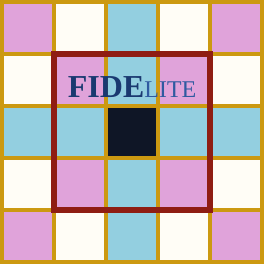
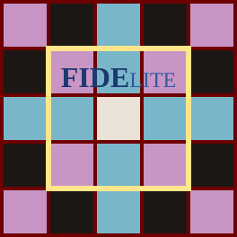
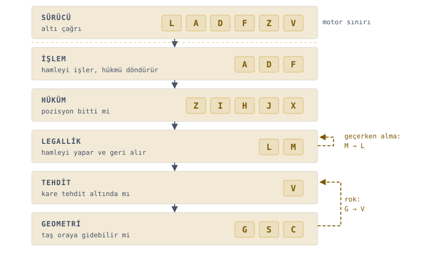
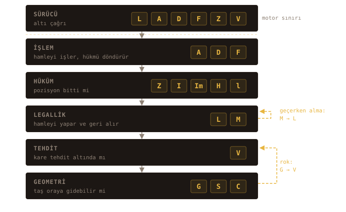
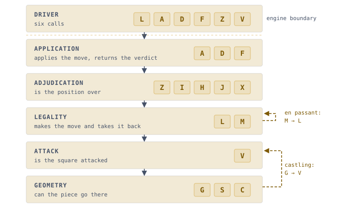
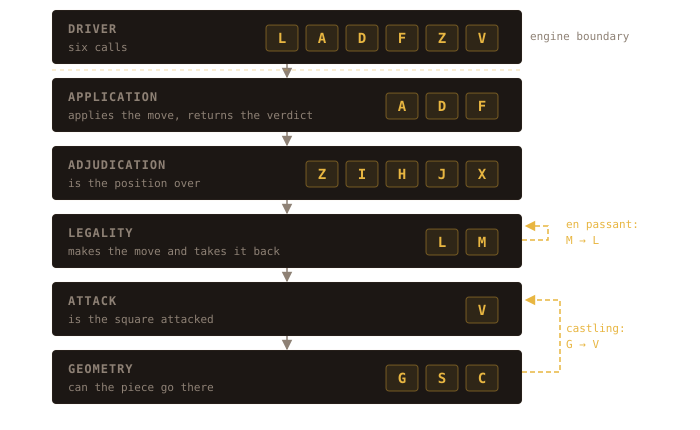

Her resmî kuralı uygulayan, dünyanın en küçük satranç oyunu.
The world's smallest chess game that enforces every official rule.
2,7 KB'tan 1.827 bayta kadar inen farklı arayüz varyantlarıyla.
Tarayıcıda çalışır, JavaScript ile yazılmıştır; kütüphane, kurulum ve sunucu istemez.
İndirdiğiniz tek bir HTML dosyası neredeyse her akıllı cihazda açılır.
In front ends ranging from 2.7 KB down to 1,827 bytes.
It runs in the browser and is written in JavaScript; no libraries, no install, no server.
The single HTML file you download opens on almost any device.
Başlangıç pozisyonunun tamamı: 64 onaltılık
(0–9 ve a–f ile yazılan, 16 tabanlı sayı) basamak, a1'den h8'e
sırayla. Her basamak bir kare, her renk bir taş türü. Motorun
tahta temsili bundan ibaret.
The entire starting position: 64 hexadecimal
(base 16, written with 0–9 and a–f) digits, a1 through
h8 in order. Each digit is one square, each colour one piece type. The engine's
board representation is nothing more than this.
boş 0Fil 2/3Kale 4/5Vezir 6/7Piyon 8/9Şah a/bAt c/d
“Mükemmelliğe, ekleyecek bir şey kalmadığında değil,
çıkarılacak bir şey kalmadığında ulaşılır.”Antoine de Saint-Exupéry
“Perfection is reached not when there is nothing left to
add, but when there is nothing left to remove.”Antoine de Saint-Exupéry
a84♜56
b8c♞57
c82♝58
d86♛59
e8a♚60
f82♝61
g8c♞62
h84♜63
a78♟48
b78♟49
c78♟50
d78♟51
e78♟52
f78♟53
g78♟54
h78♟55
a6040
b6041
c6042
d6043
e6044
f6045
g6046
h6047
a5032
b5033
c5034
d5035
e5036
f5037
g5038
h5039
a4024
b4025
c4026
d4027
e4028
f4029
g4030
h4031
a3016
b3017
c3018
d3019
e3020
f3021
g3022
h3023
a29♟8
b29♟9
c29♟10
d29♟11
e29♟12
f29♟13
g29♟14
h29♟15
a15♜0
b1d♞1
c13♝2
d17♛3
e1b♚4
f13♝5
g1d♞6
h15♜7
Her karede dört şey var: kare adı, taşın onaltılık kodu, glifi
(taşın Unicode simgesi — ♞, ♛),
ve motorun kullandığı indeks.
Every square carries four things: its name, the piece's
hexadecimal code, its glyph (the piece's Unicode symbol — ♞, ♛),
and the index the engine uses.
İndeks a1'de sıfırdan başlar, soldan sağa artar, h1'den sonra bir
üst yatayın a sütununa geçer ve h8'de 63'te biter. Bu düzenin motora ne kazandırdığı
motorun kendisi sekmesinde.
The index starts at zero on a1, rises left to right, wraps from
h1 to the a-file of the next rank up, and ends at 63 on h8. What that layout buys the engine
is on the engine itself tab.
L3 numerical sürümde kullanıcı sezgisine daha uygun olsun
diye indeksler +1 artırılmıştır, yani indeksin bir fazlası: a1 = 01,
e4 = 29, h8 = 64.
In the L3 numerical build the indices are shifted up by
one to sit closer to player intuition, so each is one more than the internal index:
a1 = 01, e4 = 29, h8 = 64.
Golfstack
Kodun kendisi, değeri ve Golfstack sanatı
The code itself, its worth, and the craft of Golfstack
2,7 KB'lık (bir dosyanın diskte kapladığı yerin ölçüsü;
1 KB = 1024 bayt) tek bir HTML dosyasına, turnuva standartlarında eksiksiz bir
satranç hakemi sığdırıldı. Golfstack konseptiyle geliştirilen bu proje, kod
optimizasyonunun sınırlarını zorlayarak en küçük boyutta en çok işlevi sunmayı
hedefleyen bir mühendislik çalışması.
İki oyuncunun aynı cihaz üzerinden karşılıklı oynadığı bu motor, harici hiçbir
kütüphaneye ihtiyaç duymadan tam donanımlı bir satranç deneyimi sağlar.
Kural tarafında eksik yok. FIDE kitabının tamamı uygulanıyor. Hangi maddenin nasıl
işlediğini Resmî oyun kuralları sekmesinde madde madde
bulabilirsiniz. Terk ve süre bitiminin yetersiz materyalle karşılaştığı o çetrefil
senaryolarda bile karar 5.1.2 ve 6.9'a birebir uyuyor. 5.2.2'nin kilitli pozisyon
dalında motorun verdiği her karar doğru: ölü dediği pozisyon gerçekten ölüdür. Ölçülen
kapsama %93; kaçan %7, içinde fil bulunan uç örnekler. Tanımadığı her durumda
motor oyunu sürdürüyor, yani hata payı hep güvenli tarafta kalıyor.
A complete, tournament-grade chess arbiter packed into a single HTML file of
2.7 KB (the measure of how much room a file takes on disk;
1 KB = 1024 bytes). Built on the Golfstack idea, the project is an engineering exercise that pushes
code optimisation to its limit: the most function in the least space.
Two players share one device, and the engine delivers a fully featured game of chess
without reaching for a single external library.
Nothing is missing on the rules side. The whole FIDE book is implemented. You can find
how each article behaves, one by one, on the
Official rules of play tab. Even in the thorny scenarios where
resignation and flag fall meet insufficient material, the ruling follows 5.1.2 and 6.9
exactly. On the blocked-position branch of 5.2.2 every ruling the engine makes is correct:
a position it calls dead really is dead. Measured coverage is 93%; the remaining 7% are edge cases involving a bishop. Anything it does not recognise, it plays on — so
the margin of error always falls on the safe side.
Teknik özellikler
Technical features
Modern siteye yakın arayüz.L3(tahtanın tıklanarak oynandığı sürüm) sürümünde tahta tıklanabilir,
seçili kare ve legal hedefler işaretlenir, terfi seçici açılır, şah göstergesi durum
satırında, beraberlik teklifi beraberlik düğmesinde görünür. Hamleden sonra tahta sıradaki oyuncunun
perspektifine döner — bu döndürme L3 input ve L3 prompt
sürümlerinde de var. L3'un taş glifleri, saat işareti ve göstergeleri
Unicode'dan geliyor — tek bir görsel dosyası, font indirmesi ya da CDN isteği
olmadan. Öbür sürümler tahtayı ASCII ya da tam genişlik karakterlerle çiziyor;
körleme sürümüyle L3 numerical hiç çizmiyor.
Fischer zaman kontrolü ve hoş saat gösterimi. Tempo 10 dakika + 5 saniye;
her hamlede oyuncunun süresine 5 saniye eklenir. İki saat ekranda emojisiyle birlikte
DAKİKA : SANİYE biçiminde işler, artış her hamlede görünür şekilde biner. Bayrak
düştüğü anda sonuç kendiliğinden doğar.
Hamle üretimi. Motor satranç mantığı bakımından tuhaflık yapmaz: legal
olmayan hamle geçmez, legal olan reddedilmez, sonuç kodu yanlış pozisyonda doğmaz.
İddia ölçüme dayanıyor — bilinen satranç programlama testleri
makul derinliklere kadar hatasız geçildi: CPW pozisyonları, van Kervinck'in zor
listesi, 6.838 pozisyonluk Vajolet külliyatı.
Kural doğruluğu ve oyun sonları. Oyun bittiğinde “berabere” deyip geçmez;
on beş sonucun hangisi geldiyse onu adıyla bildirir. Kodlar iki
karakterlik olmasına rağmen mnemonik — hangi harfin neye karşılık geldiği bir bakışta
oturuyor — ve on beşi FIDE kitapçığındaki maddelerle birebir örtüşüyor. Pat mı, 3'lü tekrar mı, ölü pozisyon mu: belirsiz kalmaz.
Beraberliğin zor yarısı. Bir hakemin, sıradan hamle üretiminin dışında
cevaplaması gereken iki soru var: bu pozisyonda mat artık hiç kurulabilir mi? ve
bayrak düştüğünde ya da bir taraf çekildiğinde rakip mat edebilecek durumda mıydı?
İkisinin de ucuz bir yarısı var, bir de zor yarısı. Ucuz yarı materyali saymak: tahtada
mat etmeye yetecek taş kaldı mı. Yaygın olan bu, ve motor da yapıyor.
Zor yarı taşları saymakla çıkmıyor. Bir pozisyon, materyal fazlasıyla
yeterliyken de ölü olabilir: piyonlar birbirini kilitlemiştir, hiçbir taş oynayamaz, iki
taraf iş birliği yapsa bile mat kurulamaz. Bayrak düştüğünde de asıl soru “rakibin yeterli
taşı var mı” değil, “bu tahtada bir mat pozisyonu kurulabiliyor mu”dur — kaybeden taraf
kendi şahının kaçış karelerini kendi taşlarıyla kapatarak yardım edebildiği için savunanın
taşları da hesaba giriyor. Motor iki yarıyı da uyguluyor.
Ve zor yarının maliyeti sanıldığı kadar yüksek değil.Kilitli pozisyon hamle araması istemiyor; tahtanın statik resminden
çıkıyor — piyonların ve şahların ulaşabildiği kareler doyana kadar büyütülüyor, hiçbiri
büyümüyorsa pozisyon ölüdür. Ölçülen kapsama %93, ve kaçırdıklarının tamamı fil
içeren uç örnekler; motor tanımadığı hiçbir pozisyona “ölü” demiyor, yalnızca bazılarını
görmüyor. Yani pratikte karşılaşılan kilitli pozisyonların neredeyse tamamı, çok küçük bir
maliyetle yakalanabiliyor (1 KB daha vererek filli pozisyonların da
neredeyse tamamını dahil etmek, yani %93'ü %99,94'e çıkarmak mümkün; çizgiyi şimdilik
burada çekmeye karar verdim).
Bozulmazlık. Ne bug ne geçersiz girdi ne de kasıt motoru yoldan çıkarabiliyor.
L3'da hatalı girdi zaten doğmuyor; hamle tıklayarak yapılıyor ve yalnızca
legal kareler işaretleniyor. Metin girişli sürümlerde motor kabul etmediği her şeyi
reddedip aynı soruyu tekrar soruyor — boş, saçma ya da kasten bozuk girdiler dahil.
Oyun kilitlenmiyor, durum bozulmuyor; notasyonu doğru ama terfi harfi geçersiz bir
girişte taş otomatik vezire terfi ediyor.
Modüler yapı. Parçalar birbirine yapışık değil: kural katmanı bir yanda
durur, arayüzün yaptığı işler öbür yanda. Beraberlik teklifini, saati ya da terk
düğmesini çıkarmak istersen çıkarırsın, geri kalan aynen çalışmaya devam eder; 5'li
tekrar ve 75 hamle gibi otomatik beraberlik sınırları için de aynısı geçerli. Başlangıç
dizilişi — istersen bir FEN'den — süre, hatta tekrar sayacının eşiği bile ayarlanabilir.
Code golf satrançlarında bu ayrım genellikle yoktur: şah kontrolü ayrı bir sınama
değildir, hamle üretimiyle değerlendirme iç içe geçer, ve kuralın nerede bitip oyun
oynamanın nerede başladığı okunamaz hâle gelir.
Okunabilirlik ve mnemonik. Kaynak okunmak için değil koşmak için yazıldı:
tek harfli isimler, tek satır, gömülmüş fonksiyonlar. Yine de isimlendirme rastgele
değil — bayt bütçesi izin verdiği sürece her değişken ve fonksiyon adı İngilizce
karşılığını çağrıştıracak şekilde seçildi. Bunun için gerçekten özen gösterildi:
büyük-küçük harf ayrımına kadar, golfstack'in izin verdiği her yerde okunabilirlik
gözetildi. Ne olup bittiği satır satır ayrı bir bölümde
açılıyor.
Hız ve derinlik. Hakemin işinin büyük kısmı tek bir yarım hamlede biter:
sıradaki oyuncunun legal hamleleri ve pozisyonun bitip bitmediği. Beraberliğin zor yarısı
bunun dışında kalıyor — orada motor gerçekten ileriye bakıyor, üstelik testte değil,
oyunun içinde, bayrak düştüğü anda. Hız bu yüzden süs değil. İkinci yer test: perft
(bir pozisyondan çıkan bütün hamle dizilerini sayan standart doğruluk
sınaması) milyonlarca düğüm sayar, orada saniyeler dakikaya döner.
engine_4x ikisi için de var — aynı kuralları uygulayan,
48 bayt daha uzun ve mantıksal olarak birebir aynı bir varyant; hamle üretiminde iş yüküne
göre 2,4× ile 9,7× arası, hüküm katmanında çok daha fazlası. Baytın nereye gittiği ve
ölçümler ayrı bir başlıkta.
Bot ayrı bir katman. Ana sürümde oyunu iki insan oynuyor; motor hamle
önermiyor, oyunu yönetiyor. İddia bayt başına kural yoğunluğunda olduğu için bot şart
değil — iki insanın oynadığı yapı, rastgele hamle seçen bir bottan bile ucuza çıkıyor.
Kural katmanı ayrı durduğu için üstüne arama koymak da çekirdeği bozmuyor: saati ve
oyuncular arası etkileşimleri dışarıda bırakıp kural tarafını yerinde tutan, botlu ayrı
bir sürüm var. Ölçülen gücü 2400 civarında; dayanakları, testleri ve başka bot
varyantları ayrıca gelecek. Sıradaki soru, kurallar ve arayüz dahil 10 KB'lık tek bir
HTML'e makul bir işlemci bütçesiyle kaç elo sığdığı — hedef 3000, sonuç ne çıkarsa
ayrıntısıyla yayımlanacak.
An interface close to a modern site. In the L3(the build you play by clicking the board) build the board is
clickable: the selected square and its legal targets are marked, a promotion picker opens,
the check indicator sits on the status line and a pending draw offer highlights the draw button. After each move the board
flips to the perspective of the player to move — that flip is in the L3 input and
L3 prompt builds too. The piece glyphs, clock symbol and indicators in
L3 all come from Unicode, with no image file, font download or CDN request.
The other builds draw the board in ASCII or full-width characters; the blindfold build and
L3 numerical draw nothing at all.
Fischer time control and a readable clock. The time control is 10 minutes +
5 seconds; every move adds 5 seconds to that player's clock. Both clocks run on screen in
MINUTES : SECONDS with their emoji, and the increment visibly lands on each move. The moment
a flag falls, the result follows by itself.
Move generation. The engine does nothing odd where chess logic is concerned: an
illegal move never passes, a legal one is never refused, and no result code fires in the
wrong position. The claim rests on measurement —
the engine passes
the standard chess-programming test suites without error to reasonable
depths: the CPW positions, van Kervinck's tricky list, and the 6,838-position Vajolet
corpus.
Rule accuracy and game endings. When a game ends it does not just say “draw”; it
names whichever of the fifteen results actually occurred. The codes
are two characters yet mnemonic — you can tell at a glance which letter stands for what — and all
fifteen map one-to-one onto articles in the FIDE handbook. Stalemate, 3-fold repetition,
a dead position: never left ambiguous.
The hard half of the draw. Beyond ordinary move generation an arbiter has two
questions to answer: can mate still be reached in this position at all? and
when the flag fell, or when one side resigned, was the opponent in a position to
mate? Each has a cheap half and a hard half. The cheap half is counting material:
is there enough left on the board to mate with. That is the common one, and the engine
does it too.
The hard half does not come from counting pieces. A position can be dead with
material to spare: the pawns have locked each other, nothing can move, and no mating
sequence exists even with both sides cooperating. At flag fall the real question is not
“does the opponent hold enough material” but “can a mating position be constructed on this
board” — since the losing side can help by shutting off its own king's escape squares with
its own pieces, the defender's material counts too. The engine implements both halves.
And the hard half costs less than you would think. A
blocked position needs no move search; it falls out of the static
picture of the board — the squares the pawns and kings can reach are grown until none of
them grows any further, and if none does, the position is dead. Measured coverage is
93%, and every case it misses involves a bishop; the engine never calls a position
dead by mistake, it only fails to see some. In other words nearly every blocked position
that actually occurs can be caught for very little
(another 1 KB would bring in almost all the bishop cases as well,
taking 93% to 99.94%; I decided to draw the line here for now).
Robustness. Neither a bug nor invalid input nor deliberate abuse can derail the
engine. In L3 bad input never arises in the first place: moves are made by
clicking and only legal squares are marked. In the text-input builds the engine rejects
anything it does not accept and simply asks the same question again — including empty,
nonsensical or intentionally malformed input. The game never locks up and the state is never
corrupted; where the notation is valid but the promotion letter is not, the piece promotes to
a queen automatically.
A modular structure. The parts are not fused together: the rule layer stands on
one side, what the interface does on the other. Take out the draw offer, the clock or the
resign button if you want to — everything else carries on working, and the same goes for
automatic draw limits like 5-fold repetition and the 75-move rule. The starting position —
from a FEN, if you like — the time control, even the threshold of the repetition counter can
all be set. Code golf chess rarely draws these lines: check is not detected by a test of its own, move
generation and evaluation run through each other, and you can no longer tell where the rules
end and playing the game begins.
Readability and mnemonics. The source was written to run, not to be read:
single-letter names, one line, inlined functions. Even so the naming is not arbitrary — as
far as the byte budget allowed, every variable and function name was chosen to echo its
English counterpart. Real care went into this, down to the distinction between upper and
lower case: readability was preserved wherever Golfstack permitted it. What actually happens
is unpacked line by line in a separate section.
Speed and depth. Most of an arbiter's work is over in a single half-move: the
legal moves of the side to move, and whether the game has ended. The hard half of the draw
falls outside that — there the engine really does look ahead, and it does so during the
game, at the moment a flag falls, not in testing. Speed is therefore not decoration. The
second place it counts is testing: perft (the standard correctness test
that counts every move sequence from a position) counts millions of nodes, where
seconds turn into minutes. engine_4x serves both — a
variant that enforces the same rules, 48 bytes longer and logically identical; between 2.4×
and 9.7× on move generation depending on the workload, and a great deal more on the
adjudication layer. Where those bytes go, and the measurements behind them, are
under a separate heading.
The bot is a separate layer. In the main build two people play; the engine does
not suggest moves, it runs the game. The claim is about rule density per byte, so no bot is
required — a build where two people play comes out cheaper than one driven by a bot picking
moves at random. And because the rule layer stands apart, putting a search on top does not
disturb the core: there is a separate build with a bot, one that leaves the clock and the
interactions between players out and keeps the rule side in place. Its measured strength is around 2400 Elo; the evidence, the tests and further bot variants are still to come.
The next question is how much Elo fits into a single 10 KB HTML file, rules and interface
included, on a reasonable processor budget — the target is 3000, and whatever the result, it
will be published in full.
Asıl iddia tek tek bu maddeler değil, oranın kendisi: hizmet başına düşen bayt.
Yukarıdakilerin tamamı, indirilebilir tek bir 2,7 KB'lık dosyanın içinden çıkıyor.
The real claim is not these items one by one, but the ratio itself: bytes per unit of
service. Everything above comes out of a single downloadable file of 2.7 KB.
Motor geliştirme aşamasında uç durumlar dahil binlerce kez sınandı ve bilinen
hataların tamamı ayıklandı. Yine de oyun sırasında gözünüze çarpan bir şey olursa
bildirin; geri bildirim motoru doğrudan iyileştirir.
The engine was tested thousands of times during development, edge cases included, and
every known bug was cleared. Even so, if something catches your eye during a game, report
it; feedback improves the engine directly.
Oyna
Play
Sürümü seç, başlat
Pick a build, start it
Her sürüm kendi penceresinde çalışır, saatler ancak başlattığında işlemeye
başlar. Sürüm değiştirmek çalışan oyunu kapatır.
L3 ve L3 input sürümlerinde tahta küçük geliyorsa
tarayıcının yakınlaştırmasını kullan — Ctrl+, macOS'ta
⌘+. Oyun pencerenin içinde birlikte ölçeklenir;
Ctrl0 eski hâline döndürür.
Each build runs in its own frame, and the clocks only start ticking once you start it.
Changing builds closes the running game.
If the board feels small in the L3 and L3 input builds, use the
browser's zoom — Ctrl+, or ⌘+ on macOS. The
game scales along with the frame; Ctrl0 restores it.
Sekiz sürümden ikisi — L3 prompt ve L3 numerical — hamleleri
prompt() penceresiyle alıyor ve oyun sonucunu alert() ile
bildiriyor. Tarayıcın bu pencereleri engelliyorsa — çoğu tarayıcı ikinciden sonra
“bu sayfanın iletişim kutularını engelle” seçeneği sunar — oyun sessizce durur.
Engellediysen sayfayı yenile ve kutuları geri aç. Kalan altı sürüm hiç iletişim
kutusu kullanmaz.
Two of the eight builds — L3 prompt and L3 numerical — take moves
through a prompt() dialog and announce the result with alert(). If
your browser blocks those dialogs — most offer a “prevent this page from creating dialogs”
option after the second one — the game stops silently. If you have blocked them, reload the
page and allow dialogs again. The remaining six builds use no dialogs at all.
Seçili sürüm L3. Oyunu başlat ya da kodunu göster.Selected build L3. Start the game or show its code.
Carving the marble — a chess universe fitted into bytes
Code golf, bir programı işlevinden, kurallarından ve mantıksal doğruluğundan
hiçbir ödün vermeden mümkün olan en az karakterle yazma sanatı. Kısıt tek: davranış
aynı kalacak, hacim küçülecek.
Bu proje baştan sona tek bir sorunun peşindeydi:
Code golf is the art of writing a program in as few characters as possible without
giving up anything of its function, its rules or its logical correctness. There is one
constraint: the behaviour stays the same, the volume shrinks.
From beginning to end this project chased a single question:
Baştan sona hiçbir kuralı atlamayan, %100 FIDE uyumlu
eksiksiz bir satranç maçı en az kaç bayt olabilir?
What is the smallest number of bytes a complete,
100% FIDE-compliant game of chess can take, skipping no rule from first move to last?
Cevabı aşağıda. Ama bu soruyu sorabilmek için önce “eksiksiz” kelimesinin nerede
başladığına karar vermek gerekiyordu.
The answer is below. But to ask the question at all, I first had to decide where the
word “complete” begins.
Neyi çıkarırsak hâlâ satranç kalır
What can we remove and still have chess
Motoru yazarken kendimi bir anda Theseus'un Gemisi paradoksunun ortasında buldum:
bir satranç oyunundan neleri söküp atarsak, o oyun hâlâ satranç kalmaya devam eder?
Burada kaçınılmaz bir kimlik sorusu çıkıyor. On beşinci yüzyıl öncesinin satrancını
başlangıç noktası almadım — orada fil yalnızca iki kare atlıyor, vezir tek kare çapraz
gidiyor, rok ve piyonun çift adımı yok. Aynı adı taşısalar da o oyunla bugün oynadığımız
oyun temelde iki ayrı kimlik; onu taban kabul etmek, sorunun cevabını başka bir oyun
için vermek olurdu.
Başlangıç noktası olarak şunu aldım: bugünkü taş hareketleri, şah, mat ve pat,
piyonun tek kare ilerlemesi, otomatik vezir terfisi. Çıkarılabilecek ne varsa
çıkarıldığında geriye kalan çekirdek bu. Buradan bir madde daha eksiltmek oyunu satranç
olmaktan çıkarıyor.
Çekirdek eldeyken tek yön kalmıştı: eklemek.
Writing the engine, I found myself in the middle of the Ship of Theseus paradox: what
can you strip out of a game of chess and still be left with chess?
An unavoidable question of identity surfaces here. I did not take pre-fifteenth-century
chess as the starting point — there the bishop leaps exactly two squares, the queen moves
one square diagonally, and there is no castling and no double pawn step. They share a name,
but that game and the one we play today are fundamentally two different identities; taking
it as the baseline would have meant answering the question for a different game.
What I took as the starting point was this: today's piece movement, check, checkmate and
stalemate, the pawn's single-square advance, and automatic promotion to a queen. That is the
core left over once everything removable has been removed. Take one more article away and
the game stops being chess.
With the core in hand there was only one direction left: adding.
Çekirdekten tam hakemliğe
From core to full arbitration
Motor tek seferde doğmadı, üst üste binen turlarla büyüdü.
Önce seçimli terfi geldi; piyon vezire mahkûm olmaktan çıktı, at, fil ve kale de
birer seçenek oldu. Ardından piyonun iki kare ilerlemesi ve onunla birlikte gelmek
zorunda olan geçerken alma — ikisi ayrılamaz, çünkü ikincisi birincisinin açtığı
boşluğu kapatır. Sonra rok. Bu noktada tahtada olup biten artık bugünkü satrancın
kendisiydi.
Sonrasında tahtanın dışına çıktım. Oyunun sonsuza kadar sürmesini engelleyen iki
teorik sınır, 50 hamle kuralı ve saat, motora bu aşamada girdi.
Normalde orada bırakacaktım. Ama bu kadar ilerlemişken kural kitabının geri kalanını
da tamamlamak istedim: pozisyon tekrarı, yetersiz materyal, beraberlik teklifi ve
iddiası, bayrak düşmesi, oyundan çekilme. Hakemin tahtaya hiç bakmadan verdiği kararlar
da böylece işin içine girdi.
Bu yolun düz bir çizgi olduğunu söyleyemem. Sık sık, daha önce eklediğim bir kuralın
FIDE'ye tam uymadığını ya da belirli bir pozisyonda yanlış davrandığını fark edip geri
dönmem gerekti. Bazen yeni bir keşif, o ana kadar yazdığım çözümün tamamını çöpe
attırdı. Her geri dönüş yapısal bir revizyon, arkasından da yeni bir bayt optimizasyonu
demekti; kod büyüdü, sonra yeniden küçüldü.
Uzun ve öğretici bir süreç oldu, hem kodlama hem satranç mantığı tarafında. Hangi
kuralın neyi kırdığını, hangi keşfin neyi baştan yazdırdığını ayrı bir “Yapım süreci”
bölümünde adım adım ve çok daha ayrıntılı anlatacağım.
The engine did not arrive in one piece; it grew through overlapping rounds.
Choice of promotion piece came first, releasing the pawn from its sentence to the queen
and making knight, bishop and rook options too. Then the pawn's two-square advance, and with
it the en passant capture that has to come along — the two are inseparable, because the
second closes the hole the first opens. Then castling. At that point what was happening on
the board was chess as we play it today.
After that I moved off the board. The two theoretical limits that keep a game from
running forever, the 50-move rule and the clock, entered the engine at this stage.
Normally I would have stopped there. But having come this far I wanted to finish the rest
of the rulebook: repetition of position, insufficient material, the draw offer and the draw
claim, flag fall, resignation. That brought in the rulings an arbiter makes without ever
looking at the board.
I cannot claim this path was a straight line. Again and again I had to go back after
noticing that a rule I had already added did not match FIDE exactly, or behaved wrongly in a
particular position. Sometimes a new discovery threw out the entire solution I had written
up to that point. Every reversal meant a structural revision and then a fresh round of byte
optimisation; the code grew, then shrank again.
It was a long and instructive process, on both the coding and the chess-logic side. Which
rule broke what, which discovery forced a rewrite of what — I will tell that step by step
and in far more detail in a separate “Build log” section.
Yontma nerede biter
Where the carving stops
Michelangelo'ya heykeli nasıl yaptığını sorduklarında verdiği meşhur cevap şudur:
Asked how he made his sculptures, Michelangelo is famously said to have answered:
Heykel zaten mermer bloğun içinde tamamlanmış hâldedir. Ben sadece
gereksiz kısımları yontup atıyorum.Michelangelo
The sculpture is already complete inside the block of marble.
I merely carve away the parts that are not needed.Michelangelo
Golfstack'te yaptığım da buydu. Kuralların ne olduğu baştan belliydi; iş, o kuralları
anlatan her fazlalığı yontmaktı.
Claude Shannon'ın bilgi teorisi bu yontmanın nerede biteceğini söylüyor: her mesajın
kayıpsız sıkıştırılabileceği bir alt sınır var, ve o sınırın altındaki tasarruf artık
tasarruf değil, bilgi kaybıdır. Code golf tam olarak o sınıra doğru yürümek. Buradaki
fark, sıkıştırmanın kayıpsız olmak zorunda olması: kuralların gerektirdiği mantıksal
veriden tek bir madde bile düşerse elde kalan şey daha küçük bir satranç olmaz, satranç
olmayan bir şey olur.
Sorunun cevabı bu yüzden tek bir sayı: 1.827 bayt.numerical_packed.html, iki insan oyuncu arasındaki resmî bir maçı baştan
sona yönetiyor.
That is what I did in Golfstack. What the rules were was clear from the outset; the work
was carving away every excess that described them.
Claude Shannon's information theory tells you where that carving ends: every message has a
lower bound below which it cannot be compressed losslessly, and any saving past that bound
is no longer a saving but a loss of information. Code golf is exactly the walk toward that
bound. The difference here is that the compression has to be lossless: drop a single article
from the logical data the rules require and what is left is not a smaller chess; it is
something that is not chess.
The answer to the question is therefore a single number: 1,827 bytes.numerical_packed.html arbitrates an official game between two human players
from the first move to the last.
Neden tarayıcı ve JavaScript
Why the browser, and why JavaScript
Akla gelen ilk sorulardan biri şu: neden tarayıcı, neden JavaScript?
Cevabın ilk yarısı erişimle ilgili. Hangi cihazda, hangi işletim sisteminde, hangi
ortamda açılabildiğine bakılırsa tarayıcı açık ara birinci sırada. Derleyici yok,
çalışma zamanı kurulumu yok, paket yöneticisi yok; indirilen dosyaya çift tıklamak
yetiyor. Üstelik HTML görsel katmanı neredeyse bedavaya veriyor — tahta, saat ve
göstergeler için ayrı bir arayüz altyapısı yazmak gerekmiyor, dahası
<html>, <head>, <body> hiç
yazılmasa bile dosya açılıyor. Motorun oyuncuya ulaşmak için kat etmesi gereken mesafe
bu kadar kısa olmasaydı, 2,7 KB'lık iddianın pratikte bir karşılığı olmazdı.
İkinci yarısı dilin kendisiyle ilgili. JavaScript golfstack'e beklenenden çok daha
elverişli: değişken bildirim anahtar kelimesi istemiyor, giriş noktası ve içe aktarma
gibi zorunlu bir iskeleti yok, örtük dönüşüm sayesinde tahtanın sayı kodlaması tek bir
tip çevrimi yazdırmıyor. Ok fonksiyonu, üçlü operatör ve virgül operatörü birlikte
çalışınca bütün bir fonksiyon süslü parantez ve return olmadan tek ifadeye
sığıyor. Kendi kendini açan paketleyiciler de bu dile özgü; motorun paketlenmiş hâli
doğrudan buna dayanıyor.
Buradan bir itiraz doğuyor: tarayıcı yüzlerce megabayt, JavaScript motorunu da
çalışma zamanını da o veriyor. Öyleyse 1.827 bayt kelime oyunu değil mi?
Sıfır taban diye bir şey yok. C ile yazsam libc ve bir işletim sistemi gerekirdi,
assembly ile yazsam bir komut kümesi ve bir makine. Çalışma zamanını da sayan ölçünün
duracağı bir yer yok; öyle ölçülürse hiçbir dilde boyut iddiası kurulamaz. Code golf
bu yüzden çizgiyi hep aynı yere çeker: yazılan kod ile dışarıdan eklenen kütüphaneler
sayılır, ortam ve taban sayılmaz. Tarayıcı da işletim sistemi de işlemci de kimsenin
hanesine yazılmaz. Diller arası karşılaştırma bu ölçüyle yapılır, ve her rekor denemesi
istenen dile açıktır.
Son kullanıcının gözünden bakıp daha sıkı bir ölçü isteyen de haklıdır: aynı ortam,
aynı dil, sıfır kütüphane. İkisi de meşru, ve ikisinde de çizginin bu yanında tek bir
dosya duruyor — indirilen, paketlenen, eklenen hiçbir şey yok.
“Dünyanın en küçüğü” iddiası bu ölçüye dayanıyor. Uzunca bir süredir arıyorum ve
her resmî kuralı uygulayan daha küçüğüne rastlamadım, ne JavaScript'te ne başka bir
yerde. İddia çürütülebilir, öyle de olmalı: biri daha küçüğünü çıkarırsa düşer.
Çıkana kadar duruyor.
One of the first questions that comes up is this: why the browser, why JavaScript?
The first half of the answer is about reach. Measured by which device, which operating
system and which environment it will open in, the browser comes first by a wide margin. No
compiler, no runtime install, no package manager; double-clicking the downloaded file is
enough. On top of that HTML hands you the visual layer almost for free — no separate UI
infrastructure is needed for the board, the clocks and the indicators, and the file even
opens when <html>, <head> and <body>
are never written at all. If the distance the engine had to cover to reach a player were any
longer, the 2.7 KB claim would mean nothing in practice.
The second half is about the language itself. JavaScript suits Golfstack far better than
you would expect: it requires no variable declaration keyword, it imposes no mandatory
skeleton of entry point and imports, and implicit coercion means the board's numeric
encoding never forces you to write a cast. Arrow functions, the ternary operator and the
comma operator working together let an entire function collapse into one expression with no
braces and no return. Self-extracting packers are native to this language too;
the packed form of the engine rests directly on that.
An objection follows from this: the browser is hundreds of megabytes, and it supplies
both the JavaScript engine and the runtime. Isn't 1,827 bytes just a play on words, then?
There is no such thing as a zero baseline. Written in C it would need libc and an
operating system; written in assembly, an instruction set and a machine. A measure that also
counts the runtime has nowhere to stop; measured that way, no size claim could be made in
any language. Code golf therefore always draws the line in the same place: the code you
write and the libraries you pull in count; the environment and the baseline do not.
Neither the browser nor the operating system nor the processor goes on the tab.
Cross-language comparison is done on this measure, and record attempts are open to
any language.
Anyone who takes the end user's view and wants a stricter measure is also right: same
environment, same language, zero libraries. Both are legitimate, and under both a single
file stands on this side of the line — nothing downloaded, nothing bundled, nothing
added.
The “smallest in the world” claim rests on that measure. I have been looking for a good
while and have not come across anything smaller that enforces every official rule, in
JavaScript or anywhere else. The claim is falsifiable, and it should be: it falls the moment
someone ships something smaller. Until then it stands.
Kural katmanı ayrı, bot ayrı
The rule layer is one thing, the bot another
İkinci soru daha sert: neden ana sürümde bir yapay zekâ rakip yok?
Alışılmış hat belli. Ekrana bir tahta çizilir, taşlar dizilir, oyuncu rastgeleden
biraz daha iyi oynayan bir botla kapışır; bugüne kadarki denemelerin büyük çoğunluğu bu
çizgide ilerledi. Code golf dünyasında birkaç yüz bayta sığdırılmış satranç botları var,
ama yer açmak için rok, geçerken alma, 50 hamle, 3'lü tekrar gibi oyunun belkemiğini
oluşturan kuralların neredeyse hepsini feda ediyorlar. Bot mantığı kodu ciddi biçimde
şişirir; iki insanın oynadığı yapı bayt bütçesi açısından çok daha ucuz. Üstelik bir bot
eklemek FIDE uyumluluğuna hiçbir şey katmıyor.
Asıl mesele ölçülebilirlik. Botun tanımı belirsiz: 100 baytın altına sığan, rastgele
ama legal hamle yapan şey bot mudur? Materyal sayan bot mudur, yoksa eşik daha yukarıda
mı? Bunu kim söyleyecek? Kurallar öyle değil, kesin ve net. Bir kodun kuralı uygulayıp
uygulamadığı bakıldığında görünüyor, tartışmaya yer bırakmıyor. Süreç boyunca ben de bot
yazmayı denedim; sonra bütün enerjimi ölçülebilir olan tarafa verdim.
İkisi kodda da ayrı duruyor, ve bu tesadüf değil. Motor çekirdeği sürücüden hiçbir şey
bilmiyor; üstüne bir arama koymak kural tarafına dokunmuyor. Botlu sürüm tam olarak böyle
çıktı: aynı kural katmanı, saat ve oyuncular arası etkileşimler dışarıda, üstünde arama.
Ölçülen gücü 2400 civarında. Bitmiş saymıyorum, çünkü bir botu buraya taşımak için
kendime koyduğum ölçüt hakem motorununkiyle aynı: bayt/kalite oranında şaheser olması. Bu
daha uzun sürecek bir iş, ama çok keyif aldığım bir hobi olduğu için o tarafta da somut
bir rekor denemesi yapacağım.
Geriye ölçülebilir tarafın ne satın aldığı kalıyor: 1.827 baytlık bu yapı,
beraberliğin zor yarısında büyük platformların ilerisinde. Yaygın olan, saf FIDE
uygulayan yerlerde bile, materyal testiyle yetinmek: tahtada mat etmeye yetecek taş
var mı. Pozisyonun kendisine bakan taraf — bayrak düştüğünde mat pozisyonunun kurulup
kurulamayacağı, ve kilitli pozisyonların tespiti — yaygın değil.
Bunun bir de ölçüsü var: CHA-Solver
büyük bir açık oyun veritabanını baştan sona tarayıp 200 bin civarında yanlış
sonuçlanmış oyun saydı — 50 bini kilitli pozisyonlardan, kalan 150 bini
bayrak düşmesinde sorulmayan sorudan. Chess.com bazı maddelerde
FIDE-USCF hibriti uyguluyor; eksiklik değil tercih, iki
federasyonun kurallarını bilerek harmanlıyorlar. Buradaki tercih başka: tek kitap, tek
ölçü. Aynı maddelerde motor bu yüzden FIDE'ye daha sıkı bağlı.
The second question is harder: why is there no AI opponent in the main build?
The usual route is clear enough. A board is drawn on the screen, the pieces are set out,
and the player takes on a bot that plays a little better than random; the great majority of
attempts so far have run along that line. The code-golf world has chess bots squeezed into a
few hundred bytes, but to make room they give up almost every rule that forms the backbone
of the game — castling, en passant, the 50-move rule, 3-fold repetition. Bot logic inflates
the code considerably; a build where two people play is far cheaper in byte budget. And
adding a bot contributes nothing to FIDE compliance.
The real issue is measurability. What counts as a bot is vague: is the thing that fits under 100 bytes and plays random but legal moves a bot? Is one that counts material a
bot, or is the threshold higher? Who decides? Rules are not like that; they are exact.
Whether a piece of code implements an article is visible on inspection and leaves no room
for argument. I tried writing a bot along the way too; then I put all my energy into the
side that can be measured.
The two stand apart in the code as well, and that is no accident. The engine core knows
nothing about the driver, so putting a search on top does not touch the rule side. That is
exactly how the build with a bot came about: the same rule layer, the clock and the
interactions between players left out, a search on top. Its measured strength is around 2400 Elo.
I do not consider it finished, because the criterion I have set for
bringing a bot here is the same one the arbiter engine had to meet: it has to be a
masterpiece in ratio of bytes to quality. That is a longer job — but since it is a hobby I
enjoy a great deal, I will make a concrete attempt at a record on that side too.
What remains is what the measurable side bought: at 1,827 bytes this build is
ahead of the large platforms on the hard half of the draw. The common practice, even
where pure FIDE is applied, is to stop at the material test: is there enough left on
the board to mate with. The side that looks at the position itself — whether a mating
position can be constructed once the flag has fallen, and the detection of
blocked positions — is not common. And that has been measured:
CHA-Solver scanned a
large public game database end to end and counted around 200,000 wrongly decided
games — 50,000 of them from blocked positions, the remaining 150,000 from
the question that goes unasked at flag fall. Chess.com applies a
FIDE-USCF hybrid for some articles; not a shortcoming but a
choice, blending the rules of two federations deliberately. The choice here is a different
one: one book, one measure. On those same articles the engine is therefore bound more
tightly to FIDE.
Baytların ötesinde
Beyond the bytes
Code golf dünyasındaki satranç projeleri genellikle 50 hamle sınırından, 3'lü tekrardan, yetersiz materyalden, çoğu zaman rok ve geçerken almadan taviz verip yalnızca
temel çekirdeğe odaklanıyor. Ben kimsenin pek uğramadığı tarafa baktım; projenin
özgünlüğü de galiba tam olarak oradan doğdu. Bildiğim kadarıyla Golfstack, %100 FIDE
standardını bu kadar dar bir bayt alanına sığdırabilen dünyanın en küçük tam hakem
motoru.
Ticari bir ürün değil, öyle bir iddiası da yok. Ama satrancın bütün kurallarını bu
şekilde katmanlandırıp en az bayta sığdırmak, kod tarafında sınır zorlayan katıksız bir
mühendislik işi.
Bu noktaya gelirken Claude ve Gemini gibi modellerden ciddi destek aldım. Normalde
aylar sürecek hata ayıklama, kod optimizasyonu ve tarayıcı davranışlarını didikleme
işini bu araçlarla inanılmaz kısalttım. Kararlar bana ait kaldı, kazandığım şey hız
oldu.
Çehov'un dediği gibi: uzun yazmak kolaydır, asıl zor olan kısa yazmaktır. Ben de bu
projede satrancın o devasa dünyasını, işlevinden hiçbir şey kaybetmeyen en kısa hâline
dönüştürmeye çalıştım.
Chess projects in the code-golf world generally compromise on the 50-move limit,
3-fold repetition and insufficient material — often on castling and en passant too — and
focus on the basic core alone. I looked at the side hardly anyone visits, and I think that
is exactly where the project's originality came from. As far as I know, Golfstack is the
world's smallest complete arbiter engine able to fit the full 100% FIDE standard into a byte
space this narrow.
It is not a commercial product and makes no such claim. But layering all the rules of
chess this way and fitting them into the fewest bytes is pure engineering, pushing the limit
on the code side.
Getting to this point I had substantial help from models like Claude and Gemini. Work
that would normally take months — debugging, code optimisation, picking apart browser
behaviour — I compressed enormously with those tools. The decisions stayed mine; what I
gained was speed.
As Chekhov put it: writing long is easy, writing short is the hard part. In this project
I tried to turn that vast world of chess into its shortest form without losing anything of
its function.
FideLite — adın ve logonun anlamı
FideLite — what the name and the logo mean


Ad iki parçadan: FIDE + Lite. Birleşince Fransızca
fidélité okunuşuna düşer — sadakat, bağlılık. Anlattığı da bu:
dosya küçülürken kural kitabına bağlılığın küçülmemesi. “Lite” hafiflik,
“Fide” federasyon; ikisi bir arada, hafiflik uğruna hiçbir maddenin atılmadığı
bir hakem.
Logo tek bir karenin etrafına kurulu. Ortadaki kare
başlangıç, geri kalan yirmi dört kare o kareden hareket eden taşların
gidebileceği yerler.
The name has two parts: FIDE + Lite. Together they land on the sound of
the French fidélité — fidelity, adherence. Which is precisely the point:
the file shrinks, the adherence to the rulebook does not. “Lite” is the lightness,
“Fide” the federation; the two at once, an arbiter that discards no article for the sake
of being light.
The logo is built around a single square. The square at the centre is the
origin; the remaining twenty-four squares are where pieces moving from that
square can go.
Başlangıç — ortadaki tek kare
At — sekiz nötr kare, L sıçramaları
Kale — sekiz turkuaz kare, dört ışın
Fil — sekiz leylak kare, iki köşegen
Vezir — kale ve fil karelerinin tümü
Şah — bordo çerçeve, bir adımlık erim
Piyon — tek karelik ilerlemesinin düştüğü kare: FIDElite yazısı
Origin — the single square at the centre
Knight — eight neutral squares, the L-jumps
Rook — eight turquoise squares, four rays
Bishop — eight lilac squares, two diagonals
Queen — every rook and bishop square
King — the crimson frame, a one-step range
Pawn — the square its single-step advance lands on: the FIDElite wordmark
Kurallar
Rules
Motorun uyguladığı kurallar
The rules the engine enforces
1. Taş hareketleri, geçerlilik ve şah güvenliği
1. Piece movement, legality and king safety
Geometrik hatlar. Kale, fil ve vezir kendi doğrultularında ilerler; şah
her yöne bir kare; piyon dikey ileri gider, çapraz alır; at “L” geometrisiyle atlar.
Yolun açıklığı. At dışındaki tüm taşlar için hat üzerinde başka taş
bulunmamalıdır.
Geçerlilik. Hedef kare boş olmalı ya da rakip taş barındırmalıdır; kendi
taşının bulunduğu kareye hamle yapılamaz.
Şah güvenliği. Hiçbir hamle kendi şahını tehdit altında bırakamaz.
Lines of movement. Rook, bishop and queen slide along their own lines; the
king one square in any direction; the pawn advances along the file and captures diagonally;
the knight jumps in an L.
Clear path. For every piece except the knight, no other piece may stand in its path.
Legality of the target. The destination square must be empty or hold an enemy
piece; no move may be made onto a square occupied by one's own piece.
King safety. No move may leave one's own king under attack.
2. Özel hamleler
2. Special moves
Rok. Şah ve kale hiç hareket etmemiş, aralarındaki kareler boş, şah şahta
değil ve geçtiği kare tehdit altında değilse yapılan çift taş hamlesidir. Hareket
eden kalenin rok hakkı gider; şah hareket etmişse iki kalenin de hakkı gider.
Geçerken alma. İki kare çıkan rakip piyonun hemen ardından, tek kare
çıkmış gibi çaprazlama alınmasıdır. Yalnızca o hamlelik geçerlidir.
Terfi. Son yataya ulaşan piyon, şah ve piyon dışındaki kendi taşlarından
birine — vezir, kale, fil veya at — dönüştürülür.
Castling. A two-piece move available when king and rook have never moved, the
squares between them are empty, the king is not in check, and the square it crosses is not
attacked. Moving a rook forfeits that rook's castling right; moving the king forfeits the
right on both.
En passant. Capturing an enemy pawn that has just advanced two squares as though
it had advanced only one, taking it diagonally. The right lasts for that move only.
Promotion. A pawn reaching the last rank is replaced by a piece of its own
colour other than a king or pawn — queen, rook, bishop or knight.
3. Mat ve pat
3. Checkmate and stalemate
Mat. Şah tehdit altındadır ve tehdidi kaldıracak hiçbir geçerli hamle
yoktur. Mat eden taraf kazanır.
Pat. Sırası gelen tarafın şahı tehdit altında değildir, ama hiçbir
geçerli hamlesi kalmamıştır. Oyun berabere biter.
Checkmate. The king is under attack and no legal move removes the attack. The
mating side wins.
Stalemate. The king of the side to move is not under attack, but that side
has no legal move left. The game ends in a draw.
4. Terk, süre bitimi ve yetersiz materyal
4. Resignation, flag fall and insufficient material
Terk ve süre bitimi. Oyundan çekilen veya süresi biten taraf kural olarak
kaybeder.
Ölü pozisyon. Geçerli hamle dizilimleriyle matın geometrik olarak imkânsız
olduğu durumda oyun anında berabere biter: şah–şah, şah–şah+fil, şah–şah+at, ve bütün
filleri aynı renk karelerde olan şah+fil–şah+fil. Fil sayısının burada bir etkisi yok:
iki tarafta kaç fil olursa olsun, hepsi tek renk karedeyse mat kurulamaz. Buna ek olarak
yalnız şah ve piyon kalmış kilitli pozisyonlar da tespit ediliyor.
Mat imkânsızken terk veya süre bitimi. Çekilen ya da süresi biten taraf
normalde kaybeder; ancak rakibinin geçerli hamlelerle mat etmesi geometrik olarak
tümüyle imkânsızsa oyun berabere biter. Süre bitimi için 6.9, çekilme için
5.1.2 — ikincisi 2023'te eklendi.
Resignation and flag fall. A player who resigns or whose time runs out loses by
rule.
Dead position. Where checkmate is geometrically impossible by any sequence of
legal moves, the game is drawn at once: K vs K, K vs K+B, K vs K+N, and K+B vs K+B with all
bishops on squares of the same colour. The number of bishops plays no part: however many
either side holds, if they all stand on one square colour no mate can be constructed.
Blocked positions with only kings and pawns left on the board are detected as well.
Resignation or flag fall when mate is impossible. The player who resigns or flags
normally loses; but if it is geometrically impossible for the opponent to deliver mate by
any legal moves, the game is a draw. Article 6.9 covers flag fall and 5.1.2
resignation — the latter was added in 2023.
Bu istisna “rakip mat etmeye zorlayabilir mi” diye sormaz; “bu materyalle
mat pozisyonu kurulabilir mi” diye sorar. Kaybeden taraf kendi taşlarıyla
şahının kaçış karelerini kapatarak yardım edebileceği için, savunan tarafın taşları
da hesaba girer — mekanizma boğma mattakinin aynısı.
This exception does not ask “can the opponent force mate?”; it asks “can a mating
position be constructed with this material?” Because the losing side can help by
shutting off its own king's escape squares with its own pieces, the defender's material
counts too — the mechanism is the same one as in a smothered mate.
Materyal
Karar
Çıplak şah
Yetersiz
Tek fil
Yetersiz
Tek renk karelerde filler
Yetersiz
Tek at
Yetersiz
İki renkte filler
Yeterli
Fil + at
Yeterli
İki at
Yeterli
Herhangi bir kale, vezir veya piyon
Yeterli
Material
Ruling
Lone king
Insufficient
A single bishop
Insufficient
Bishops all on one square colour
Insufficient
A single knight
Insufficient
Bishops on both square colours
Sufficient
Bishop + knight
Sufficient
Two knights
Sufficient
Any rook, queen or pawn
Sufficient
Tek atla mat ancak savunan taraf kendini duvara kapatacak bir taşa sahipse
kurulabilir — fil, at, piyon, hatta kale. Savunan vezir bu işi göremez, çünkü köşedeki kaçışı kapatabileceği her
kareden aynı zamanda mat eden atı tehdit eder. Savunan piyonu yeterli kılan asıl şey
terfi: madde herhangi bir geçerli hamle dizisine izin verdiği için piyon, sıkıştırmayı
yapacak taşa dönüşebilir.
Mate with a lone knight can only be constructed if the defending side owns a piece to wall
itself in with — a bishop, a knight, a pawn, even a rook. A defending queen cannot do the job, because from every square where it could
close the escape in the corner it simultaneously attacks the mating knight. What makes a
defending pawn sufficient is promotion: the article allows any series of legal moves, so the
pawn can turn into the piece that does the shutting in.
Mat eden
Savunan
Mat
Kurulabilen pozisyon
Ş
Ş + herhangi bir taş
Yok
kurulamaz
Ş + Fil
Ş
Yok
kurulamaz
Ş + Fil
Ş + Fil aynı renk
Yok
kurulamaz
Ş + Fil
Ş + Kale
Yok
kurulamaz
Ş + Fil
Ş + Vezir
Yok
kurulamaz
Ş + At
Ş
Yok
kurulamaz
Ş + At
Ş + Vezir
Yok
kurulamaz
Ş + At
Ş + Kale
Var
♚♜♞♚
Ş + At
Ş + Fil
Var
♚♝♚♞
Ş + At
Ş + At
Var
♚♞♞♚
Ş + At
Ş + Piyon
Var
Terfiden sonra
Ş + Fil
Ş + At
Var
♚♞♝♚
Ş + Fil
Ş + Fil zıt renk
Var
♚♝♚♝
Ş + Fil
Ş + Piyon
Var
Terfiden sonra
Ş + At + At
Ş
Var
♞♚♞♚
Mating side
Defender
Mate
Constructible position
K
K + any piece
No
not constructible
K + B
K
No
not constructible
K + B
K + B same colour
No
not constructible
K + B
K + R
No
not constructible
K + B
K + Q
No
not constructible
K + N
K
No
not constructible
K + N
K + Q
No
not constructible
K + N
K + R
Yes
♚♜♞♚
K + N
K + B
Yes
♚♝♚♞
K + N
K + N
Yes
♚♞♞♚
K + N
K + P
Yes
After promotion
K + B
K + N
Yes
♚♞♝♚
K + B
K + B opposite colour
Yes
♚♝♚♝
K + B
K + P
Yes
After promotion
K + N + N
K
Yes
♞♚♞♚
Bunlar kurulabilen pozisyonlar, zorlanabilen sonuçlar değil. Hiçbiri kazanma
yöntemi değil; yalnızca “bu materyalle mat diye bir şey var mı” sorusunun cevabı,
ve 6.9 ile 5.1.2 tam olarak bunu sorar. Materyale dayanmayan ölü pozisyonlar —
kilitlenmiş bir piyon zinciri gibi — şah ve piyon kaldığı sürece ayrıca tespit ediliyor;
onu görmek tarama değil arama gerektiriyordu.
These are constructible positions, not forced wins. None of them is a winning
method; they are only the answer to “does mate exist at all with this material?”, and that
is exactly what 6.9 and 5.1.2 ask. Dead positions that do not rest on material — a locked
pawn chain, say — are detected separately, as long as only kings and pawns remain; seeing
those took a search, not a scan.
5.2.2'nin ikinci yarısı: kilitli pozisyonlar
The second half of 5.2.2: blocked positions
FIDE'nin 5.2.2 maddesi şöyle: hiçbir oyuncunun herhangi bir geçerli hamle
dizisiyle rakibin şahını mat edemeyeceği bir pozisyon ortaya çıktığında oyun
berabere biter. Buna ölü pozisyon denir.
Bu koşulun yetersiz materyalden doğan hâli tamamen uygulanıyor; yukarıdaki iki tablo
tam olarak onu anlatıyor. İkinci hâli, yani materyalin yeterli olduğu ama matın yine de
imkânsız olduğu kilitli pozisyonlar, artık uygulanıyor — kısmen. Tahtada yalnız şah
ve piyon kaldığında motor pozisyonun kilitli olup olmadığına karar veriyor. Ölçülen
kapsama %93; kaçan %7’nin tamamı fil içeriyor.
Yönü de söylemek gerek: kaçırılan beraberlik var, uydurulan beraberlik yok. Motor ölü
dediği her pozisyonda haklı. Tanımadığı her durumda oyunu sürdürüyor, yani hata payı hep
güvenli tarafta.
FIDE article 5.2.2 reads as follows: when a position arises in which neither player can
checkmate the opponent's king by any series of legal moves, the game is drawn. Such a
position is called dead.
The form of this condition that arises from insufficient material is fully implemented;
the two tables above describe exactly that. The second form — blocked positions,
where the material is sufficient but mate is impossible all the same — is now implemented
too, in part. When only kings and pawns are left on the board, the engine decides whether
the position is blocked. Measured coverage is 93%; every one of the remaining 7% involves a bishop.
The direction matters as much as the number: there are draws it misses, but none it
invents. Every position it calls dead really is dead. Anything it does not recognise it
plays on, so the margin of error always falls on the safe side.
♚♝♟♟♟♟♟♟♟♟♚♝
Materyal fazlasıyla yeterli, mat imkânsız. Beyazın piyonları 4.
yatayın bütün açık karelerinde, siyahınkiler 5. yatayın bütün koyu karelerinde:
açık kareli beyaz fil 4. yatayı, koyu kareli siyah fil 5. yatayı hiçbir zaman
geçemez. Geriye kalan kareleri de karşı piyonlar tutuyor, o yüzden şahlar da kendi
yarısında kalır. Hiçbir piyon oynayamaz, hiçbir taş alınamaz.
Bu pozisyonda tahtada iki fil ve sekiz piyon var; hiçbir materyal testi buna
yetersiz demez. Yine de taraflar iş birliği yapsa bile mat eden bir hamle dizisi
kurulamaz, yani 5.2.2 anlamında ölü bir pozisyondur. Motor bunu göremez ve oyun
sayaçlar dolana kadar sürer — kilitli dedektörünün kapsamı şah ve piyonla sınırlı,
tahtadaki iki fil onu devre dışı bırakıyor.
♚♝♟♟♟♟♟♟♟♟♚♝
Material is more than sufficient, mate impossible. White's pawns sit on all
the light squares of the fourth rank, Black's on all the dark squares of the fifth: the
light-squared white bishop can never cross the fourth rank, nor the dark-squared black
bishop the fifth. The remaining squares are held by the opposing pawns, so the kings stay
in their own halves too. No pawn can move and no piece can be captured.
There are two bishops and eight pawns on the board in this position; no material test
calls that insufficient. Yet even with both sides cooperating, no mating sequence can be
constructed — it is a dead position in the sense of 5.2.2. The engine cannot see this, and
the game runs on until the counters fill — the blocked-position detector's scope is kings
and pawns, and the two bishops on the board switch it off.
Teşhis şuydu: kilitli pozisyon tahta görüntüsünden ya da durum değişkenlerinden
herhangi bir çıkarımla belli olmuyor. Motorun geri kalanı böyle değil — diğer her şey
geometri ve aritmetikle, hem her teşhisin doğru olduğu hem de hiçbir vakanın kaçmadığı
biçimde çözülebiliyor. Burada tarama yetmiyordu, arama gerekiyordu.
Arama yazıldı. Sekiz bitboard maskesi piyonların ve şahların ulaşabileceği kareleri
adım adım büyütüyor; hiçbir maske büyümediğinde pozisyon kilitlidir. Altmış dört kare ve
sekiz maske, en kötü ihtimalle 512 adım demek, döngü 600’de duruyor — yani
sınır ispatlı, arama erken kesilmiyor. Toplam 488 bayt.
Bu arama yapıldı.
CHA-Solver bir
pozisyonun kazanılabilir olup olmadığına matematiksel kesinlikle karar veriyor;
algoritması hakemli bir makaleyle yayımlandı, açık kaynak, ve Lichess veritabanının
tamamını taradı. Bu yazının yazıldığı 08.08.2026 itibarıyla 200 bin civarında yanlış
sonuçlanmış oyun tespit edilmiş durumda; bunun 50 bini kilitli pozisyonlardan
geliyor, kalan 150 bini bayrak düşmesinde sorulmayan sorudan. Yani sağlamlık çözülmüş bir problem — verdiği cevap yanlış olmuyor.
Çözülmemiş olan tamlık, ve buradaki fark ince değil. Aracın kendi belgesi
açıkça yazıyor: bilinen her legal pozisyonda — gerçek ya da kurgu — tam, ama teoride
tamlığı kanıtlanmış değil; çözemediği bir pozisyon bulmaya davet ediyor. Bu bir kusur
değil, problemin cinsi. Kanıt değil tümevarım: CHA da tamlık iddiasından sonra gelen
karşıt örneklerle uygulamasını sürekli iyileştirdi, kaçırdığı pozisyonlar geldikçe
kapattı. Kitabın öbür maddelerinde sınır ispatla çizili; burada ölçümle çizili.
Filli vakaların neredeyse tamamını kapsayan bir genişletme tasarlandı ve ölçüldü:
kapsamayı %93'ten %99,94'e çıkarıyordu. Golf edilmiş hâli bile düz metinde 1.000
bayta yakın tuttu, ve askıya alındı.
Aritmetik şöyle. Yerindeki dedektör 488 baytla 93 puan alıyor; genişletme 1.000
baytla 7 puan daha. Bayt başına getiri 27 kat düşüyor. Karşılığında kapatılan
şey de zaten nadir görülen bir pozisyon sınıfının içindeki bir alt küme — istisnanın
istisnası. 1.946 baytlık bir motorda 1.000 bayt, programın yarısından fazlası demek;
paketlenmiş numerical_packed.html 1.827'den 2.600 bayta çıkardı.
Üstelik %99,94 da %100 değil. Ölçülen bir sayı, kanıtlanmış bir sınır değil — 1.000 bayt
tamlık satın almıyor, yalnızca eksikliği ondalık basamaklara itiyor.
Kural bu yüzden askıda; kaybolmuş değil. Boyut ve kesinliğin ölçüsü
motorun kendisi sekmesinde.
Kaçırmanın pratikte ne kadar sürdüğü de ölçüldü. Aşağıdaki pozisyonda her iki tarafın
da tek legal hamlesi var — beyaz şah a1 ile b1 arasında, siyah şah a8 ile b8 arasında gidip
geliyor, filler kendi piyonlarıyla tıkalı, piyonların hiçbiri oynayamıyor:
k1b5/1p1p4/1P1P4/8/8/1p1p4/1P1P4/K1B5 w
Motor bunu ölü göremiyor, çünkü tahtada fil var. Ama oyun on altıncı yarım hamlede
beş tekrarla bitiyor: dört yarım hamlede bir aynı pozisyona dönülüyor. Sonuç kodu
DP yerine 5R çıkıyor, ve ikisi de beraberlik. Tespit edilemeyen bir
kilitli pozisyonun bedeli yüz elli yarım hamle değil, çoğu zaman on altı — çünkü kilitli
olmak zaten hareketliliğin bitmesi demek, tekrar da o yüzden erken gelir.
Hedef %100 değildi, olamazdı da. Pratikte karşılaşılan kilitli pozisyonların
%90'ından fazlasını kapsamak ve ne kapsandığını açıkça söylemekti; ölçülen sonuç %93.
Motor artık beraberliği yalnız emin olduğu yerde ilan ediyor. Büyük platformlarda yaygın
olan ise, federasyondan bağımsız olanlarda bile, materyal testiyle yetinmek.
Sapma bundan ibaret. Mat imkânsızlığının çekilme ve süre bitimindeki iki
istisnası — 5.1.2 ve 6.9 — eksiksiz uygulanıyor, ve ikisi de
kendi sonucuyla ayrı ayrı bildiriliyor.
The diagnosis was this: a blocked position is not revealed by any inference from the board
layout or the state variables. The rest of the engine is not like that — everything else can
be settled with geometry and arithmetic, in a way that is both sound on every diagnosis and
complete across every case. Here a scan was not enough; it took a search.
The search was written. Eight bitboard masks grow the squares the pawns and kings can
reach, step by step; when no mask grows any further, the position is blocked. Sixty-four
squares and eight masks put the worst case at 512 steps, and the loop
stops at 600 — so the bound is proved, and the search is never cut short. 488 bytes in total.
That search has been done.
CHA-Solver decides with
mathematical certainty whether a position is winnable; the algorithm was published in a
peer-reviewed paper, it is open source, and it has been run across the entire Lichess database. As of
8 August 2026, when this was written, it has identified around 200,000 games that were decided
wrongly, 50,000 of them from blocked positions and the remaining 150,000
from the question that goes unasked at flag fall. So soundness is a solved
problem — the answer it gives is never wrong.
What is not solved is completeness, and the difference is not a fine one. The
tool's own documentation says so plainly: complete on every known legal position, real or
constructed, but not proven complete in theory — and it invites you to find a position it
cannot resolve. That is not a flaw; it is the kind of problem this is. Induction rather than
proof: CHA too kept refining its implementation against the counterexamples that arrived
after the claim, closing each position it had missed. In the other articles of the book the
boundary is drawn by proof; here it is drawn by measurement.
An extension covering nearly all of the bishop cases was designed and measured: it would
have taken coverage from 93% to 99.94%. Even golfed it came to close to 1,000
bytes in plain form, and it was shelved.
The arithmetic runs like this. The detector in place buys 93 points for 488
bytes; the extension a further 7 for 1,000. The return per byte falls by a factor of 27. And what it buys is a subset of a position class that is already rare —
the exception to an exception. In an engine of 1,946 bytes 1,000 bytes is more than
half the program again; packed, it would take numerical_packed.html from 1,827
bytes to about 2,600.
And 99.94% is still not 100%. It is a measured figure, not a proved bound — 1,000
bytes does not buy completeness, it only pushes the shortfall into the decimals.
So the rule is shelved, not lost. Size and certainty are both measured on the
engine itself tab.
How long the miss actually lasts has been measured too. In the position below each side
has exactly one legal move — the white king shuttles between a1 and b1, the black king
between a8 and b8, both bishops are shut in by their own pawns, and no pawn can move at
all:
k1b5/1p1p4/1P1P4/8/8/1p1p4/1P1P4/K1B5 w
The engine cannot see this as dead, because there is a bishop on the board. But the game
ends on the sixteenth ply by five-fold repetition: the same position returns every
four plies. The code that comes out is 5R rather than DP, and both
are draws. The cost of a blocked position going undetected is not a hundred and fifty plies
but, more often than not, sixteen — being blocked is what makes mobility collapse, and that
is why the repetition arrives early.
The target was never 100%, and could not have been. It was to cover more than 90% of the
blocked positions that actually occur and to say plainly what was covered; the measured
result is 93%. The engine now declares a draw only where it is certain. What is common on the large
platforms, even those independent of any federation, is to stop at the material test.
That is the whole of the deviation. The two exceptions for impossibility of mate, at
resignation and at flag fall — 5.1.2 and 6.9 — are implemented in full, and each is reported
as a result of its own.
5. Hamle ve tekrar sayaçları
5. Move and repetition counters
Bir oyuncunun hamlesi bir yarım hamle, iki tarafın karşılıklı hamlesi bir tam
hamledir.
One player's move is a ply; a move by each side together is one full move.
Pozisyon tekrarı. İki pozisyonun aynı sayılması için tahta görüntüsü,
hamle sırası, rok hakları ve geçerli geçerken alma imkânının tamamı birebir aynı
olmalıdır. Biri bile farklıysa pozisyon benzersizdir.
50 ve 75 hamle sayacı. Piyon hareketi yapılmadığı ve taş alınmadığı sürece
ilerler; ikisinden biri olduğunda sıfırlanır.
İddia edilenler. 3'lü tekrar ve 50 tam hamle (100 yarım hamle) iddia
edilirse beraberlik verilir.
Otomatik olanlar. 5'li tekrar ve 75 tam hamle (150 yarım hamle) iddia
beklemeden ilan edilir.
Repetition of position. For two positions to count as the same, the placement of
the pieces, the side to move, the castling rights and the availability of a legal en passant
capture must all match exactly. If even one differs, the position is unique.
The 50- and 75-move counters. They advance as long as no pawn moves and no piece
is captured; either event resets them.
By claim. A draw is awarded if 3-fold repetition or 50 full moves (100 plies)
is claimed.
Automatic. 5-fold repetition and 75 full moves (150 plies) are declared without
waiting for a claim.
♜♚♟♟♚
Siyah az önce g7–g5 oynadı ve geçerken alma karesi g6. Ama f5'teki
beyaz piyon, f8'deki kaleye karşı şahına bağlı: fxg6 oynanırsa f dikeyi açılır ve
beyaz şah tehdit altında kalır. Alma geçerli olmadığı için imkân da kurulmaz.
Tekrar anahtarındaki “geçerli geçerken alma imkânı” şartı, o imkânın
gerçekten geçerli olmasını istiyor. Motor kareyi ancak alma oynanabilir
durumdaysa kurar; iki kare sürülen her piyonda otomatik olarak değil.
Ayrım kritik, çünkü hamleyi en sonda şah kontrolünde reddetmek yeterli değil.
Geçerken almanın kendisi açısından ikisi aynı sonucu verir — hamle her hâlükârda
oynanamaz. Fark tekrar sayacında ortaya çıkar: imkân, pozisyon anahtarının bir
parçasıdır. Geçersizken kurulursa FIDE'nin aynı saydığı iki pozisyon farklı anahtar
üretir, üçüncü tekrar geç tetiklenir ya da hiç tetiklenmez.
Sonuç, berabere bitmesi gereken bir maçın mağlubiyetle bitmesi olabilir. Motor
hamleye izin vermese bile bu bir kural ihlalidir; istenmeyen kenar durum bu yüzden
yok. Kontrol geçerli hamle üretecinin kendisiyle yapıldığından, almanın kendi şahını
açığa çıkardığı durumlar da aynı testte kapanır.
♜♚♟♟♚
Black has just played g7–g5 and the en passant square is g6. But the white
pawn on f5 is pinned against its king by the rook on f8: play fxg6 and the f-file opens,
leaving the white king under attack. Since the capture is not legal, the availability is
never set either.
The “availability of a legal en passant capture” condition in the repetition key wants
that availability to be genuinely legal. The engine sets the square only when the
capture is actually playable — not automatically on every pawn pushed two squares.
The distinction is critical, because rejecting the move at the last step in the check
test is not enough. As far as en passant itself goes the two give the same outcome — the
move is unplayable either way. The difference shows up in the repetition counter:
availability is part of the position key. Set it while it is illegal and two positions
FIDE counts as identical produce different keys, so the third repetition fires late or
never fires at all.
The consequence can be a game that should have been drawn ending in a loss. Even though
the engine refuses the move, setting the flag would still be a rule violation — which is
why the unwanted edge case does not arise here. Because the test is done with the legal move generator itself, the cases
where the capture exposes one's own king are closed by the same test.
6. Beraberlik iddiası ve anlaşma
6. Draw claims and agreement
Mevcut durumu iddia. Eşik tahtada zaten dolmuşsa hamle yapmadan talep
edilir.
Hamleyle iddia. Oyuncu hamlesini bildirir ve o hamle oynandığında kuralın
sağlanacağını beyan eder.
Anlaşmalı beraberlik. Sırası gelen oyuncu hamlesini yaptıktan sonra
rakibine teklif sunar; teklif kabul edilirse oyun berabere biter.
Teklifin düşmesi. Teklif, rakip onu kabul etmeyen bir hamle oynadığında
geçerliliğini yitirir.
Claiming the current position. If the threshold is already met on the board, the
claim is made without playing a move.
Claiming with a move. The player declares a move and states that the rule will be
satisfied once that move is played.
Draw by agreement. After making a move, the player to move offers a draw to the
opponent; if the offer is accepted the game is drawn.
Lapse of the offer. An offer loses its validity as soon as the opponent plays a
move that does not accept it.
Matın üstünlüğü. Bir hamle mat ile sonuçlanıyorsa, aynı hamlede 75 hamle
kuralı veya 5'li tekrar gibi otomatik beraberlik koşulları oluşsa dahi
mat geçerlidir. Aynısı iddia için de geçerli: hamlenin sonuna konan beraberlik eki,
hamle mat ediyorsa yok sayılır. Mat hamlesi yapıldığı an oyun galibiyetle biter.
Checkmate takes precedence. If a move results in checkmate, the mate stands even
when automatic draw conditions such as the 75-move rule or a 5-fold repetition arise on that
same move. The same holds for claims: a draw suffix appended to a move is ignored if the
move delivers mate. The instant the mating move is played, the game ends in a win.
Federasyon farkı: FIDE ve USCF
Federation difference: FIDE and USCF
Oyunun sonlanma türleri federasyona göre kayda değer biçimde değişir. USCF'de
çekilmek her zaman kayıptır, materyale bakılmaz. Otomatik beraberlik diye bir şey
yoktur: 75 hamle ve 5'li tekrar sonuç doğurmaz, yalnızca 50 hamle veya 3'lü tekrar iddia edilirse beraberlik verilir.
Asıl fark bayrak düşmesiyle materyalin karşılaştığı yerde ortaya çıkar, ve iki
federasyon farklı soru sorar. FIDE'nin sorusu şu: rakip en kötü hamleleri oynasa
bile mat mümkün mü? Yani yardımlı mat, geometrik imkân. Bu sorunun cevabında kesinlik
ve tamlık vardır; tek boyutlu bir tahta dizisinden bile çıkarılabilir — bu kodda
yapılan tam olarak budur. USCF'nin sorusu ise başka: bayrağı düşen tarafın rakibinin
zorlama matı var mı?
Belirli bir çizgiye kadar ikisi hemen hemen aynı sonucu verir. Ama USCF tek ata,
tek file, hatta bazen iki ata doğrudan yetersiz materyal diyerek istenmeyen kenar
durumlar üretebilir. Chess.com bu maddede tersini yapar: bayrağı düşen tarafın
rakibinde şah ve iki at varsa sonuç beraberlik değil mağlubiyettir. Masa başında
zorlama mat tespiti kolaydır; dijital bir algoritmada aynı doğruluğu sağlamak için
arama gerekir. Aksi hâlde tek atla yapılan mat gibi durumlar tespit edilemez.
How a game may end varies considerably by federation. Under USCF rules resignation is
always a loss, whatever the material. There is no such thing as an automatic draw: 75 moves
and 5-fold repetition produce no result, and a draw is awarded only if the 50-move rule
or 3-fold repetition is claimed.
The real difference appears where flag fall meets material, and the two federations ask
different questions. FIDE asks: is mate possible even if the opponent plays the worst moves
available? That is the helpmate, the geometric possibility. The answer to that question can
be both sound and complete; it can be derived from a one-dimensional board array alone —
which is exactly what this code does. USCF asks something else: does the opponent of the
player who flagged have a forced mate?
Up to a point the two give nearly the same result. But USCF can produce unwanted edge
cases by calling a lone knight, a lone bishop, and sometimes even two knights insufficient
material outright. Chess.com goes the other way on that article: if the player who flags
faces a king and two knights, the result is a loss, not a draw. Over the board, spotting a
forced mate is easy; achieving the same accuracy in a digital algorithm requires a search.
Without one, cases such as a mate delivered by a single knight go undetected.
♟♚♞♚
Beyaz Af1 oynadı. Siyahın tek hamlesi h3–h2, ardından Ag3 mat: şahı
köşeye kilitleyen taş kendi piyonu.
Aynı tahtada üç soru, iki sonuç. Yandaki pozisyonda FIDE ile USCF hemfikir: mat
hem mümkün hem zorlama, siyahın bayrağı düşerse beyaz kazanır. Chess.com üçüncü bir
soru soruyor — bu materyal çıplak bir şahı mat edebilir mi — ve tek at
edemediği için
beraberlik veriyor.
Pozisyondan bağımsız, sabit maliyetli, her partide aynı cevabı veren bir test bu;
sunucu ölçeğinde savunulabilir bir tercih, üstelik yardımlı mat hükmünü acemi
oyuncuya izah etme yükünü de kaldırıyor. Bedeli şu: kaybı gören taraf saati akıtarak
beraberliğe ulaşabilir. Buradaki motor takası ters yönde yapıyor — aynı kararı
64'lük diziden, arama yapmadan veriyor.
♟♚♞♚
White has played Nf1. Black's only move is h3–h2, and Ng3 mates: the
piece locking the king into the corner is its own pawn.
Three questions on one board, two results. In the position alongside, FIDE and USCF
agree: mate is both possible and forced, so if Black's flag falls White wins. Chess.com
asks a third question — can this material mate a bare king — and since a lone
knight cannot, it
awards the draw.
The test is position-independent, fixed-cost and gives the same answer in every game; at
server scale that is a defensible choice, and it spares them explaining the helpmate
ruling to a beginner. The price is this: the player who sees the loss coming can run the
clock down and reach a draw instead. The engine here makes the trade the other way round —
it reaches the same verdict from the array of 64, without a search.
Sürümler
Builds
Sekiz önyüz, tek motor
Eight front ends, one engine
Sekizi de aynı çekirdeği kullanıyor. Fark giriş biçiminde, tahtanın gösterilip
gösterilmemesinde ve saatin nasıl işlediğinde. Boyutlar bayt olarak, gönderilen
dosyanın tamamı: <script> sarmalayıcısı, L3 input
ailesinin 28 baytlık işaretleme öneki ve glif taşıyan dosyalardaki BOM dahil.
Kaynağı ekrandan kopyalayıp bir metin dosyasına yapıştıracaksan tek bir şeye
dikkat: L3 ailesi ve L3 prompt taş glifleri taşıyor, yani
dosyanın UTF-8 olarak kaydedilmesi gerekiyor. Not Defteri'nde kaydetme penceresindeki
açılır listeden UTF-8 seçmek yeterli — BOM'lu olanı seçersen kodlama dosyanın
kendisinden okunur ve tarayıcının tahmin etmesi hiç gerekmez. L3 input,
L3 input_blindfold, L3 numerical ve üç .js tamamen
ASCII; onlarda hangi kodlamayla kaydettiğinin bir önemi yok.
All eight use the same core. The differences are in the input format, in whether the board
is drawn at all, and in the clock. Sizes are in bytes and cover the whole shipped file: the
<script>
wrapper, the 28-byte markup prefix of the L3 input family, and the BOM in the
files that carry glyphs are all included.
If you are going to copy the source off the screen and paste it into a text file, there
is one thing to watch: the L3 family and L3 prompt carry chess
glyphs, so the file has to be saved as UTF-8. In Notepad, picking UTF-8 from the
dropdown in the save dialog is enough — choose the variant with a BOM and the encoding is
read from the file itself, with no guessing left to the browser. L3 input,
L3 input_blindfold, L3 numerical and the three .js files
are pure ASCII; there it makes no difference how you save them.
Beşinde de ölçü aynı. Fark yuvarlamada: L3 kalan süreyi yukarı
yuvarlıyor, bu yüzden 0:00 ancak bayrak düştüğünde görünüyor; saniye
gösteren öbürleri aşağı kırpıyor. L3 input ailesinde iki saat ayrı
basıldığı için aynı yuvarlama 10 bayt tutuyordu.
The measurement is the same in all five. The difference is in the rounding:
L3 rounds the remaining time up, so 0:00 appears only once the
flag has actually fallen, while the others that show seconds truncate. In the
L3 input family the same rounding would have cost 10 bytes, since the two clocks
are printed separately.
Terfi, terk ve beraberlik
Promotion, resignation and draws
Bir hamle dışındaki her şeyin nasıl yapıldığı sürüme göre değişiyor. DOM'da
hepsi ayrı bir denetim; kalanlarda hepsi aynı metin alanından geçiyor.
Anything other than playing a move is done differently in each build. In L3 each is a
separate control; in the rest they all go through the same text field.
Sürüm
Terfi
Terk
Beraberlik
L3
Panel açılır, taş seçilene kadar hamle tamamlanmaz
Resign düğmesi
Beraberlik radiosu
UCI üçlüsü
Hamlenin 5. karakteri: r b n, diğer her şey vezir
r, L3 prompt'ta ayrıca Cancel
Hamlenin sonuna =; tek başına = iddia veya kabul
L3 numerical
Hamlenin 5. karakteri: 0 fil, 1 kale, 2 at, diğer her şey vezir
Cancel, Esc, boş enter, sekmeyle çıkış
Sayısal olmayan karakter içeren her giriş
Build
Promotion
Resignation
Draw
L3
A picker opens; the move is not completed until a piece is chosen
Resign button
Draw radio button
The three UCI builds
5th character of the move: r b n, anything else queens
r, plus Cancel in L3 prompt
= appended to the move; = alone claims or accepts
L3 numerical
5th character of the move: 0 bishop, 1 rook, 2 knight, anything else queens
Cancel, Esc, empty Enter, leaving the tab
Any input containing a non-numeric character
Göstergeler
Indicators
Motor hiçbir sürümde durumu anlatmaz; ne gösterileceği tamamen sürücünün
tercihidir, ve bayt bütçesi arttıkça gösterge artar. Beş sürüm durumu yazıyla
bildiriyor, ikisi neredeyse hiçbir şey söylemiyor.
In no build does the engine narrate the state; what gets displayed is entirely the
driver's choice, and the indicators multiply as the byte budget grows. Five builds report
the state in text, two say almost nothing.
Sürüm
Koordinat
D?
C!
M=R=
Saat
Son hamle
L3
a8-h8 / h1-a1tahtanın yönü
—yerine radyoda sarı çerçeve
Var
Var
⏱ 10:00canlı · alt sıradaki
Yeşil çerçevevarış karesinde
L3 input
Yatay rakamı + dikey harfiyönle döner
Var
Var
Var
W: 600scanlı · alt sıradaki
—
L3 input_blindfold
—
—
—
—
W:600s B:600scanlı · sabit sıra
[e2e4]
L3 prompt
a8 / h1yalnız köşe karesi
Var
Var
Var
W: 600shamlede · alt sıradaki
—
L3 numerical
—
—
—
—
900000 900000hamlede · ham ms, etiketsiz
Ham girdi
L2
—
—
Var
Var
—
Yeşil çerçevevarış karesinde
L2_aybars_2400
—
—
Var
Var
—
Yeşil çerçevevarış karesinde
Build
Coordinates
D?
C!
M=R=
Clock
Last move
L3
a8-h8 / h1-a1board orientation
—an amber outline on the radio instead
Yes
Yes
⏱ 10:00live · bottom row is to move
Green outlineon the destination square
L3 input
Rank number + file letterflips with orientation
Yes
Yes
Yes
W: 600slive · bottom row is to move
—
L3 input_blindfold
—
—
—
—
W:600s B:600slive · fixed order
[e2e4]
L3 prompt
a8 / h1corner square only
Yes
Yes
Yes
W: 600son move · bottom row is to move
—
L3 numerical
—
—
—
—
900000 900000on move · raw ms, unlabelled
Raw input
L2
—
—
Yes
Yes
—
Green outlineon the destination square
L2_aybars_2400
—
—
Yes
Yes
—
Green outlineon the destination square
In the builds that carry indicators the line is built in the same order.
L3's status line has the form a8-h8 C! M=0 R=1;
L3 input and L3 prompt write the same fields above the board.
M= is the ply counter. It resets on a capture and on a pawn move. At
M=100 the 50-move draw can be claimed; at
M=150 it is declared without a claim. The practical reading: if you see
M=99 on screen, then the move you are about to play will fill the threshold
provided it is neither a capture nor a pawn move — which is exactly what
b2b3= in UCI is for.
R= is the repetition count. This is how many times the current position has
been seen. R=3 opens the 3-fold claim; R=5 is an automatic
draw. It is not a countdown but a value recalculated after every move: it drops back to
R=1 as soon as the position becomes unique.
Both numbers carry two thresholds, and which one bites depends on the build.
L2 has no button for asking a draw, so the claim-based
R=3 and M=100 trigger nothing there; the game ends only on
the automatic R=5 and M=150. L2_aybars_2400 has no
player layer either, yet it still ends at R=3 and M=100, and
deliberately so: the bot's search reads those same two thresholds internally, and
raising the game's without touching the search would pull the two apart. A loose end,
left visible.
C! says the side to move is in check — so on your own screen, always
your own king. D? marks an open draw offer. In
L3 input and L3 prompt the two share one slot and D? takes
precedence; L3 does not write it at all — there the amber outline on the draw
radio carries the same information for free. When the game ends
L3 replaces the whole status line with the result code, while
L3 input writes only into that slot — M= and R= stay put.
D? means the offer bits are non-zero; it does not say who made the offer. In the normal
flow the offer you see is your opponent's, but if you enter = without a move
you will see your own offer as D? too. Only L3 draws the
distinction, and there it is the only signal: the draw radio takes the amber outline when
it is your opponent's offer that is open.
Gösterge taşıyan sürümlerde satır aynı sırayla kurulur. L3'un durum
satırı a8-h8 C! M=0 R=1 biçimindedir; L3 input ve
L3 prompt aynı alanları tahtanın üstüne yazar.
M= yarım hamle sayacı. Taş alımında ve piyon hamlesinde
sıfırlanır. M=100'de 50 hamle beraberliği iddia
edilebilir, M=150'de iddia beklemeden ilan edilir. Pratik okuması
şu: ekranda M=99 görüyorsan, oynayacağın hamle taş almıyor ve piyon
değilse eşik onunla dolar — UCI'deki b2b3= tam olarak bunun için var.
R= tekrar sayısı. Mevcut pozisyonun kaçıncı kez görüldüğü.
R=3 3'lü tekrar iddiasını açar, R=5 otomatik beraberlik.
Geri sayım değil, her hamleden sonra yeniden hesaplanan bir değer: pozisyon
benzersizleştiğinde R=1'e düşer.
İki sayının da iki eşiği var, ve hangisinin işlediği sürüme bağlı.
L2'de beraberlik isteyecek bir düğme yok, dolayısıyla iddiaya
bağlı olan R=3 ile M=100 orada hiçbir şey tetiklemez;
oyun yalnızca kendiliğinden gelen R=5 ve M=150'de biter.
L2_aybars_2400'ün de oyuncu katmanı yok ama o hâlâ R=3 ve
M=100'de bitiyor, bilerek: botun araması bu iki eşiği kendi içinde de
okuyor, oyunu yukarı çekip aramayı olduğu yerde bırakmak ikisini birbirinden
koparırdı. Açık duran bir uç.
C! sırası gelen tarafın şahta olduğunu söyler, yani kendi
ekranında her zaman kendi şahını. D? ise açık bir beraberlik
teklifinin varlığı. L3 input ve L3 prompt'ta ikisi aynı yuvayı
paylaşır ve D? öne geçer; L3 onu hiç yazmaz — orada aynı bilgiyi
beraberlik radyosundaki sarı çerçeve bedavaya taşıyor.
Oyun bittiğinde L3 durum satırının tamamını sonuç koduyla değiştirir,
L3 input yalnızca bu yuvaya yazar — M= ve R=
yerinde kalır.
D? teklif bitlerinin sıfırdan farklı olması demektir, kimin
teklif ettiği değil. Normal akışta gördüğün teklif rakibinkidir, ama hamlesiz
= yazarsan kendi teklifini de D? olarak görürsün.
Ayrımı yalnızca L3 yapar, ve orada tek işaret de budur: beraberlik radyosu
sarı çerçeveyi rakibin açık teklifi varken alır.
Göstergesiz sürümlerde ne yapacaksın. İkisinde de şah, sayaçlar ve tekrar
tamamen sende; motor hiçbir şey hatırlatmaz. Geriye kalan tek kanal son hamle logu
ve saat, ve ikisi de sandığından fazlasını taşır.
L3 input_blindfold'da beraberlik eki loga giriyor: rakip e7e5=
oynadıysa köşeli parantezte [e7e5=] görürsün, yani teklif ya da iddia
ettiği oradan okunur. Terfi de öyle — e7e8n loga [e7e8N]
olarak düşer, gerçekten neye terfi ettiğini tahtayı kafanda tutmadan
doğrulayabilirsin. Sıra bilgisi verilmiyor; hangi saatin işlediğine bakarsın.
L3 numerical'da log ham girdinin kendisi, o yüzden rakibin beraberlik
isteği oradaki sayısal olmayan karakterlerden okunur: 1229asd hem
geçerli bir hamledir hem taleptir. Hamlesiz talep iz bırakmaz. Saat iki etiketsiz
milisaniye sayısı — soldaki beyaz, sağdaki siyah — ve hangisinin azaldığı sırayı
söyler. Saat yalnızca pencere açıldığında yenilendiği için, geçerli
ama oynanamaz bir sayısal giriş teklifi tetiklemeden ekranı tazelemenin tek
yoludur.
What to do in the builds without indicators. In both, keeping track of check, the counters and
repetition is entirely up to you; the engine reminds you of nothing. The only channels left
are the last-move log and the clock, and both carry more than you would think.
In L3 input_blindfold the draw suffix makes it into the log: if your opponent
played e7e5= you will see [e7e5=] in the square brackets, so
whether they offered or claimed is readable from there. The same goes for promotion —
e7e8n lands in the log as [e7e8N], letting you verify what they
actually promoted to without holding the board in your head. The side to move is not given,
so you read it off whichever clock is running.
In L3 numerical the log is the raw input itself, so an opponent's draw request
is read from the non-numeric characters in it: 1229asd is both a legal move and
a request. A request without a move leaves no trace. The clock is two unlabelled millisecond
counts — White on the left, Black on the right — and whichever is falling tells you who is
to move. Since the clock only refreshes when the dialog opens,
a numerically valid but unplayable input is the only way to refresh
the display without triggering an offer.
Notasyon
Notation
Hamle nasıl girilir
How a move is entered
Tıklama — L3
Clicking — L3
Her şey tıklanarak yapılır. Taşa, sonra varış karesine basılır. Terfi karesine
ulaşıldığında panel açılır ve taş seçilene kadar hamle tamamlanmış olmaz; saat bu
sırada işlemeye devam eder. Taşı seçmezsen terfiyi iptal edip başka bir hamle
oynayabilirsin.
Beraberlik radiosu hamleden bağımsız çalışır. Tahtada eşik zaten dolmuşsa
işaretlemek beraberliği doğrudan tetikler; rakip teklif göndermişse işaretlemek
teklifi kabul eder; ikisi de yoksa işaret kalır ve hamleyi oynadığında değerlendirilir
— hamle eşiği sağlıyorsa iddia, sağlamıyorsa rakibe teklif olur.
Everything is done by clicking: the piece first, then the destination square. When a
promotion square is reached a picker opens and the move is not complete until a piece is
chosen; the clock keeps running meanwhile. If you do not choose a piece you can cancel the
promotion and play a different move instead.
The draw radio works independently of the move. If the threshold is already met on the
board, ticking it triggers the draw directly; if your opponent has sent an offer, ticking it
accepts the offer; if neither holds, the tick stays set and is evaluated when you play your
move — a claim if the move meets the threshold, an offer to your opponent if it does
not.
UCI — L3 input, L3 input_blindfold, L3 prompt
UCI — L3 input, L3 input_blindfold, L3 prompt
Biçim <başlangıç><varış><terfi><beraberlik>.
Büyük küçük harf duyarsız: E2E4, e2e4 ve e2E4
aynı hamledir.
Terfi harfi r, b veya n. Bu üçü dışındaki
her harf — q dahil — ve harf yokluğu vezire terfi eder, yani
e7e8 yeter. Renk motorun kendi meselesi, sen yalnızca türü seçiyorsun.
Rok, şahın gideceği kareyle yazılır: beyaz için e1g1 ve
e1c1, siyah için e8g8 ve e8c8. Şahın kaleyi
aldığı biçim yok. Geçerken alma ise piyonun gerçekten varacağı kareyle yazılır, o
yüzden ayrı bir kural gerektirmez.
Beraberlik hamlenin sonuna gelen = ile. b2b3= demek:
bu hamleyi oynadığımda eşik dolacaksa iddia ediyorum, dolmayacaksa rakibe teklif
ediyorum. Motor kararı hamle oynandıktan sonraki duruma bakarak verir; hamle
sayacı sıfırlıyorsa ya da pozisyonu benzersizleştiriyorsa beraberlik kurulmaz.
Tek başına = ise mevcut durumu iddia eder veya bekleyen teklifi kabul eder.
Terk r. L3 prompt'ta pencereyi iptal etmek de terk sayılır; boş enter sayılmaz, geçersiz hamledir ve
saat işlemeye devam eder.
e7e8=N girişinde = beşinci karakter, yani terfi
yuvasında; r b n olmadığı için sonuç vezir olur. Beraberlik eki
dizginin sonunda aranır, orada N durduğu için beraberlik de istenmiş
olmaz. SAN alışkanlığı burada iki bakımdan birden ters çalışır. Ata terfi etmek için
e7e8n, ata terfi edip beraberlik istemek için e7e8n=.
Bir hamle mat ediyorsa sonundaki = yok sayılır. Mat, otomatik
beraberlik koşullarının hepsini geçtiği gibi iddiayı da geçer.
The format is <from><to><promotion><draw>. It is
case-insensitive: E2E4, e2e4 and e2E4 are the same
move.
The promotion letter is r, b or n. Any other letter
— q included — and the absence of a letter both give a queen, so
e7e8 is enough. Colour is the engine's own business; you only choose the
type.
Castling is written with the square the king lands on: e1g1 and
e1c1 for White, e8g8 and e8c8 for Black. There is no
king-takes-rook form. En passant is written with the square the pawn actually arrives on, so
it needs no rule of its own.
Draws use an = appended to the move. b2b3= means: if the
threshold is met once I play this move, I claim; if it is not, I offer a draw to my
opponent. The engine decides by looking at the state after the move is played; if
the move resets the counter or makes the position unique, no draw results.
= on its own claims the current position or accepts a pending offer.
Resignation is r. In L3 prompt, cancelling the dialog also counts
as resignation; an empty Enter does not — it is an illegal
move and the clock keeps running.
In e7e8=N the = is the fifth character, so it lands in the
promotion slot; since it is not r, b or n, the
result is a queen. The draw suffix is looked for at the end of the string, and
N is sitting there, so no draw is requested either. The SAN habit works
against you on both counts here. To promote to a knight use e7e8n; to
promote to a knight and ask for a draw, e7e8n=.
If a move delivers mate, a trailing = is ignored. Mate overrides the claim
just as it overrides every automatic draw condition.
Sayısal — L3 numerical
Numeric — L3 numerical
Aynı dizilim, kareler iki basamaklı sayı. Numaralandırma bilerek 0–63 yerine
1–64: a1 = 01, h8 = 64.
The same layout, with squares as two-digit numbers. The numbering is deliberately 1–64
rather than 0–63: a1 = 01, h8 = 64.
Kare
UCI
Sayısal
Motor içi
a1
a1
01
0
h1
h1
08
7
a2
a2
09
8
e4
e4
29
28
a8
a8
57
56
h8
h8
64
63
Square
UCI
Numeric
Engine-internal
a1
a1
01
0
h1
h1
08
7
a2
a2
09
8
e4
e4
29
28
a8
a8
57
56
h8
h8
64
63
Terfi girdisi rakam: 0 fil, 1 kale, 2 at,
3 ve diğer her şey vezir. Harf yok — bu sürümde hiçbir yerde harf yok.
Rok yine şahın kareleriyle: beyaz 0507 ve 0503, siyah
6163 ve 6159.
Beraberlik girdisi, girişin sayısal olmamasıdır. Örneğin "5664asd" gibi normal notasyonun yanında sayısal olmayan geçersiz karakterler girerseniz, hamleyi yine de oynar ve beraberlik ister; 50 hamle veya 3'lü tekrar iddiası geçerliyse tetiklenir, değilse karşı tarafa beraberlik teklifi olarak gitmiş olur. Rakip de yine aynı şekilde "sdf" (veya "g" gibi tek karakter uzunluğunda da olabilir) bekleyen teklifi kabul eder. Ayrıca tahtanın o anki durumu için de direkt notasyonsuz iddia edebilirsiniz "<geçersiz karakter>" yazarak. Eğer geçerliyse beraberlik hakkınız verilir. Hamle notasyonun yanında beraberlik isteği (teklif veya iddia) hakkınızın bulunma nedeni "şuan 99 yarım hamle oldu ama bunu yaparsam 100 yarım hamle yani 50 hamle sayacı dolmuş olacak veya 2 tekrar oldu 3 olacak" demektir. FIDE kitapçığına birebir uygundur. Eğer sayısal olan ama geçersiz bir giriş — "6500" yaparsanız, teklif veya iddia tetiklenmez. Bu sayede donmuş saati geçersiz girdiyle beraberliği tetiklemeden öğrenebilirsiniz. Saati canlı olmayan
bir sürümde süreyi öğrenmenin tek yolu bu.
İptal, Esc, boş enter ve sekmeyle çıkış terk eder. 0, 00
ve boşluk terk etmez; üçü de sayısal olarak sıfırdır, yani geçersiz hamledir.
r yazmak da terk değil — harf içerdiği için beraberlik kanalına düşer.
Bu arayüzün rahatsız ediciliği kasıtlıdır. Sürüm bayt için yazıldı, konfor için
değil.
The promotion input is a digit: 0 bishop, 1 rook,
2 knight, 3 and everything else a queen. No letters — there are no
letters anywhere in this build. Castling again uses the king's squares: White
0507 and 0503, Black 6163 and 6159.
A draw is requested by making the input non-numeric. If alongside normal notation you enter
invalid non-numeric characters — “5664asd”, say — the move is still played and
a draw is requested; it fires if a 50-move or 3-fold claim is valid, and otherwise
goes to your opponent as a draw offer. The opponent likewise accepts a pending offer with
“sdf” (or a single character such as “g”). You can also claim
directly for the current state of the board, with no notation, by typing
“<any invalid character>”; if the claim is valid the draw is awarded to
you. The reason you may attach a draw request — offer or claim — to a move is the case of
“the counter stands at 99 plies, but if I play this it will be 100, so the 50-move
counter will be full”, or “the position has occurred twice and this makes three”. This
matches the FIDE handbook exactly. If you enter something numeric but illegal —
“6500” — no offer or claim is triggered. That lets you read the frozen clock
with an invalid input without triggering a draw. It is the only way to check the time in a
build whose clock is not live.
Cancel, Esc, an empty Enter and leaving the tab all resign. 0,
00 and a space do not; all three are numerically zero, which is an illegal
move. Typing r is not a resignation either — it contains a letter, so it falls
into the draw channel.
The awkwardness of this interface is deliberate. The build was written for bytes, not for
comfort.
Sonuç kodları
Result codes
On beş sonuç
Fifteen outcomes
Oyunun bitebileceği on beş yol var; altısı sonuçlu, dokuzu berabere. Motorun iki
kodlaması var ve ikisi aynı on beş sonucu adlandırıyor: L3 ve UCI
üçlüsü iki harfli kısaltmayı döndürür, L3 numerical ve
engine.js tam sayıyı. Her hücrede ikisi birlikte.
There are fifteen ways a game can end; six decisive, nine drawn. The engine has two
encodings and both name the same fifteen outcomes: L3 and the three UCI builds
return a two-letter abbreviation, L3 numerical and engine.js an
integer. Each cell shows both.
W#1
Beyaz mat etti
B#2
Siyah mat etti
SM3
Pat
WT10
Beyaz süreden kazandı
BT11
Siyah süreden kazandı
TM14
Süre × mat imkânsız
WR12
Beyaz, çekilmeden kazandı
BR13
Siyah, çekilmeden kazandı
RM15
Çekilme × mat imkânsız
754
75 hamle kuralı
5R5
5'li tekrar
DP6
Ölü pozisyon
3R8
3'lü tekrar iddiası
507
50 hamle iddiası
DA9
Anlaşmalı beraberlik
W#1
White delivers mate
B#2
Black delivers mate
SM3
Stalemate
WT10
White won on time
BT11
Black won on time
TM14
Flag fall × mate impossible
WR12
White won by resignation
BR13
Black won by resignation
RM15
Resignation × mate impossible
754
75-move rule
5R5
5-fold repetition
DP6
Dead position
3R8
3-fold repetition claim
507
50-move claim
DA9
Draw by agreement
Beyaz kazanırSiyah kazanırBerabere
White winsBlack winsDraw
Kısaltmalar kendini okutuyor: W ile başlayanlarda beyaz,
B ile başlayanlarda siyah kazanmıştır. D ile başlayanlar,
M ile bitenler ve içinde rakam geçenler beraberedir. On beş kodun
on beşi de bu kalıplara giriyor; dışarıda kalan yok.
Satırlar da anlamlı: birinci satır mat ve pat, ikincisi süre bitimi, üçüncüsü
çekilme ile ilgili. Dördüncü satır kendiliğinden tetiklenen beraberlikler, beşincisi
oyuncunun istemesiyle gelenlerdir.
Bir koddaki isim tercihi ayrıca anlatmaya değer. DP maddenin kendi
adını taşıyor: 5.2.2 ölü pozisyonun hem yetersiz materyalden doğan hâlini hem de
kilitli pozisyonları kapsıyor, motor da ikisini birden veriyor — kilitli tarafta
ölçülen kapsama %93. Kodu dar olana göre adlandırmak kolay yoldu; maddeye göre
adlandırmak ileriyi açık bıraktı, ve kilitli pozisyonlar
eklendiğinde gerçekten aynı koddan çıktılar: liste on beş kaldı.
Bu on beş kod FIDE'ye göredir. Başka bir federasyonun kuralları başka bir liste
üretir. Örneğin USCF'de 75, 5R ve RM oyun
sonları yoktur, TM ise oldukça farklı çalışır. Motoru USCF'ye uyarlamak
mümkündür.
The abbreviations are self-explanatory: those beginning with W are wins for
White, those beginning with B wins for Black. Those beginning with
D, those ending in M, and any code carrying a digit are draws.
All fifteen codes fall into these patterns; none is left outside.
The rows carry meaning too: the first concerns mate and stalemate, the second flag fall,
the third resignation. The fourth row holds the draws that trigger by themselves, the fifth
those that come at a player's request.
One naming choice is worth spelling out. DP carries the name of the
article rather than of the case: 5.2.2 covers dead positions arising from insufficient
material and blocked ones alike, and the engine reports both — measured coverage on the
blocked side is 93%. Naming the code after the narrow half would have been the easy
route; naming it after the article left the door open, and when
blocked positions were added they did come out under the same code:
the list stayed at fifteen.
These fifteen codes follow FIDE. Another federation's rules produce a different list.
Under USCF, for instance, the 75, 5R and RM endings do
not exist, and TM works quite differently. Adapting the engine to USCF is
possible.
Motor
Engine
engine.js — arayüzsüz çekirdek
engine.js — the core without an interface
Tahta nasıl duruyor
How the board is represented
Tahta 64 elemanlı düz bir dizi. Her eleman bir kare, değeri o karedeki taşın kodu.
İndeks a1'de sıfırdan başlıyor, h8'de 63'te bitiyor; i>>3 yatayı,
i%8 dikeyi veriyor.
Taş kodu tür*2+renk. Sıfırıncı bit renk — 1 beyaz, 0 siyah —
geri kalanı tür. Boş kare 0.
The board is a flat array of 64. Each element is one square, its value the code of the
piece on it. The index starts at zero on a1 and ends at 63 on h8;
i>>3 gives the rank, i%8 the file.
The piece code is type*2+colour. Bit zero is the colour — 1 white,
0 black — the rest is the type. An empty square is 0.
Tür
P
Kod · siyah
Kod · beyaz
Fil
1
2
3
Kale
2
4
5
Vezir
3
6
7
Piyon
4
8
9
Şah
5
10
11
At
6
12
13
Type
P
Code · black
Code · white
Bishop
1
2
3
Rook
2
4
5
Queen
3
6
7
Pawn
4
8
9
King
5
10
11
Knight
6
12
13
Tür numaralandırması keyfi değil. Üst üçlü — piyon, şah, at — G'nin
P>3, P>4, P>5 merdivenini besliyor. Alt
üçlüde ise vezir, filin ve kalenin bit birleşimi: 3 = 1|2. Bu yüzden
çapraz sınama h==v&P fil ile veziri birlikte geçiriyor, düz sınama
P>1 kale ile veziri. Vezir için ayrı bir dal hiç yazılmamış.
Sınıflandırma kare merkezli: bilgi kareye asılı, taşa değil. Karşı kutup
taş merkezli temsiller — bitboard'da bilgi taş türüne göre ayrılmış bit kümelerine
dağılır, "bu karede ne var" sorusu pahalılaşır, küme işlemleri ucuzlar. Burada tersi:
kare sorgusu bir dizi erişimi, b[i], dört karakter.
Ve düz: kenar dolgusu yok, 0x88 yok, gözcü karesi yok. Dizi tam 64, fazlası
yok. Bunların hepsi denendi ve elendi; gerekçeler
ayrı bir bölümde.
The type numbering is not arbitrary. The upper trio — pawn, king, knight — feeds
G's ladder of P>3, P>4, P>5. In
the lower trio the queen is the bitwise union of bishop and rook:
3 = 1|2. That is why the diagonal test h==v&P lets bishop and
queen through together, and the straight test P>1 does the same for rook and queen. No separate
branch for the queen was ever written.
The classification is square-centric: the information hangs off the square, not
off the piece. The opposite pole is piece-centric representation — in a bitboard the
information is scattered across bit sets split by piece type, so “what is on this square?”
gets expensive while set operations get cheap. Here it is the reverse: a square query is one
array access, b[i], four characters.
And it is flat: no border padding, no 0x88, no sentinel squares. The array is
exactly 64, not one more. All of these were tried and eliminated; the reasoning is
in a section of its own.
Önyüzü olmayan hâli. Saf durum ve fonksiyonlar; DOM yok, bağımlılık yok, derleme
adımı yok. Tek satır, 1.946 bayt. Aşağıdaki kaynak builds/ dizinindeki
dosyanın kendisi, sayfa açılırken okunuyor.
4x anahtarı ikinci bir kaynağa geçiriyor: engine_4x.js, aynı
kuralları uygulayan hızlandırılmış varyant. 48 bayt daha uzun, mantıksal olarak
birebir aynı — her derinlikte aynı hamleler, aynı düğüm sayıları, aynı sonuç kodları.
Farkı nereden çıkardığı ve ölçümleri ayrı bir başlıkta.
perft anahtarı üçüncüsünü açıyor: engine_onlyMoveGenerator.js,
727 bayt. Motorun yalnızca hamle üreten yarısı — taş hareketleri, rok, geçerken
alma, terfi ve şah güvenliği. Geri kalan her şey yok; burada sıra bile durum değil, onu
sürücü taşıyor.
Bu dosya süitin tamamını geçiyor: CPW pozisyonları, van
Kervinck'in listesi, Vajolet külliyatı, Stockfish'e karşı hamle listesi karşılaştırması.
Sürpriz değil, asıl mesele bu — hiçbiri oyunun bitip bitmediğini sormuyor.
engine.js'in bu dosyanın ötesinde taşıdığı 1.219 bayt — sayaçlar, tekrar
tablosu, materyal testi, hüküm — o bir buçuk milyar düğümün hiçbirinde çağrılmıyor.
Testleri geçmek hamle üretiminin doğruluğunu kanıtlıyor, kural setinin tamamını değil;
geri kalanını kural metninin dikkatli okunması kapatıyor. Süiti bu seviyede koşmak için
ENGINE=./engine_onlyMoveGenerator.js yeterli.
Dosyanın tamamı otuz altı isimden ibaret: on beş durum değişkeni, on beş fonksiyon,
altı scratch. Geri kalan her harf fonksiyon parametresi, yani sürücünün yeniden
kullanmasına açık. Hepsi aşağıda.
İsimlendirme rastgele değil. Çoğu ad İngilizce bir kelimenin baş harfi —
A apply, G geometry, V vulnerable,
M move, d distance, i initial, f final —
ve sayfanın İngilizce sürümünde her harfin hangi kelimeden geldiği tablolarda kalın olarak
işaretli. Birkaçı başka bir mantığa uyuyor: n saymanın harfi, k
vektörlerde geleneksel olarak kullanılan harf, q ile Q ℚ'dan
geliyor, x ile y koordinat, z ile Z ise
oyunun sonunu taşıdıkları için alfabenin sonunda duruyor. O aradığı sıfıra
benziyor, $ de bir hash'e.
Büyük-küçük harf kendi başına bir düzen taşıyor: fonksiyonlar genelde büyük harfi, durum
değişkenleriyle parametreler küçüğü alıyor. Kural değil eğilim — l ve
a küçük harfli birer fonksiyon, R büyük harfli bir tablo — ama
çıplak bir harf çoğu zaman hangi cinsten bir adla karşı karşıya olduğunuzu söylüyor. Bir
harfin iki hâli birden kullanımdaysa, çoğu kez aynı fikrin iki kademesini adlandırıyorlar:
p taş kodu ve P onun türü, l şah testi ve
L legal liste, c rok hakları ve C onları kırpan
fonksiyon, z saklanan sonuç ve Z onu üreten fonksiyon.
The engine without a front end. Pure state and functions; no DOM, no dependencies, no
build step. One line, 1,946 bytes. The source below is the file in the
builds/ directory itself, read as the page loads.
The 4x switch moves to a second source: engine_4x.js, the accelerated
variant that enforces the same rules. 48 bytes longer and logically identical — the
same moves at every depth, the same node counts, the same result codes. What it does differently, and the
measurements behind it, are under a separate heading.
The perft switch opens the third: engine_onlyMoveGenerator.js, 727 bytes.
Only the move-generating half of the engine — piece movement, castling, en passant,
promotion and king safety. Everything else is gone; even the side to move is not state
here, the driver carries it.
This file passes the whole suite: the CPW positions, van
Kervinck's list, the Vajolet corpus, the move-list comparison against Stockfish. That is
not a surprise but the point — not one of them asks whether the game is over. The 1,219
bytes engine.js carries beyond this file — the counters, the repetition
table, the material test, the verdict — are called by none of those billion and a half
nodes. Passing the tests proves the move generation correct, not the whole rule set; what
covers the rest is a careful reading of the rule text. To run the suite at this level,
ENGINE=./engine_onlyMoveGenerator.js is enough.
The whole file amounts to thirty-six names: fifteen state variables, fifteen
functions, six scratch globals. Every remaining letter is a function parameter, and so free for a
driver to reuse. All of them are below.
The naming is not arbitrary. Most names are the initial of an English word — Aapply,
Ggeometry, Vvulnerable, Mmove, ddistance, iinitial,
ffinal — and in the tables below that letter is bolded
inside the word it comes from. A few follow a different
logic: n is the counting letter, k the one conventionally used for
vectors, q and Q come from ℚ, x and y are
coordinates, and z and Z sit at the end of the alphabet because
they carry the end of the game. O is shaped like the zero it looks for, and
$ like a hash.
Case carries a convention of its own: functions tend to take the capital, state variables
and parameters the lowercase. It is a tendency rather than a rule — l and
a are lowercase functions, R an uppercase table — but a bare letter
usually tells you which kind of name you are looking at. And where both cases of one letter
are in use, they often name the same idea at two levels: p the piece code and
P its type, l the check test and L the legal list,
c the castling rights and C the function that clips them,
z the stored result and Z the function that produces it.
engine.js—
Sürücü yazmak için altı çağrı
Six calls to write a driver
Bir sürücünün satranç bilmesi gerekmiyor. Tıklamayı ya da metin girişini
L ile doğrula, A ile işle, ekrana bas. Kalan dördü oyunun
tahta dışında bitebildiği hâller için.
A driver does not need to know chess. Validate the click or the text input with
L, apply it with A, then paint the screen. The remaining four are for
the ways a game can end away from the board.
L(kare)
Kare bir 0–63 indeksi. O karedeki taşın legal varış karelerinin dizisi — şahı açıkta bırakan hamleler zaten elenmiş hâlde. Boş dizi: o taş oynayamıyor.
A(başlangıç, varış, terfi)
Hamleyi gerçekten oynar: rok haklarını günceller, sırayı çevirir, tekrar tablosuna yazar ve sonuç kodunu döndürür. Terfi türü 1 fil, 2 kale, 3 vezir, 6 at; verilmezse vezir.
Z()
Yalnızca pozisyondan doğan sonuç: mat, pat, ölü pozisyon, 5'li tekrar, 75 hamle. Oyun sürerken 0. A zaten dönüşünde bunu çağırır; ayrıca çağırmak gerekmez.
D(taraf)
O taraf beraberlik teklif eder ya da bekleyen teklifi kabul eder; iddiaya bağlı beraberlikleri de burada döner. Argümansız D() teklif bitlerine dokunmadan yalnızca değerlendirir.
F(taraf, tür)
Tür 0: o tarafın bayrağı düştü. Tür 1: o taraf çekildi. Rakibin mat edecek materyali yoksa sonucu berabereye çevirir — FIDE 6.9.
l(taraf)
O taraf şahta mı? Yalnızca gösterge için; legallik L'nin işi.
L(square)
The square is a 0–63 index. Returns the array of legal destination squares for the piece on it — moves that would leave the king exposed are already filtered out. An empty array means that piece cannot move.
A(from, to, promotion)
Actually plays the move: updates castling rights, flips the side to move, writes to the repetition table and returns the result code. The promotion type is 1 bishop, 2 rook, 3 queen, 6 knight; omitted, it queens.
Z()
The result arising from the position alone: checkmate, stalemate, dead position, 5-fold repetition, 75 moves. 0 while the game continues. A calls it on the way out; there is no need to call it separately.
D(side)
That side offers a draw or accepts a pending offer; draws that depend on a claim also return from here. D() with no argument only evaluates, without touching the offer bits.
F(side, kind)
Kind 0: that side's flag fell. Kind 1: that side resigned. If the opponent lacks the material to mate, the result is turned into a draw — FIDE 6.9.
l(side)
Is that side in check? This is for display only — legality is L's job.
The side is everywhere the colour bit of the piece code. The clock
is the driver's business — the engine does no counting; it only carries the U and
N fields; decrement them on each tick and call F(side,0) when one
reaches zero.
Three more things worth knowing. The engine sets itself up: the moment the file loads,
the board, the side to move, the castling rights and the counters are at the starting
position; there is no separate setup call. There is no undo:A only goes
forwards. L takes a snapshot and restores it for its own legality trial, but
does not expose that; a driver wanting undo must save b, e,
n, t, c, R and $
itself — leave R out and the counter rolls back while the table keeps the
entry, so the next move produces a wrong $. There is no FEN
and no PGN: to set up a position, write to the b array directly.
Taraf her yerde taş kodunun renk biti. Saat sürücünün işi —
motor saymaz, yalnızca U ve N alanlarını taşır; her vuruşta
azalt, sıfıra ulaşınca F(taraf,0) çağır.
Üç şeyi daha bilmek gerekiyor. Motor kendini kuruyor: dosya yüklendiği anda tahta,
sıra, rok hakları ve sayaçlar başlangıç pozisyonunda; ayrı bir kurulum çağrısı yok.
Geri alma yok:A tek yönlü. L kendi legallik denemesi
için anlık kopya alıp geri koyuyor ama bunu dışarıya açmıyor; geri alma isteyen sürücü
b, e, n, t, c,
R ve $'ı kendisi yedekler — R unutulursa
sayaç geri döner ama tablodaki kayıt kalır, sonraki hamle yanlış
$ üretir. FEN ve PGN yok: pozisyon kurmak isteyen
b dizisine doğrudan yazar.
Durum değişkenleri
State variables
Sürücünün ekrana basmak için okuyacağı her şey burada. Yazması gereken tek şey
saatler.
Everything a driver reads in order to paint the screen is here. The only thing it has to
write is the clocks.
Ad
Ne tutar
Ayrıntı
b
Tahta
64 elemanlı sayı dizisi — temsil yukarıda. Sürücü doğrudan okuyabilir; yazması gerekmez.
t
Sıra
1 beyaz, 0 siyah. A her hamlede çevirir.
z
Oyun sonucu
Sonuç kodu; oyun sürerken 0. Motor kendi yazmaz — sürücü A, D ya da F'nin dönüşünü buraya koyar.
n
Yarım hamle sayacı
Taş alımında ve piyon hamlesinde sıfırlanır. n>99 50 hamle iddia edilebilir, n>149 otomatik.
$
Tekrar sayısı
Mevcut pozisyon kaçıncı kez görüldü. >2 3'lü tekrar iddia edilebilir, >4 otomatik.
o
Teklif bitleri
Bit 0 beyazın, bit 1 siyahın açık teklifi. İkisi de yanınca beraberlik anlaşması doğar.
c
Rok hakları
Dört bitlik maske: 1 beyaz kısa, 2 beyaz uzun, 4 siyah kısa, 8 siyah uzun.
e
Geçerken alma karesi
Yoksa -1. Yalnızca komşu piyon gerçekten alabiliyorsa yazılır — tekrar anahtarının doğruluğu buna bağlı.
UN
Beyaz ve siyah saat
Saniye — ama dört sürümde değil: L3 ile L3 input ailesinde U iki elemanlı bir dizi, artı ilk yoklamada doğan U[2] zaman damgası ve N saat bile değil — L3 ailesinde 'innerHTML' takma adı, yani durum değil yardımcı; L3 input ailesinde hiç okunmuyor. L3 numerical'da ikisi de milisaniye. Ayrıntısı burada. Motor okumaz, azaltmaz; tamamen sürücünün alanı.
R
Tekrar tablosu
Pozisyon anahtarı → kaç kez görüldüğü. Anahtar b+t+e+c.
Xm
Arama bütçesi
6.9 aramasının deneyebileceği hamle sayısı. F her çağrıda 2e4'e kuruyor, X her denemede bir düşürüyor. Sıfıra inince arama kesiliyor ve mat mümkün diyor — kanıtlanamayan imkânsızlık beraberlik saymıyor.
Xs
Arama tablosu
Aranmış pozisyon → hangi derinliğe kadar arandığı. Boolean değil derinlik tutuyor; böylece sığ bir sonuç derin bir sorguyu yanlışlıkla karşılamıyor. Anahtar b+t+e.
Y
Hamle öncesi anlık görüntü
A, M'yi çağırmadan hemen önce buraya Y=l(t)?0:e yazıyor: sıradaki taraf şahtaysa 0, değilse o andaki geçerken alma karesi. J bunu okuyup taramayı yalnız gerektiğinde koşuyor. Bildirim zincirindeki yeri ayrıca imza amaçlı — harf hem yük taşıyor hem yerinde duruyor.
Q
'indexOf' takma adı
Üç arama çağrısında geçiyor: l ile H içinde b[Q](…), M içinde L(x)[Q](…) — sonuncusu tahtada değil, L'nin dönüşünde arıyor. Aynı harf G ile Z'de parametre adı olarak da geçiyor; orada genel değer gölgeleniyor ve hiç okunmuyor. Satrançla ilgisi olmayan iki kısaltmadan biri; ikizi a fonksiyonlar tablosunda, kaynakta ikisi yan yana duruyor.
Name
Holds
Detail
b
Board
A 64-element numeric array — representation above. A driver may read it directly; it never needs to write.
t
Side to move
Whose turn: 1 white, 0 black. A flips it on every move.
z
Game result
The result code; 0 while the game continues. The engine does not write it itself — the driver puts the return of A, D or F here.
n
Ply counter
Resets on a capture and on a pawn move. At n>99 the 50-move draw may be claimed, at n>149 it is automatic.
$
Repetition count
How many times the current position has been seen. >2 allows the 3-fold claim, >4 is automatic.
o
Offer bits
Bit 0 is White's open offer, bit 1 Black's. When both are lit, a draw by agreement follows.
c
Castling rights
A four-bit mask: 1 white kingside, 2 white queenside, 4 black kingside, 8 black queenside.
e
En passant square
-1 when there is none. Written only if an adjacent pawn can genuinely capture — the correctness of the repetition key depends on this.
UN
White and black clock
Seconds — but not in four of the builds: in L3 and the L3 input family U is a two-element array, plus the U[2] timestamp that appears on the first sample, and N is not a clock at all — in the L3 family it is the 'innerHTML' alias, a helper rather than state, and in the L3 input family it is never read. In L3 numerical both are milliseconds. Details here. The engine neither reads nor decrements them; they are entirely the driver's territory.
R
Repetition table
Position key → number of times seen. The key is b+t+e+c.
Xm
Search budget
How many moves the 6.9 search may try. F sets it to 2e4 on every call and X spends one per attempt. When it reaches zero the search stops and answers mate is possible — an impossibility that cannot be proved does not count as a draw.
Xs
Search table
Searched position → the depth it was searched to. It stores a depth, not a boolean, so a shallow result can never satisfy a deeper query by accident. The key is b+t+e.
Y
The pre-move snapshot
Just before calling M, A writes Y=l(t)?0:e here: 0 if the side to move was in check, otherwise the en-passant square as it stood. J reads it to decide whether the scan needs to run at all. Its place in the declaration chain is also a signature — the letter both carries weight and stays where it was.
Q
the 'indexOf' alias
It appears in three search calls: b[Q](…) inside l and H, and L(x)[Q](…) inside M — the last of these searches the return of L, not the board. The same letter is also a parameter name in G and Z, where it shadows the global and is never read. One of the two abbreviations that have nothing to do with chess; its twin a sits in the functions table, and in the source the two stand side by side.
Fonksiyonlar
Functions
Altısını yukarıda gördünüz. Kalan dokuzu iç mekanizma; sürücünün çağırması
gerekmez ama motoru okumak için gerekli.
You saw six of them above. The remaining nine are internal machinery; a driver need
never call them, but they are necessary for reading the engine.
Ad
İmza
İşi
G
G(i, f, T)
Geometri. i'deki taş f'ye gidebilir mi — şah güvenliğine bakmadan. T tehdit modu: açıkken piyonun yalnızca alma hamlelerini sayar.
V
V(u, s)
u karesi s'nin rakibi tarafından tehdit ediliyor mu.
l
l(g)
Şah tehdit altında mı — V'yi şahın karesiyle çağırır.
L
L(i)
Legal varış listesi. Her adayı M ile oynayıp l ile bakar, sonra geri alır.
M
M(i, f, u)
Ham hamle. Taşı taşır, rok kalesini oynatır, geçerken alınanı siler, terfi eder. Rok hakkına, sıraya ve tekrar tablosuna dokunmaz — çünkü L'nin deneme döngüsü içinde de koşar.
C
C(i)
Kare → hangi rok hakkını düşürdüğü. Şah ve kale kareleri dışında 0.
A
A(i, f, u)
Gerçek hamle: C ile hakları kırpar, M'yi çağırır, sırayı çevirir, R'ye yazar, Z döndürür.
I
I(g)
Yetersiz materyal. g>1 ile çağrılırsa iki tarafa birden bakar.
H
H(g)
FIDE 6.9'un materyal yarısı: g bayrağı düşen ya da çekilen taraf; rakibinin elindeki taşlarla mat kurması imkânsız mı. X'in ilk kapısı — doğru dönerse arama hiç başlamaz.
X
X(g, d)
6.9'un aramalı yarısı. g yardım etse bile rakibi d yarım hamle içinde bir mat pozisyonu kurabiliyor mu; doğru dönüş kuramıyor demek. Zorlanabilir mat değil yardımlı mat arar, çünkü madde de onu sorar. Mat testini ayrı bir dal olarak yazmaz — üçüncü parametresinin varsayılanına katlar.
J
J(Y)
Ölü pozisyon, 5.2.2'nin kilitli yarısı. Sekiz bitboard maskesiyle piyonların ve şahların ulaşabildiği kareleri doyana kadar büyütür; hiçbiri büyümüyorsa pozisyon ölüdür. Kapsamı şah ve piyon — tahtada başka taş varsa hiç koşmaz.
Z
Z()
Pozisyon sonucu. Önce legal hamle var mı diye bakar; yoksa mat mı pat mı ayırır. Varsa I ile J'ye danışıp ölü pozisyonu, ardından tekrar ve hamle sayaçlarını yoklar.
D
D(g)
Beraberlik teklifi, kabulü ve iddiası.
F
F(g, k)
Süre ve terk. Xm ile Xs'i kurup X'e danışır, sonucu ona göre yazar.
a
a
Math.abs takma adı. Satrançla ilgisi olmayan ikinci kısaltma; ikizi Q durum tablosunda. Paketlenmiş sürümde açılır, orada yoktur.
Name
Signature
What it does
G
G(i, f, T)
Geometry. Can the piece on i reach f — without regard to king safety. T is attack mode: when set, only the pawn's capturing moves count.
V
V(u, s)
Is square uvulnerable to the opponent of s?
l
l(g)
Is the king under attack — the legality test L runs on every candidate. Calls V with the king's square.
L
L(i)
The list of legal destinations. Plays each candidate with M, checks with l, then takes it back.
M
M(i, f, u)
The raw move. Moves the piece, moves the castling rook, removes the en-passant victim, promotes. It does not touch castling rights, the side to move or the repetition table — because it also runs inside L's trial loop.
C
C(i)
Square → which castling right it forfeits. 0 for anything but the king and rook squares.
A
A(i, f, u)
The real move — it applies what L only tried: clips the rights with C, calls M, flips the side to move, writes to R, returns Z.
I
I(g)
Insufficient material. Called with g>1 it looks at both sides at once.
H
H(g)
The material half of FIDE 6.9: g is the side that flagged or resigned; is it impossible for its opponent to mate with the pieces that opponent holds? It is X's first gate — when it returns true the search never starts.
X
X(g, d)
The search half of 6.9. Can g's opponent construct a mating position within d plies, even with g helping? A true return means it cannot. What it looks for is a helpmate, not a forced mate, because that is what the article asks. It writes no separate branch for the mate test — it folds it into the default of its third parameter.
J
J(Y)
Dead position, the blocked half of 5.2.2. Eight bitboard masks grow the squares the pawns and kings can reach until none of them grows any further; if none does, the position is dead. Its scope is kings and pawns — with any other piece on the board it does not run at all.
Z
Z()
The result from the position. First checks whether a legal move exists; if not, it tells checkmate from stalemate. If one does, it consults I and J for a dead position, then the repetition and move counters.
D
D(g)
Draw offer, acceptance and claim.
F
F(g, k)
Flag fall and resignation. Sets up Xm and Xs, consults X, and builds the result from what it says.
a
a
The alias for Math.abs. The second of the two abbreviations unrelated to chess; its twin Q is in the state table. It is inlined in the packed build, where it does not exist.
Geçici değerler ve parametreler
Scratch values and parameters
Altı harf global scratch — bir fonksiyonun içinde doğar, çağrı bitince değeri
anlamsızdır: m fil kare-rengi maskesi, W materyal ağırlığı,
BH'nin ikinci I çağrısı boyunca sakladığı
g fil renkleri, r rok
kalesinin karesi, OH'nin yokluk testi, sA'nın kurduğu pozisyon anahtarı.
Kalan on altı harfin hepsi fonksiyon-lokaldir; sürücü aynı adları global olarak
güvenle kullanabilir. Nerede sütunu, o harfin engine.js'te hangi
fonksiyonların içinde geçtiğini gösteriyor.
Six letters are global scratch — born inside a function, meaningless once the call ends:
m the bishop square-colour mask, W the material
weight, B the bishop colours of g that H
holds while I runs a second time, r the square of the castling
rook, OH's absence test, s the position key —
the state — that A builds.
The remaining sixteen letters are all function-local; a driver can safely use the same
names as globals. The “Where” column shows which functions in engine.js that
letter appears inside.
Ad
Nerede
Rol
i
G V L C M I Z A
Başlangıç karesi, ya da tahtayı tarayan döngünün indeksi.
f
G L M A
Hedef kare.
p
V L M I Z
Taş kodu — b üzerinden okunan ham değer.
P
G M
Taş türü (p>>1). M'de doğrudan "piyon mu" testine dönüşür.
g
G l L I H D F
Taraf: 1 beyaz, 0 siyah. Taş kodunun renk bitiyle aynı.
q
L M
L'de biriken varış listesi; M'de iki karenin ortası — rok kalesinin ve geçerken alma karesinin hesabı.
u
V M H A
M ve A'da terfi türü; V'de tehdit altında olup olmadığı sorulan kare; H'de O'nun yokluğunu sorduğu taş kodu.
T
G
Tehdit modu bayrağı. Açıkken piyonun yalnızca çapraz hamleleri sayılır.
k
G F
G'de yön vektörü — bir adımda indeksin ne kadar değiştiği. F'de sonlanma sebebi: 0 süre, 1 terk.
d
G M
G'de kaç adım atılacağı; M'de indeks mesafesi — rok (2) ve iki adımlık piyon (16) bununla tanınır.
h
G
Yatay mesafe, sütun farkının mutlak değeri.
v
G
Dikey mesafe, satır farkının mutlak değeri.
y
G
Başlangıç karesinin satırı (i>>3).
S
G
Işın tarayıcı. Kayan taşın yolunu adım adım yürüyüp araya taş girip girmediğine bakar; kendini çağırır.
x
M
Komşu piyon karesi — geçerken alma hakkının gerçekten doğup doğmadığı burada sınanır.
Q
G Z
G içinde ışın tarayıcının parametresi; Z'de hiç kullanılmayan parametre. İkisi de aynı adlı genel takma adı gölgeliyor — ne S ne Z onu okuduğu için harf iki işi birden görüyor.
Name
Where
Role
i
G V L C M I Z A
The initial square, or the index of the loop scanning the board.
f
G L M A
The final square — the destination.
p
V L M I Z
The piece code — the raw value read out of b.
P
G M
The piece type (p>>1). In M it collapses into a straight “is it a pawn?” test.
g
G l L I H D F
The side: 1 white, 0 black. Identical to the colour bit of the piece code.
q
L M
In L, the destination list being accumulated; in M, the midpoint of two squares — used to work out the castling rook's square and the en passant square.
u
V M H A
The promotion type in M and A — the argument only matters on an underpromotion, since omitting it queens. In V, the square being asked about; in H, the piece code O tests for the absence of.
T
G
Threat mode — the flag that switches G into the attack test. When set, only the pawn's diagonal moves count.
k
G F
In G, the direction vector — how much the index changes in one step. In F, the reason for ending: 0 flag fall, 1 resignation.
d
G M
The distance: in G, how many steps to take; in M, the index gap — castling (2) and the two-square pawn push (16) are recognised by it.
h
G
The horizontal distance, the absolute value of the file difference.
v
G
The vertical distance, the absolute value of the rank difference.
y
G
The rank of the origin square — its y-coordinate (i>>3).
S
G
The ray walker. Steps along a sliding piece's path checking whether anything has come between; it calls itself.
x
M
The adjacent pawn's square — where the engine tests whether the en passant right genuinely arises.
Q
G Z
Inside G, the ray walker's parameter; in Z, a parameter that is never used. Both shadow the global alias of the same name — since neither S nor Z reads it, the letter does two jobs at once.
engine.js'te identifier olarak hiç doğmayan harfler: Ej_. Yedi dosyanın tamamı aşağıda.
Letters that never appear as identifiers in engine.js: Ej_. All seven files are below.
Akış
Flow
engine.js — satır satır ne oluyor
engine.js — what happens, line by line
Harflerin ne anlama geldiği yukarıdaki tablolarda. Burada anlatılan, o harflerin
hangi sırayla ne yaptığı: hangi ifade hangi kuralı uyguluyor, hangi operatör
neyi neye çeviriyor, bir hamle tahtaya yazılırken hangi fonksiyonlar hangi sırayla
koşuyor.
Dosyanın tamamı yirmi üç üst düzey bildirim: yedisi başlangıç durumu, biri takma
ad — Q, bir dizgi — on beşi fonksiyon; on beşincisi a, o da
Math.abs'ın takma adı. Yukarıdaki tablonun saydığı on beşin aynısı.
Sıraları keyfî değil — her fonksiyon neredeyse yalnızca kendinden öncekilere
yaslanıyor. Üç yerde ileri bakıyor: G hem V'ye hem
C'ye, L de M'ye. İkisi gerçek karşılıklı
özyineleme, üçüncüsü yalnızca sabit bir tabloya erişim; ayrıntısı hemen aşağıda.
What the letters mean is in the tables above. What is described here is the order in
which those letters do what: which expression enforces which rule, which operator turns
what into what, and which functions run in which order as a move is written to the
board.
The whole file is twenty-three top-level declarations: seven of initial state, one alias
— Q, a string — and fifteen functions; the fifteenth being a,
itself an alias for Math.abs. The same fifteen counted in the table
above.
Their order is not arbitrary — each function leans almost entirely on the ones before
it. It looks forward in three places: G to both V and
C, and L to M. Two of those are genuine mutual
recursion, the third is just a lookup into a constant table; the detail follows
below.
Kat haritası
Layer map
Motor beş kat. En altta saf geometri: bir taş şu kareden şu kareye
gidebilir mi — hedefte ne olduğunu ve şahın açıkta kalıp kalmadığını hiç sormadan.
Üstünde tehdit: bir kare dövülüyor mu. Sonra legallik: hamleyi
gerçekten yapıp şahı sınayan, sonra tahtayı geri alan kat. Sonra hüküm:
pozisyon bitti mi, bittiyse nasıl. En üstte işlem: hamleyi kalıcı hâle
getiren, hakları düşüren, sayaçları yürüten ve sonucu döndüren üç fonksiyon. Sürücü
yalnızca bu son kata dokunur.
The engine has five layers. At the bottom is pure geometry: can a piece go from
this square to that one — without asking what stands on the target or whether the king is
left exposed. Above it, attack: is a square being attacked? Then legality: the
layer that actually makes the move, tests the king, then takes the board back. Then
adjudication: is the position over, and if so how? At the top, application: the
three functions that make a move permanent, forfeit rights, advance the counters and return
the result. A driver touches only this last layer.


Düz oklar kat sırası: her kat yalnızca kendinden aşağıdakini çağırır.
Kesikli altın oklar iki istisna — ikisi de satranç kuralının kendisinden doğuyor.


Solid arrows are the layer order: each layer calls only the one below it. The
dashed gold arrows are the two exceptions — both arise from the chess rules
themselves.
Bağımlılık neredeyse tamamen tek yönlü. İki yerde kırılıyor:
The dependency is almost entirely one-way. It breaks in two places:
G → V. Geometri katı rokta bir üst kata
uzanıyor: şahın geçtiği karenin dövülüp dövülmediğini sormadan rokun
geçerliliğine karar veremez. Bu yüzden G ile V karşılıklı
özyinelemeli — V her taş için G'yi çağırırken
G de rok dalında V'yi çağırıyor.
M → L. Hamleyi tahtaya yazan M,
geçerken alma karesini kurarken hamle üretimine geri dönüyor: kareyi ancak komşu
piyon o almayı gerçekten legal olarak yapabiliyorsa yazıyor. Tekrar
anahtarının doğruluğu buna bağlı.
G → V. The geometry layer reaches up one layer for
castling: it cannot decide whether castling is valid without asking whether the square the
king crosses is attacked. So G and V are mutually
recursive — V calls G for every piece while G calls
V in its castling branch.
M → L.M, which writes the move to the
board, drops back into move generation while setting the en passant square: it writes the
square only if the adjacent pawn can genuinely make that capture legally. The
correctness of the repetition key depends on this.
Üçüncü bir özyineleme daha var ama katı aşmıyor: G, rok dalında
kalenin yolunun boş olup olmadığını sınamak için kendini çağırıyor.
There is a third recursion, but it does not cross a layer: in its castling branch
G calls itself to test whether the rook's path is clear.
Fonksiyon
Çağırdıkları
Kat
G
S · C · V · G
Geometri
C
—
Geometri
V
G
Tehdit
l
V
Tehdit
L
G · M · l
Legallik
M
L
Legallik
I
—
Hüküm
H
I
Hüküm
J
—
Hüküm
X
H · J · L · M · X
Hüküm
Z
L · l · I · J
Hüküm
A
C · M · Z
İşlem
D
Z
İşlem
F
X
İşlem
Function
Calls
Layer
G
S · C · V · G
Geometry
C
—
Geometry
V
G
Attack
l
V
Attack
L
G · M · l
Legality
M
L
Legality
I
—
Adjudication
H
I
Adjudication
J
—
Adjudication
X
H · J · L · M · X
Adjudication
Z
L · l · I · J
Adjudication
A
C · M · Z
Application
D
Z
Application
F
X
Application
Tahtanın kurulması
Setting up the board
Tahtayı kuran bildirim tek bir ifade:
The declaration that builds the board is a single expression:
Üç adım. Şablon literali 64 karakterlik bir dizgi üretiyor; ortadaki 40
karakter kaynakta yazılı değil, 10n**40n-10n**32n ile çalışma anında
doğuyor. Çıkarma aslında 10n**32n * (10n**8n - 1n), yani sekiz dokuz ve
arkasından otuz iki sıfır — tam kırk basamak. BigInt olması şart: aynı sayı sıradan
bir Number ile tutulsaydı çoktan kayan noktaya düşmüş ve basamakları
bozulmuş olurdu.
Yayma operatörü dizgiyi 64 tek karaktere bölüyor, ve
map her karakteri sayıya çeviriyor. Buradaki oyun öncelikte:
+ ile - aynı öncelikte ve soldan sağa işliyor, yani önce
'0x'+u birleşiyor — 'd' için '0xd' — sonra
-0 o dizgiyi sayıya zorluyor ve JavaScript 0x önekini
onaltılık okuyup 13 veriyor. +0 yazılsaydı birleştirme sürer ve
ortaya '0xd0' çıkardı; çevirmenin bu kadar kısa başka yolu yok.
Ortaya çıkan dizide indeks 0 a1, indeks 63 h8.
Kalan başlangıç durumu yedi bildirim: c=15 ile dört rok hakkının
hepsi açık, e=-1 ile geçerken alma karesi yok, t=1 ile sıra
beyazda, z=n=o=0 ile sonuç, 50 hamle sayacı ve teklif bitleri sıfır.
U=N=600 saatleri kuruyor ama motor bunlara hiç dokunmuyor; sürücünün
malı. Y ise bir daha hiç okunmuyor — yalnızca imzayı tamamlamak için
orada. a=Math.abs üç kullanımıyla 10 bayt kazandırıyor; Q='indexOf'
aynı işi dizi aramasında görüyor, yine üç kullanım, 3 bayt. İkisi de satrançtan bağımsız
takma adlar — başlangıç durumunun parçası değiller.
Son bildirim tekrar tablosunu başlangıç pozisyonu bir kez görülmüş hâlde
kuruyor:
Three steps. The template literal produces a 64-character string; the middle 40
characters are not written in the source but come into being at runtime from
10n**40n-10n**32n. The subtraction is really
10n**32n * (10n**8n - 1n), that is eight nines followed by thirty-two zeros —
exactly forty digits. It has to be a BigInt: held in an ordinary Number, the
same value would long since have fallen into floating point and had its digits corrupted.
The spread operator splits the string into 64 single characters, and
map turns each character into a number. The trick here is precedence:
+ and - have equal precedence and associate left to right, so
'0x'+u concatenates first — '0xd' for 'd' — and then
-0 coerces that string to a number, whereupon JavaScript reads the
0x prefix as hexadecimal and yields 13. Written as +0 the
concatenation would have continued and produced '0xd0'; no other conversion
this short exists.
In the resulting array index 0 is a1 and index 63 is h8.
The remaining initial state is seven declarations: c=15 leaves all four
castling rights open, e=-1 means no en passant square, t=1 puts
White to move, and z=n=o=0 zeroes the result, the 50-move counter and the
offer bits. U=N=600 sets up the clocks, but the engine never touches them; they
belong to the driver. Y is never read again — it is there only to complete the
signature. a=Math.abs saves 10 bytes over its three uses; Q='indexOf'
does the same job for array search, again over three uses, for 3 bytes. Neither is chess
state — both are aliases any project could use.
The last declaration builds the repetition table with the starting position already seen
once:
R={[b+t+e+c]:$=1}
The key has four parts: the array itself converted to text — sixty-four numbers, comma
separated — followed by the side to move, the en passant square and the castling mask,
with no separator. The absence of a separator looks at first like a collision risk,
but what closes the risk is a chess rule itself: e is either -1 or
a square in the 16–23 / 40–47 range, that is always two characters. Since the side to
move is one character, the key always reads as “one character side, two characters square,
the rest mask”. That the en passant square can only arise on the third or sixth rank is the
only thing that guarantees this parse.
Anahtar dört parçadan: dizinin kendisi metne çevrilip — altmış dört sayı,
virgülle ayrılmış — arkasına sıra, geçerken alma karesi ve rok maskesi
ayraçsız ekleniyor. Ayraç olmaması ilk bakışta çakışma riski gibi duruyor,
ama riski kapatan şey satranç kuralının kendisi: e ya -1
ya da 16–23 / 40–47 aralığında bir kare, yani her zaman iki karakter. Sıra tek
karakter olduğuna göre anahtar daima "bir karakter sıra, iki karakter kare, kalanı
maske" diye okunur. Geçerken alma karesinin ancak üçüncü ya da altıncı yatayda
doğabilmesi, bu ayrıştırmayı garantileyen tek şey.
Geometri — G
Geometry — G
G(i,f,T) tek bir soruya cevap verir: i karesindeki taş
f karesine tahtanın geometrisi açısından gidebilir mi? Hedefte
kendi taşının durup durmadığına bakmaz, hamlenin şahı açıkta bırakıp bırakmadığına
da bakmaz. İkisi de üst katların işi. Motorun en uzun fonksiyonu: 270 bayt, yani
dosyanın neredeyse dörtte biri.
Üçüncü argüman Ttehdit kipi. Açıkken üç şey değişir: rok
kapanır (rok bir tehdit değildir), piyonun çapraz karesi üzerinde taş olmasa bile
sayılır (piyon o kareyi döver), ve piyonun düz itişi kapanır (itiş kimseyi
tehdit etmez). Yani G(i,u,1) "şu taş şu kareyi dövüyor mu" demek.
G(i,f,T) answers a single question: can the piece on square i
reach square fas far as the geometry of the board is concerned? It does
not look at whether one of its own pieces stands on the target, nor at whether the move
leaves the king exposed. Both are the business of the layers above. It is the engine's
longest function: 270 bytes, close to a quarter of the file.
The third argument T is attack mode. When set, three things change:
castling is switched off (castling is not an attack), the pawn's diagonal square counts even
with no piece on it (the pawn attacks that square), and the pawn's straight push is
switched off (a push attacks nobody). So G(i,u,1) means “does this piece attack
this square?”
Parametre listesi bir hesap tablosu
The parameter list is a spreadsheet
Varsayılan parametreler gövdeden önce ve soldan sağa değerlendirildiği için
G'nin başlığı, anahtar kelime harcamadan bir let bloğu
işi görüyor. Gövde çalışmaya başladığında geometrinin tamamı çıkarılmış oluyor:
Because default parameters are evaluated before the body and from left to right,
G's header does the work of a let block without spending the
keyword. By the time the body starts running, the whole geometry has been derived:
P taş türü, g rengi, y çıkış yatayı,
h ile v yatay ve dikey mesafenin mutlak değeri. İlginç
olan üçü:
P is the piece type, g its colour, y the rank of
the origin square, and h and v the absolute horizontal and
vertical distances. Three of them are interesting:
d=h|v. Toplama değil, veya. Anlamı olan bütün
geometrilerde ikisinden biri sıfırdır (düz hamle) ya da ikisi eşittir (çapraz);
her iki durumda da bit düzeyinde veya, büyük olanı verir. Yani d
hamlenin kaç kare sürdüğü.
k=(f-i)/d. Toplam yer değiştirmeyi kare sayısına bölmek, tek
karelik adım vektörünü veriyor: yatayda ±1, dikeyde
±8, çaprazlarda ±7 ve ±9. Yön tablosu yok,
yön dizisi yok — bir bölme.
S. Işın yürüyücüsü. i'yi k kadar
ilerletir; f'e vardıysa doğru, varmadıysa o karenin boş olması
(b[i]<1) şartıyla kendini çağırır. Aradaki bütün karelerin boş
olması bu tek satırla sınanıyor.
d=h|v. Not addition — or. In every geometry that means
anything, one of the two is zero (a straight move) or the two are equal (a diagonal); in
both cases the bitwise or yields the larger. So d is how many squares the move
spans.
k=(f-i)/d. Dividing the total displacement by the number of squares
gives the single-square step vector: ±1 along a rank, ±8
along a file, ±7 and ±9 on the diagonals. No direction table, no
direction array — one division.
S. The ray walker. It advances i by k; if
it has arrived at f, true, and if not it calls itself on condition that the
square is empty (b[i]<1). That every square in between is empty is tested by
this one line.
For the knight d and k come out meaningless — 1|2
is three, and dividing by three gives an absurd vector — but the knight branch never reads
either. The same holds for pairs whose geometry fits no piece at all: when S
lands on a fractional or off-board index, b[i] is undefined,
undefined<1 is false, and the walk stops immediately. The infinite loop is
not prevented by anything written; it is absent because it is impossible.
At için d ve k anlamsız çıkar — 1|2 üçtür
ve üçe bölmek saçma bir vektör verir — ama at dalı ikisini de hiç okumaz. Aynı şey,
geometrisi hiçbir taşa uymayan kare çiftleri için de geçerli: S kesirli ya da
tahta dışı bir indekse düştüğünde b[i]undefined olur,
undefined<1 yanlıştır ve yürüyüş anında durur. Sonsuz döngü
yazılmadan engellenmiş değil, mümkün olmadığı için yok.
Dört dal, altı taş
Four branches, six pieces
Gövde tek bir üçlü zincir. Sıralama tür numarasına göre büyükten küçüğe iniyor,
ve zincirin son dalı üç taşı birden topluyor.
The body is a single ternary chain. The ordering descends by type number from high to
low, and the last branch of the chain gathers three pieces at once.
At.h*v==2 — mesafelerin çarpımı iki ise hamle bir L'dir,
çünkü ikiyi veren tek tam sayı çifti 1×2 ve 2×1. Sekiz yönlü bir tablo yerine tek
çarpma.
Şah. İki dal. Birincisi d<2: her yöne bir kare. İkincisi
rok, ve rokun bütün şartları tek zincirde. T|v|h^2 üç şartı tek ifadede topluyor: tehdit kipindeysek,
yatay değiştiyse ya da h ikiden farklıysa rok yok — o zaman sıradan şah
hamlesi d<2 işler. Sonra kale karesi hesaplanıyor:
Knight.h*v==2 — if the product of the distances is two the move is
an L, because the only integer pairs giving two are 1×2 and 2×1. One multiplication instead
of an eight-direction table.
King. Two branches. The first is d<2: one square in any direction.
The second is castling, with every one of its conditions in a single chain. T|v|h^2 gathers all three conditions into one expression: in attack mode,
off the rank, or with h anything but two, castling is out and the ordinary king
move d<2 applies instead. Then the rook's square is worked
out:
r = i + 3.5*k - .5 k=+1 → i+3 (kısa rok, h1)k=-1 → i-4 (uzun rok, a1)
r = i + 3.5*k - .5 k=+1 → i+3 (kingside, h1)k=-1 → i-4 (queenside, a1)
The rook stands three squares away on the kingside and four on the queenside — that
asymmetry is closed by 3.5 and 0.5 rather than by a ternary. Then
c&C(r) tests that the rook's right is still in the mask, G(r,i)
that the rook finds a clear path all the way to the king's square — recursion, and the way
b1 is also tested for emptiness on the queenside — !V(i,g) that the
king is not currently in check, and !V(i+k,g) that the square it crosses is not
attacked. The square the king arrives on is absent here, because L's
legality filter already catches it: when the move is made and the king queried, an attacked
destination square is eliminated by itself.
Pawn. Direction first: f<i^g. Since < binds tighter than
^ the expression parses as (f<i)^g — White (g=1)
must increase the index, so f<i has to be false and the XOR yields one; for
Black it is the other way round. Then two branches, split on h: if the file changed it is a
capture, if not it is a push.
Kale kısa tarafta üç kare ötede, uzun tarafta dört kare ötede duruyor —
simetrik olmayan bu farkı üçlü operatör yerine 3,5 ve 0,5 kapatıyor. Ardından
c&C(r) o kalenin hakkının hâlâ maskede olduğunu, G(r,i)
kalenin şahın karesine kadar boş bir yol bulduğunu — özyineleme, ve uzun rokta
b1'in de boş olması bu sayede sınanıyor — !V(i,g) şahın şu
an şahta olmadığını, !V(i+k,g) ise geçtiği karenin dövülmediğini
sınıyor. Şahın vardığı kare burada yok, çünkü onu zaten
L'nin legallik süzgeci yakalıyor: hamleyi yapıp şahı sorduğunda
dövülen bir varış karesi kendiliğinden eleniyor.
Piyon. Önce yön: f<i^g. <, ^'dan sıkı
bağladığı için ifade (f<i)^g diye ayrışır — beyaz (g=1) indeksi
büyütmek zorunda, yani f<i yanlış olmalı ve XOR bir verir; siyahta tersi. Sonra iki dal, ayıracı h: dikey değiştiyse
alma, değişmediyse itiş.
Alma.h*v==1 tam bir çapraz adım demek. Ardından
T|b[f]|f==e üç kabulden birini arıyor: tehdit kipindeyiz, hedefte bir
taş var, ya da hedef geçerken alma karesi. Üçünün veya ile bağlanması,
geçerken almayı ayrı bir dal açmadan sıradan bir almaya çeviriyor.
İtiş.T|b[f] iki şartı birden eliyor: tehdit kipindeysek ya da hedefte taş
varsa itiş yok. Sonra ya tek kare (v<2) ya da çift kare:
v<3 mesafe, !b[i+f>>1] aradaki karenin boşluğu —
iki karenin ortası her zaman indekslerinin ortalaması — ve y%5==1
başlangıç yatayı. Beşe bölümünden kalan bir olan iki yatay vardır: 1 ve 6,
yani beyazın ve siyahın piyon sıraları. Tek bir modülo iki rengi birden
kapsıyor.
Capture.h*v==1 means exactly one diagonal step. Then
T|b[f]|f==e looks for one of three grounds: we are in attack mode, there is a
piece on the target, or the target is the en passant square. Joining the three with
or turns en passant into an ordinary capture without opening a branch for it.
Push.T|b[f] disposes of both conditions at once: in attack mode, or with a piece on
the target, there is no push. Then either one square (v<2) or two:
v<3 for the distance, !b[i+f>>1] for the emptiness of the
square in between — the midpoint of two squares is always the average of their indices —
and y%5==1 for the starting rank. There are exactly two ranks whose remainder
modulo five is one: 1 and 6, the pawn ranks of White and Black. A single modulo
covers both colours.
Sliding pieces. The last branch of the chain handles bishop, rook and queen
together, and does it by reading the type number as a capability bit field. Bishop 1,
rook 2, queen 3 — in binary 01, 10, 11. Bit zero
means “can move diagonally”, bit one “can move straight”.
Kayan taşlar. Zincirin son dalı fil, kale ve veziri birlikte ele alıyor,
ve bunu tür numarasını bir yetenek bit alanı gibi okuyarak yapıyor. Fil 1,
kale 2, vezir 3 — yani ikilik tabanda 01, 10,
11. Sıfırıncı bit "çapraz gidebilir", birinci bit "düz gidebilir"
demek.
h*v ? h==v&Pçapraz denemesi: eşit mesafe, ve P'nin 0. biti
: P>1düz deneme: P'nin 1. bitini okumanın en kısa hâli
h*v ? h==v&Pdiagonal test: equal distance, and bit 0 of P
: P>1straight test: the shortest way to read bit 1 of P
h==v&P ifadesinde karşılaştırma &'den önce
işlediği için sonuç (h==v)&P olur: fil ve vezir geçer, kale
1&2=0 ile düşer. Düz denemede P>1 kaleyi ve veziri
alır, fili bırakır. İki taşın hangi yöne gidebildiği hiçbir yerde yazılı değil —
numaralarının kendisinde duruyor.
Dalın sonundaki & S() yolu açtırıyor. Geometri uygun değilse sol
taraf sıfır olur ve çarpımın sonucu S() ne dönerse dönsün sıfır kalır;
hüküm değişmez.
In h==v&P the comparison binds tighter than &, so the
result is (h==v)&P: bishop and queen pass, the rook falls at
1&2=0. In the straight test P>1 takes rook and queen and
leaves the bishop. Which direction either piece may move is written down nowhere — it sits
in the numbers themselves.
The & S() at the end of the branch forces the path to be clear. If the
geometry does not fit, the left side is zero and the product stays zero whatever
S() returns; the verdict does not change.
Tehdit — V ve l
Attack — V and l
Geometri katı tek bir taşı biliyor. Tehdit katı bütün tahtaya soruyor.
The geometry layer knows one piece. The attack layer asks the whole board.
V(u,s) şunu sorar: u karesi, s'in
karşısındaki taraf tarafından dövülüyor mu? Süzgeç p%2^s —
taşın renk biti ile s'in özel veyası, yani renkler farklıysa bir.
Ardından G(i,u,1), tehdit kipiyle. some ilk saldırganı
bulduğu anda duruyor; tam bir tarama yalnızca kare gerçekten güvenliyse
yapılıyor.
Boş kareler süzgeçten sızar — 0%2 sıfırdır ve s=1 iken
özel veya bir verir. Zararsız oluşunun sebebi bir kat aşağıda: boş karede
P sıfır olduğu için G son dala düşer,
h*v?h==v&0:0>1 her koşulda sıfırdır ve sonuç değişmez.
l(g) ise tek satırlık bir sarmalayıcı: şahı b[Q](10+g)
ile buluyor — tür 5, yani kod 10+renk — ve o kareyi V'ye
soruyor. Şahın yeri hiçbir yerde saklanmıyor; her çağrıda yeniden aranıyor. Bir
önbellek her hamlede güncellenmek zorunda kalırdı, ve o güncelleme
L'nin geri aldığı hamlelerde de doğru olmak zorunda kalırdı. Aramak
daha ucuz.
V(u,s) asks: is square u attacked by the side opposings? The filter is p%2^s — the XOR of the piece's colour bit with
s, which is one when the colours differ. Then G(i,u,1), in attack
mode. some stops the moment it finds the first attacker; a full scan happens
only when the square really is safe.
Empty squares leak through the filter — 0%2 is zero, and with
s=1 the XOR gives one. The reason this is harmless lies a layer below: on an
empty square P is zero, so G falls into its last branch, where
h*v?h==v&0:0>1 is zero under every condition and the result does not
change.
l(g) is a one-line wrapper: it finds the king with
b[Q](10+g) — type 5, hence code 10+colour — and asks
V about that square. The king's position is stored nowhere; it is searched for
afresh on every call. A cache would have to be updated on every move, and that update would
also have to stay correct across the moves L takes back. Searching is
cheaper.
Legallik — L ve M
Legality — L and M
L — üret, dene, geri al
L — generate, try, take back
Geometri bir hamlenin şekline bakar, legallik sonucuna. Aradaki fark tek bir
kural: kendi şahını açıkta bırakan hamle oynanamaz. Bunu statik olarak sınamanın
kısa bir yolu yok, o yüzden L hamleyi gerçekten yapar, şahı
sorar ve tahtayı geri alır.
Geometry looks at the shape of a move, legality at its consequence. Between them lies one
rule: a move that leaves your own king exposed cannot be played. There is no short way to
test that statically, so Lactually makes the move, asks about the king,
and takes the board back.
L=(i,q=[],g=b[i]&1)=>(b.map((p,f)=>
süzgeç !p|p&1^g && G(i,f) && (
saklap=[b,e,n],
klonla b=[...b],
oyna M(i,f),
sına l(g)||q.push(f),
geri al [b,e,n]=p)),q)
L=(i,q=[],g=b[i]&1)=>(b.map((p,f)=>
filter !p|p&1^g && G(i,f) && (
savep=[b,e,n],
clone b=[...b],
play M(i,f),
test l(g)||q.push(f),
take back [b,e,n]=p)),q)
The accumulator q is born as a default parameter, so no further
let is spent. The filter !p|p&1^g requires the target to be
empty or to be of a different colour — since & binds tighter than
^, which binds tighter than |, the expression parses as
(!p)|((p&1)^g). This eliminates both moving onto your own piece and the case
where f equals i, without geometry ever running.
The real subtlety is in the backup. The state is written as the triple
[b,e,n]over the p parameter — over the letter that held
the target square's contents a moment ago and whose work is done. A global backup would be
corrupted here, because M calls L back while setting the en
passant square, and that inner call would write to the same global. That the backup lives on
the call stack, inside a parameter, is not elegance but necessity.
The board is cloned by spreading; e and n are numbers, so
saving them by value is enough. M(i,f) is called without specifying a promotion
type, so the default queen is used — irrelevant to legality, because whether the king is
left exposed depends on the destination square being occupied, not on the type of
the piece standing there.
Biriktirici q varsayılan parametre olarak doğuyor, yani bir
let daha harcanmıyor. Süzgeç !p|p&1^g hedefin boş
olmasını ya da renginin farklı olmasını istiyor — &,
^'dan, o da |'dan önce işlediği için ifade
(!p)|((p&1)^g) diye ayrışıyor. Bu, geometri hiç çalışmadan kendi
taşının üzerine gitmeyi ve f'in i'ye eşit olduğu durumu
birlikte eliyor.
Asıl incelik yedekte. Durum [b,e,n] üçlüsü olarak
p parametresinin üzerine yazılıyor — az önce hedef karenin
içeriğini tutan, işi bitmiş olan harfin üzerine. Global bir yedek burada bozulurdu,
çünkü M geçerken alma karesini kurarken L'yi geri
çağırıyor ve o iç çağrı aynı globale yazardı. Yedeğin çağrı yığınında,
parametrenin içinde durması bir zarafet değil, zorunluluk.
Tahta yayılarak klonlanıyor; e ve n sayı oldukları için
değerleriyle saklanmaları yetiyor. M(i,f) terfi türünü belirtmeden
çağrılıyor, yani varsayılan vezir kullanılıyor — legallik açısından fark etmez,
çünkü şahın açıkta kalıp kalmadığı varış karesinin dolu olmasına bağlı,
üzerindeki taşın türüne değil.
M — beş adım, sırası değişmez
M — five steps, in an order that cannot change
M hamleyi tahtaya yazar ve başka hiçbir şey yapmaz: sırayı
çevirmez, rok hakkına dokunmaz, tekrar tablosuna yazmaz. Sebebi
L'nin onu deneme amaçlı çağırması — geri alınacak bir hamlenin kalıcı
iz bırakmaması gerekiyor. Kalıcı olan her şey bir kat üstte, A'da.
M writes the move to the board and does nothing else: it does not flip the
side to move, does not touch castling rights, does not write to the repetition table. The
reason is that L calls it as a trial — a move that will be taken back must
leave no permanent trace. Everything permanent lives one layer up, in A.
50 hamle sayacı.P taşın piyon olduğunu,
b[f] hedefte bir taş bulunduğunu söyler; ikisinden biri doğruysa sayaç
sıfırlanır, değilse artar. Kuralın tamamı bir üçlü operatör.
Varış karesi ve terfi.f%56<8 son yatay testidir: 0–7 ve
56–63 kareleri bu koşulu sağlar, aradaki her şey sağlamaz. Piyon oraya vardıysa
seçilen tür yazılır — u*2+p%2, yani tür ve taşın kendi rengi;
seçim rengi değiştiremez.
Çıkış karesi ve geçerken alınan piyon. Zincirleme atama sağdan sola
işler: önce b[X]=0, sonra b[i]=0. Sıradan hamlede
X zaten i'dir ve aynı kare iki kez sıfırlanır. Geçerken
almada ise Xf^8 olur, ve bu ifade yönü kendiliğinden
buluyor: geçerken alma karesi ya 16–23 ya da 40–47 aralığındadır, birincisinde
üçüncü bit sıfırdır ve özel veya bir yatay ileri gider, ikincisinde bir olduğu için
bir yatay geri gider. Alınan piyon her iki durumda da doğru karede.
Rok kalesi.d==2&p>9 ikilisi rokun tek imzasıdır:
p>9 taşın şah ya da at olduğunu söyler, ama atın hiçbir hamlesinde
indeks farkı iki değildir — at yalnızca 6, 10, 15 ve 17 kadar yer değiştirir.
Kalenin varış karesi q, yani şahın çıkış ve varış karelerinin ortası.
Çıkış karesi burada üçlü operatörle bulunuyor; G'de aynı hesap
i+3.5*k-.5 ile yazılıydı. İkisi de 11 karakter — fark bayt değil,
kapsam: M'de adım vektörü k hesaplanmıyor.
Geçerken alma karesi. Şart d>9, çünkü piyonun diğer bütün
hamlelerinde fark 7, 8 ya da 9’dur; 16 yalnızca çift adımda çıkar. Kare önce
e=q ile geçici olarak yazılır — ve bu atamanın testten önce
olması zorunludur, çünkü aşağıdaki L(x) çağrısı içinde
G'nin piyon dalı tam olarak f==e karşılaştırmasını yapar.
Sonra varış karesinin iki komşusuna bakılır: 17-p renk çevirmesidir
(beyaz piyon 9 → siyah piyon 8, ve tersi), ve ~L(x)[Q](e) o
piyonun almayı gerçekten legal olarak yapabildiğini sorar. Yapamıyorsa kare
-1'e döner.
The 50-move counter.P says the piece is a pawn,
b[f] that there is a piece on the target; if either is true the counter resets,
otherwise it increments. The whole rule is one ternary.
Destination square and promotion.f%56<8 is the last-rank test:
squares 0–7 and 56–63 satisfy it, everything in between does not. If a pawn has arrived
there, the chosen type is written — u*2+p%2, that is the type and the
piece's own colour; the choice cannot change the colour.
Origin square and the en-passant victim. A chained assignment works right to
left: first b[X]=0, then b[i]=0. On an ordinary move X
is already i and the same square is zeroed twice. On en passant X
becomes f^8, and that expression finds the direction by itself: the en
passant square lies either in 16–23 or in 40–47; in the first, bit three is zero and the XOR
moves one rank forward, in the second it is one and it moves one rank back. In both cases
the captured pawn is on the right square.
The castling rook. The pair d==2&p>9 is castling's only
signature: p>9 says the piece is a king or a knight, but no knight move ever
has an index difference of two — a knight displaces only by 6, 10, 15 or 17. The rook's
destination is q, the midpoint of the king's origin and destination squares.
The origin square is found here with a ternary; in G the same calculation was
written as i+3.5*k-.5. Both are 11 characters — the difference is not bytes
but scope: M does not compute the step vector k.
The en passant square. The condition is d>9, because every other
pawn move has a difference of 7, 8 or 9; 16 arises only on the double step. The square
is first written provisionally with e=q — and that assignment
must come before the test, because inside the L(x) call below,
G's pawn branch performs exactly the f==e comparison. Then the two
neighbours of the destination square are examined: 17-p is the colour flip
(white pawn 9 → black pawn 8, and vice versa), and ~L(x)[Q](e) asks
whether that pawn can genuinely and legally make the capture. If it cannot, the
square reverts to -1.
The fifth step is this fastidious because of the repetition table. Since the key contains
e, writing an en passant square nobody could use would drop the same position
under two different keys and silently miss a 3-fold claim. FIDE's definition of “the same
position” includes the available moves; this line is that definition to the letter.
Because the neighbour search uses f-1 and f+1, it can spill
across the board's vertical edges. That is harmless: the spilled square is at the opposite
end of the a- or h-file, and L(x) will never generate a move from there to
e — G's pawn branch does not count a seven-file horizontal
difference as a diagonal capture.
Beşinci adımın bu kadar titiz olmasının sebebi tekrar tablosu. Anahtar
e'yi içerdiği için, kimsenin kullanamayacağı bir geçerken alma karesi
yazılsaydı aynı pozisyon farklı iki anahtara düşer ve üç kat tekrar iddiası sessizce
kaçırılırdı. FIDE'nin "aynı pozisyon" tanımı hamle imkânlarını da kapsar; bu satır
o tanımın harfi harfine karşılığı.
Komşu araması f-1 ve f+1 ile yapıldığı için dikey
kenarlarda tahtanın öbür ucuna taşabilir. Zararsız: taşan kare a ya da h dikeyinin
karşı ucundadır, ve L(x) oradan e'ye giden bir hamle asla
üretmez — G'nin piyon dalı yedi karelik bir yatay farkı çapraz alma
saymaz.
Rok hakkı — C
Castling rights — C
Dört rok hakkı c'de dört bit. Hangi karenin hangi biti düşürdüğünü
söyleyen fonksiyon 27 bayt:
C=i=>'20003001'[i%56]<<i/28
The four castling rights are four bits in c. The function that says which
square forfeits which bit is 27 bytes:
İki adım. i%56 birinci ve sekizinci yatayları aynı sekiz indekse
katlıyor: a1 ve a8 sıfıra, e1 ve e8 dörde, h1 ve h8 yediye. Aradaki 48 kare
8–55 aralığına düşüyor, yani 8 karakterlik dizginin dışına — orada
undefined okunuyor. Dizginin kendisi bir tablo: sıfırıncı karakter
'2', dördüncü '3', yedinci '1', kalan beşi
'0'.
Sonra <<i/28. Kaydırma operatörü iki tarafını da tam sayıya
zorluyor: '2' ikiye, '0' sıfıra, undefined sıfıra
dönüyor; sağ taraf ise birinci yatayda 0, sekizinci yatayda 2 çıkıyor. Sonuç dört
bit:
Two steps. i%56 folds the first and eighth ranks onto the same eight
indices: a1 and a8 to zero, e1 and e8 to four, h1 and h8 to seven. The 48 squares in
between land in the 8–55 range, that is outside an 8-character string — where
undefined is read. The string itself is a table: character zero is
'2', character four '3', character seven '1', and the
remaining five are '0'.
Then <<i/28. The shift operator coerces both of its sides to integers:
'2' becomes two, '0' becomes zero, undefined becomes zero; and
the right-hand side comes out 0 on the first rank and 2 on the eighth. The result is four
bits:
Kare
i%56
Karakter
Kaydırma
Bit
Hak
h1
7
1
0
1
Beyaz kısa
a1
0
2
0
2
Beyaz uzun
h8
7
1
2
4
Siyah kısa
a8
0
2
2
8
Siyah uzun
e1
4
3
0
3
Beyazın ikisi
e8
4
3
2
12
Siyahın ikisi
diğer 58
—
'0' / yok
—
0
—
Square
i%56
Character
Shift
Bit
Right
h1
7
1
0
1
White kingside
a1
0
2
0
2
White queenside
h8
7
1
2
4
Black kingside
a8
0
2
2
8
Black queenside
e1
4
3
0
3
Both of White's
e8
4
3
2
12
Both of Black's
the other 58
—
'0' / none
—
0
—
Şah karesinin tek seferde iki bit düşürmesi, dizgideki '3''ün
tamamı. Ve bütün hak düşürme işi A'da tek satır:
c &= ~C(i) & ~C(f)
Çıkış karesi şahın ya da kalenin oynadığını, varış karesi ise bir kalenin kendi
köşesinde alındığını anlatıyor. İki ayrı kural, tek ifade. İlgisiz kareler
sıfır döndürdüğü için tersleri -1 olur ve maskeyi hiç değiştirmez —
koşul yazmaya gerek kalmıyor.
That the king's square forfeits two bits at once is the whole of the '3' in
the string. And all the forfeiting is one line in A:
The origin square says the king or a rook has moved, the destination square says a rook
has been captured on its own corner. Two separate rules, one expression. Since
irrelevant squares return zero, their complements are -1 and leave the mask
untouched — no condition needs writing.
Materyal — I ve H
Material — I and H
I(g) tahtayı bir kez tarayıp iki scratch dolduruyor ve tek bir soruya
cevap veriyor: bu materyalle mat kurulabilir mi?
I=g=>(m=W=0,b.map((p,i)=>p&&g>1|p%2==g&&(
p<4 ? m|=(i/8^i)%2+1fil: kare rengini maskeye yaz
: W+=p<10?9:p>11)), ağır 9, at 1, şah 0W*2+m<3)
I=g=>(m=W=0,b.map((p,i)=>p&&g>1|p%2==g&&(
p<4 ? m|=(i/8^i)%2+1bishop: write the square colour into the mask
: W+=p<10?9:p>11)), heavy 9, knight 1, king 0W*2+m<3)
I(g) scans the board once, fills two scratch globals and answers a single
question: can mate be constructed with this material?
Called with g>1 the colour filter drops away and both sides are counted
at once; that is how Z uses it. Bishops are kept separate because it is not
their number that matters but their square colours: (i/8^i)%2 takes the
last bit of the XOR of rank and index, that is the colour of the square; +1
makes this 1 or 2 and it is or-ed into m. Five bishops of the same colour still
light one bit, while one bishop of each colour makes m 3.
Every other piece writes a score into W, and the threshold
W*2+m<3 fits all of FIDE's distinctions into one comparison:
g>1 ile çağrıldığında renk süzgeci düşer ve iki taraf birden
sayılır; Z onu böyle kullanıyor. Filler ayrı tutuluyor çünkü sayıları
değil kare renkleri önemli: (i/8^i)%2 yatay ile indeksin özel
veyasının son bitini alıyor, yani karenin rengini; +1 ile bu 1 ya da 2
oluyor ve m'ye veya'lanıyor. Aynı renkteki beş fil de tek bit yakar,
iki renkte birer fil ise m'yi 3 yapar.
Geri kalan her taş W'ye puan yazıyor, ve eşik W*2+m<3
bütün FIDE ayrımlarını tek karşılaştırmaya sığdırıyor:
Materyal
W
m
W*2+m
Sonuç
Yalnız şahlar
0
0
0
Yetersiz
Tek at
1
0
2
Yetersiz
Aynı renkte filler
0
1
1
Yetersiz
Zıt renkte filler
0
3
3
Yeterli
İki at
2
0
4
Yeterli
Fil ve at
1
1
3
Yeterli
Bir piyon, kale ya da vezir
9+
—
18+
Yeterli
Material
W
m
W*2+m
Result
Kings only
0
0
0
Insufficient
A single knight
1
0
2
Insufficient
Bishops of the same colour
0
1
1
Insufficient
Bishops of opposite colours
0
3
3
Sufficient
Two knights
2
0
4
Sufficient
Bishop and knight
1
1
3
Sufficient
Any pawn, rook or queen
9+
—
18+
Sufficient
Atın bire, filin kare rengi başına bire, ağır taşın dokuza yazılması keyfî
görünüyor ama tek amacı bu tablonun doğru yerden kesilmesi. Eşik yalnızca üç şeyi
ayırıyor: W'nin sıfır, bir, ya da birden büyük olması. Ağır taşın
karşılaması gereken tek şart da bu — tek başına iki attan hafif olmamak, yani en az
iki. İkiden dokuza kadar her rakam aynı hükümleri veriyor ve hepsi tek karakter;
dokuz seçilmesinin sebebi vezirin alışıldık değeri olması, böylece W
bir sayaç değil materyal ağırlığı gibi okunuyor.
I bittiğinde m ile W okunabilir hâlde
kalıyor, ve H tam olarak bunu kullanıyor:
Scoring the knight one, the bishop one per square colour and a heavy piece nine looks
arbitrary, but its only purpose is to cut this table in the right place. The threshold
distinguishes just three things: whether W is zero, one, or greater than one.
That is the only constraint on the heavy piece — it must not weigh less than two knights, so
at least two. Every digit from two to nine gives the same verdicts and every one of them
costs a single character; nine is chosen because it is the queen's conventional value, which
lets W read as material weight rather than as a counter.
When I finishes, m and W are left readable, and
H uses exactly that:
O(u) means “g has no piece of type u/2” —
O(4) rook, O(8) pawn, O(12) knight. Then
I runs twice: the first only for its side effect, because B=m has
to save g's bishop colours; the second for both its return value and its side
effect. After the second call, m and W now describe the
opponent's material, and the rest of the condition reads those two letters that
way.
What is being asked is not whether the opponent can mate but whether mate is
possible — that is, whether a mate could arise even if g plays the worst
moves available. The three sub-tests correspond, in order, to: against a bare king no
arrangement gives mate; if g has a knight or a pawn, mate can be constructed,
because that piece can shut off its own king's escape square; and g's bishop
only matters if it is on the same colour as the opponent's, in which case neither side can
ever touch the other's squares. The rule itself and a case-by-case breakdown are
in the rules section.
O(u) "g tarafında u/2 türünden taş yok"
demek — O(4) kale, O(8) piyon, O(12) at.
Sonra I iki kez koşuyor: birincisi yalnızca yan etkisi için, çünkü
B=m ile g'nin fil renklerini saklamak gerekiyor;
ikincisinin hem dönüş değeri hem yan etkisi kullanılıyor. İkinci çağrıdan sonra
m ile W artık rakibin materyalini anlatıyor, ve
koşulun geri kalanı o iki harfi öyle okuyor.
Sorulan şey rakibin mat edebilmesi değil, mat etmesinin mümkün
olması — yani g en kötü hamleleri oynasa bile ortaya çıkabilecek bir
mat var mı. Üç alt testin karşılığı sırasıyla şu: rakip çıplak şahsa hiçbir dizilim
mat vermez; g'nin atı ya da piyonu varsa mat kurulabilir, çünkü o taş
kendi şahının kaçış karesini kapatabilir; ve g'nin fili yalnızca
rakibin filiyle aynı renkteyse iki taraf da diğerinin karelerine hiç
dokunamaz. Kuralın kendisi ve vaka vaka dökümü
kurallar bölümünde.
Mat imkânsızlığı — X
The impossibility of mate — X
Materyal testi "bu taşlarla mat diye bir şey var mı" diye soruyor. 6.9 daha dar bir
şey soruyor: bu pozisyondan mat kurulabilir mi. Taşlar fazlasıyla yeterli olup
pozisyonun buna hiç izin vermemesi mümkün. X, o farkı kapatan arama.
Sorduğu soru tam olarak maddenin sorduğu soru: bayrağı düşen ya da çekilen taraf,
hiçbir geçerli hamle dizisiyle rakibi tarafından mat edilemiyor mu. Zorlanabilir
mat değil yardımlı mat arıyor — kaybeden taraf yardım etse bile bir mat pozisyonu
kurulabiliyor mu.
X=(g,d,v=t^g|!l(g))=>
H(g) || Xs[s=b+t+e]>=d || J(0) üç kapı
|| (Xs[s]=d, b.every((p,i)=>!p|p%2^t
|| L(i).every(f=> v = n>14975 hamle dolduysa nasılsa berabere
|| d && Xm-->0derinlik ve bütçe
&& [3,2,1,6].every((u,x,w)=>
x && p>>1^4|f%56>7 terfi değilse tek tur
|| (w=[b,e,n,t], b=[...b],
M(i,f,u), t^=1,
X(g,d-1)|([b,e,n,t]=w)))))) özyinele, sonra geri al
&& v) yaprak: g mat edilmiş mi
X=(g,d,v=t^g|!l(g))=>
H(g) || Xs[s=b+t+e]>=d || J(0) three gates
|| (Xs[s]=d, b.every((p,i)=>!p|p%2^t
|| L(i).every(f=> v = n>14975-move counter full → drawn anyway
|| d && Xm-->0depth and budget
&& [3,2,1,6].every((u,x,w)=>
x && p>>1^4|f%56>7 one pass unless promoting
|| (w=[b,e,n,t], b=[...b],
M(i,f,u), t^=1,
X(g,d-1)|([b,e,n,t]=w)))))) recurse, then undo
&& v) leaf: has g been mated
The material test asks whether mate exists at all with these pieces. Article 6.9 asks
something narrower: can mate be built from this position. The material may be more
than sufficient while the position forbids it outright. X is the search that
closes the gap.
What it asks is exactly what the article asks: can the side that flagged or resigned
be mated by its opponent through any series of legal moves. It looks for a
helpmate, not a forced mate — can a mating position be built even with the losing
side helping.
Üç kapı var. H(g) materyal zaten yetmiyorsa hemen çıkıyor.
Xs pozisyonun daha önce en az bu derinlikte arandığını söylüyorsa çıkıyor —
tabloda doğru/yanlış değil derinlik duruyor, yoksa sığ bir sonuç derin bir sorguyu
karşılar ve arama sessizce yanlışlanırdı. J(0) pozisyon kilitliyse çıkıyor.
En zarif yeri üçüncü parametre. v=t^g|!l(g) bir yaprak testi: sıra
g'de değilse ya da g şahta değilse burada mat yoktur. İkisi de
yanlışsa ve tahtada hiç legal hamle üretilmemişse v varsayılanında kalıp
sıfır oluyor, mat bulunmuş oluyor. Mat tespiti ayrı bir dal olarak hiç yazılmamış,
parametre varsayılanına katlanmış. Aynı satır patı da ayırıyor: hamle yoksa ama
g şahta değilse cevap doğru, yani bu dalda mat yok.
Geri alma da ifadenin içinde. X(g,d-1)|([b,e,n,t]=w) — dizi ataması
| operandı olarak NaN'a düşüp sıfır katkı veriyor, özyineleme sonucu
bozulmadan geçiyor.
Arama yalnız matı değil, matın önüne geçen her bitişi görüyor. Zorunlu bir alım
materyali yetersiz bırakıyorsa bir sonraki düğümde H dalı kapatıyor. Yarım
hamle sayacı arama sırasında dolarsa n>149 devreye giriyor. Tekrar için
ayrı bir sayaç yok, ama Xs aynı pozisyona dönen dalı kesiyor — zorunlu
tekrarın sonucu böyle doğuyor. Bütçe biterse v sıfırlanıyor ve cevap
mat mümkün oluyor: kanıtlanamayan imkânsızlık beraberlik saymıyor.
Görünür sonucu şu. Vezir sizi köşeye sıkıştırıp şah çekmiş, süreniz bitmiş, ama tek
legal hamleniz veziri almak ve sonrasında iki şah kalıyor — kaybetmiyorsunuz,
TM alıyorsunuz. Tersi daha da şaşırtıcı:
There are three gates. H(g) leaves at once if the material already falls
short. Xs leaves if the position has been searched to at least this depth
before — the table stores a depth, not a yes or no, because a shallow result
satisfying a deeper query would quietly falsify the search. J(0) leaves if
the position is blocked.
Its neatest turn is the third parameter. v=t^g|!l(g) is a leaf test: if it
is not g to move, or g is not in check, there is no mate here.
When both are false and no legal move was generated anywhere on the board, v
keeps its default and comes out zero — a mate has been found. The mate test is never
written as a branch of its own; it is folded into a parameter default. The same line
separates stalemate: no move, but g not in check, and the answer is true —
no mate down this branch.
The undo sits inside the expression too. In X(g,d-1)|([b,e,n,t]=w) the
array assignment falls to NaN as an operand of | and contributes nothing, so
the recursion's answer passes through untouched.
The search sees more than mates; it sees every ending that arrives before one.
Where a forced capture leaves the material short, H closes the branch at the
next node. If the ply counter fills during the search, n>149 takes over.
There is no separate counter for repetition, but Xs cuts a branch that returns
to a position already searched — that is how forced repetition reaches its result. If the
budget runs out, v is zeroed and the answer becomes mate is possible:
an impossibility that cannot be proved does not count as a draw.
The visible consequence is this. A queen has driven you into the corner and given check,
your flag falls, but your only legal move is to take the queen and two bare kings remain —
you do not lose, you get TM. The converse is stranger still:
8/6pp/7k/6q1/7K/4Q1PP/8/8 w beyazın süresi bitti · White's flag falls
Beyaz şahta ve tek legal hamlesi var: Ve3xg5, ve o hamle mat. Ama
hamleyi oynamaya vakit kalmadı. Siyahın veziri duruyor, yani H materyale
bakıp bir şey diyemiyor. X tek düğümde karar veriyor: beyazın tek hamlesi
siyahı mat ettiği için siyah hiç sıra alamıyor, dolayısıyla beyazı hiçbir dizilimle mat
edemez. Sonuç TM — berabere.
6.9 "rakip mat edebilir mi" diye sorar, "ben edebilir miyim" diye değil. Bayrak
düştüğü anda oyun bitmiştir ve kazanacak hamle oynanmamıştır.
White is in check and has exactly one legal move: Qe3xg5, and that move is
mate. But there was no time left to play it. Black still has a queen, so
H has nothing to say about the material. X settles it in a single
node: White's only move mates Black, so Black never gets a turn, and therefore cannot mate
White by any sequence at all. The result is TM — a draw.
Article 6.9 asks whether your opponent can mate, not whether you can. The game ended
when the flag fell, and the winning move was never played.
Ölü pozisyon — J
Dead position — J
I materyale bakıyor, X aramaya. Arada üçüncü bir soru var:
taşlar yeterli, arama da bir şey bulamıyor olabilir — çünkü pozisyon kilitli.
J onu tarıyor.
J=(E, f=2n**64n-1n, y=f^f/255n, x=y>>1n, …)=>
~e|n>1&E ? 0 : kapı: geri dönülemez bir şey oldu mu
( b.map(p=>(p && (p-8>>2 ? w=1 piyon ve şah dışı → kapsam dışı
: p>9 ? p&1?K=V=u:L=v=u şahlar
: p&1?W|=u:B|=u), u*=2n)), piyonlar
C=P=W, Z=Q=B,
!w && V*v && (X(600), doyana kadar büyüt
!( C>>56n | Z&255n terfi kaldı mı
| S(C)<<8n&(Z|v) | S(C^W)<<8n&L
| S(Z)>>8n&(C|V) | S(Z^B)>>8n&K alma kaldı mı
)))
J=(E, f=2n**64n-1n, y=f^f/255n, x=y>>1n, …)=>
~e|n>1&E ? 0 : gate: did anything irreversible just happen
( b.map(p=>(p && (p-8>>2 ? w=1 anything but pawn or king → out of scope
: p>9 ? p&1?K=V=u:L=v=u kings
: p&1?W|=u:B|=u), u*=2n)), pawns
C=P=W, Z=Q=B,
!w && V*v && (X(600), grow until nothing grows
!( C>>56n | Z&255n is a promotion left
| S(C)<<8n&(Z|v) | S(C^W)<<8n&L
| S(Z)>>8n&(C|V) | S(Z^B)>>8n&K is a capture left
)))
I looks at the material, X at the search. Between them sits a
third question: the pieces may be sufficient and the search may still find nothing —
because the position is blocked. J is the scan for that.
Kapı iki şey soruyor: şu an geçerken alma hakkı var mı, ve son iki yarım hamlede geri
dönülemez bir şey oldu mu. İkisinin de gerekçesi satranç, kod değil.
Birincisi bir susturma. Geçerken alma hakkı açıkken pozisyon ölü olamaz:
alan piyon rakibin az önce boşalttığı dosyaya iniyor ve orada önü kalıcı olarak açık
kalıyor — terfi mümkün, mat mümkün. Dedektörün modeli bu çapraz sıçramayı göremiyor, çünkü
ilerleyiş kümesi yalnız dikey büyüyor; o yüzden hüküm vermesine hiç izin verilmiyor.
“Geçerken alma varsa kilit yoktur” bir tahmin değil, ispatlanabilir bir önerme.
İkincisi bir tetikleyici. Bir pozisyon canlıdan ölüye ancak geri dönülemez bir
hamleyle geçebilir: ya bir piyon ilerlemiştir ya bir taş alınmıştır. Şah hamlesi geri
alınabilir, hiçbir imkânı kalıcı olarak yok edemez — şah geldiği kareye dönebilir. Piyon
hamlesi ile alım ise tam olarak n'i sıfırlayan iki şey. Yani doğal tetikleyici
n=0.
Ama tek başına yetmiyor, ve sebebi birinci maddede. Geçerken alma karesi bir
çift adımdan doğuyor, çift adım da bir piyon hamlesi — yani n'in
sıfırlandığı ply, tam da susturmanın devrede olduğu ply. Tetikleyicinin ateşlemesi gereken
an, dedektörün konuşmasının yasak olduğu an. Hüküm bir ply ertelenmek zorunda: geçerken
alma hakkı düştüğünde tekrar bakılacak. O anda nbir. Yani “ep düşünce
de bak” kuralı ayrı bir bit istemiyor; n=0 penceresini bir ply genişletmek
yetiyor. İkisi birlikte n<2 ediyor.
Aynı gerekçe şah için de geçerli. Kapsam şah ve piyonla sınırlı olduğu için tahtada
kayan taş yok; kayan taş yoksa keşif şahı yok, şah da kendisi şah çekemez. Geriye tek
ihtimal kalıyor: şahı bir piyon hamlesi vermiştir. O da n'i sıfırlar, kaçış
hamlesi n=1 verir. Yine pencerenin içinde. Alternatifi bir önceki ply'ın anlık
görüntüsünü taşımaktı — şah var mıydı, geçerken alma karesi neydi — ve o bilginin tamamı
zaten n'in içinde duruyor.
E bir zorlama anahtarı. Z gerçek bir hamleden sonra bir
geçiyor ve pencereyi devreye sokuyor; 6.9 araması ise sıfır geçerek
“bu pozisyonu olduğu gibi yargıla” diyor, çünkü orada n aramanın kendi
hamlelerini sayıyor ve pencerenin bir anlamı kalmıyor. Susturma her iki çağrıda da
yerinde.
Kapsamı w çiziyor. p-8>>2 piyon ve şah kodlarının
dışında kalan her şeyde yanıyor, !w koşulu da aramayı hiç başlatmıyor. Fil
bulunan kilitli pozisyonların kaçmasının tek satırlık sebebi bu.
Doldurma renge değil yöne bağlanıyor: W artan indekse giden
piyonlar, B azalana. Ters tahtalı sürümde bu yüzden yalnız bağlamayı takas
etmek yetiyor, gövdeye hiç dokunulmuyor.
Döngü dört ayna çifti büyütüyor. P/Q tıkalı piyonlar,
C/Z piyonların ilerleyebildiği kareler, K/L
şahların ulaşabildiği kareler, r/q iki tarafın denetlediği alan.
Her tur bunları birbirinden besliyor: şah tıkalı piyona da rakip piyonun aldığı kareye de
giremiyor, piyon rakip piyonun tuttuğu kareye ilerleyemiyor. Hiçbir maske büyümediğinde
denge kurulmuş olur.
Sekiz maske ve 64 kare, en kötü ihtimalle 512 adım demek; döngü 600’de duruyor. Yani X'in aksine burada kesme hiç gerçekleşmiyor —
sınır ölçülmüş değil, ispatlı.
Çıkışta altı soru var. İkisi terfi: beyaz sekizinci yatağa, siyah birinciye ulaşabiliyor
mu. Dördü alma: ilerleyiş karelerinin çapraz komşuları rakip piyona ya da rakip şahın
alanına değiyor mu. Altısı da hayırsa pozisyon nefes alamıyor demektir.
The gate asks two things: is an en passant right standing now, and did anything
irreversible happen in the last two half-moves. Both are matters of chess, not of code.
The first is a silencer. While an en passant right stands the position
cannot be dead: the capturing pawn lands on the file the opponent has just vacated,
and its path there is permanently clear — promotion is possible, mate is possible. The
detector's model cannot see that sideways jump, because its advance set grows vertically
only; so it is not allowed to rule at all. “Where there is en passant there is no lock” is
not a guess but a provable proposition.
The second is a trigger. A position can only pass from live to dead through an
irreversible move: either a pawn advanced or a piece was captured. A king move is
reversible and can destroy no possibility for good — the king can walk back. A pawn move
and a capture are exactly the two things that reset n. So the natural trigger
is n=0.
On its own it is not enough, and the reason is the first point. An en passant square
arises from a double push, and a double push is a pawn move — so the ply on which
n resets is precisely the ply on which the silencer is in force. The moment
the trigger should fire is the moment the detector is forbidden to speak. The ruling has to
be deferred by one ply: look again once the en passant right lapses. At that moment
n is one. So the rule “look again when en passant lapses” needs no bit
of its own; widening the n=0 window by one ply covers it. Together they come
to n<2.
The same reasoning covers check. Because the scope is kings and pawns, there is no
sliding piece on the board; with no slider there is no discovered check, and a king cannot
give check itself. One possibility is left: a pawn move gave the check. That resets
n, and the escape makes it one. Inside the window again. The alternative was
to carry a snapshot of the previous ply — was there a check, what was the en passant square
— and all of that information is already sitting inside n.
E is a force switch. Z passes one after a real move and turns
the window on; the 6.9 search passes zero to say “judge this position
as it stands”, because there n is counting the search's own moves and the
window has no meaning. The silencer stays in force on both calls.
Its scope is drawn by w. p-8>>2 lights up on anything
outside the pawn and king codes, and the !w condition then keeps the search
from starting at all. That single line is the whole reason blocked positions containing a
bishop get away.
The fill binds to direction, not colour: W is the pawns moving
toward increasing indices, B those moving the other way. That is why the
flipped-board build only swaps the binding and never touches the body.
The loop grows four mirrored pairs. P/Q are the blocked pawns,
C/Z the squares the pawns can still advance to,
K/L the squares the kings can reach, r/q
the ground each side controls. Every turn feeds them into one another: a king may enter
neither a blocked pawn nor a square an enemy pawn covers, and a pawn may not advance onto a
square an enemy pawn holds. When no mask grows any further, the balance has settled.
Eight masks across 64 squares put the worst case at 512
steps, and the loop stops at 600. So unlike X, no cut ever happens
here — the bound is not measured but proved.
Six questions remain at the exit. Two are about promotion: can White reach the eighth
rank, can Black reach the first. Four are about capture: do the diagonal neighbours of the
advance squares touch an enemy pawn or the ground an enemy king holds. If all six answer
no, the position cannot breathe.
Hüküm — Z
Adjudication — Z
Bütün oyun sonu kuralları tek bir soruya asılı: sırası gelenin oynayabileceği
bir hamle var mı? Cevap evetse oyun yalnızca otomatik beraberliklerle bitebilir;
hayırsa mat ya da pat olmuştur. Z tam olarak bu ayrımın şekli.
Ölü pozisyonun iki yarısı burada tek bir | ile birleşiyor:
I materyalden bakıyor, J yapıdan. İkisinden biri doğru dönerse
kod aynı — 6, çünkü madde de aynı: 5.2.2.
Z=Q=>b.some((p,i)=>p%2==t&&L(i)+'')
? I(2)|J(Y)?6 : $>4?5 : n>149?4 : 0 hamle var → yalnızca otomatik beraberlikler
: l(t)?t+1:3 hamle yok → mat ya da pat
Z=Q=>b.some((p,i)=>p%2==t&&L(i)+'')
? I(2)|J(Y)?6 : $>4?5 : n>149?4 : 0 a move exists → automatic draws only
: l(t)?t+1:3 no move → checkmate or stalemate
Every game-ending rule hangs on one question: does the side to move have a move it can
play? If yes, the game can only end by an automatic draw; if no, it is checkmate or
stalemate. Z is precisely the shape of that distinction.
The two halves of the dead position meet here under a single |:
I reads it from the material, J from the structure. Whichever
returns true, the code is the same — 6, because the article is the same: 5.2.2.
L(i)+'' is the shortest form of the empty-array test: an empty array
converted to text is '' and counts as false, while a full one gives something
like '28,24' and counts as true. .length is 7 characters, this is 3.
The mate code is t+1. If Black is to move (t=0) the mating side
is White and the code comes out 1; if White is to move, 2. One addition names both
outcomes.
The order of the branches is itself a rule. FIDE 9.6 says 5-fold repetition and 75
moves end the game in a draw — unless the last move was mate. Here that exception
was never written, because mate lives inside the “no move” branch: on a mate with the
75-move counter full, the engine does not even look at the counter, because it never enters
that branch. The precedence is not encoded; it is a consequence of the shape.
The cost of the distinction is asymmetric too. Saying “the game continues” ends as soon
as the first legal move is found; saying “mate” requires trying every move and proving that
none exists. Measured, the difference is this: a mating move makes Z generate
moves for 48 squares; in the e2-e4 trace below the counter stopped at 33,
because the scan ended the moment Black's first movable piece was found.
The two in I(2) is the argument that drops the colour filter — insufficient
material is decided by looking at both sides at once. The filter p%2==t lets
empty squares through as well, but since L returns an empty array for an empty
square, the verdict does not change.
L(i)+'' boş dizi sınamasının en kısa hâli: boş dizi metne
çevrildiğinde '' olur ve yanlış sayılır, dolu dizi
'28,24' gibi bir şey verir ve doğru sayılır. .length yedi
karakter, bu üç.
Mat kodu t+1. Sıra siyahtaysa (t=0) mat eden beyazdır ve
kod 1 çıkar; sıra beyazdaysa 2. Aynı toplama iki sonucu birden adlandırıyor.
Dal sırasının kendisi bir kural. FIDE 9.6, 5'li tekrar ve 75 hamlenin oyunu
berabere bitirdiğini söyler — son hamle mat etmediyse. Burada mat, "hamle
yok" dalının içinde yaşadığı için o istisna hiç yazılmamış: 75 hamle sayacı dolu bir
matta motor sayaca bakmaz bile, çünkü o dala hiç girmez. Öncelik kodlanmış değil,
şeklin sonucu.
Ayrımın maliyeti de asimetrik. "Oyun sürüyor" demek ilk legal hamleyi bulunca
biter; "mat" demek bütün hamleleri deneyip hiçbirinin olmadığını kanıtlamayı
gerektirir. Ölçüldüğünde fark bu: bir mat hamlesi Z içinde
48 kare için hamle ürettiriyor; aşağıdaki e2-e4 izinde sayaç 33'te durdu, çünkü siyahın oynayabilen ilk taşı bulunur bulunmaz tarama bitti.
I(2)'deki iki, renk süzgecini düşüren argüman — yetersiz materyal
iki tarafa birden bakılarak karara bağlanıyor. Süzgeç p%2==t boş kareleri
de geçiriyor, ama L boş kareden boş dizi döndürdüğü için hüküm
değişmiyor.
İşlem — A, D, F
Application — A, D, F
A — beş adım, her biri bir öncekini okur
A — five steps, each reading the one before
A=(i,f,u)=>(
1 c&=~C(i)&~C(f), rok haklarını düşür2 M(i,f,u), tahtayı yaz3 t^=1, sırayı çevir4 $=R[s=b+t+e+c]=-~R[s], yeni pozisyonu say5 Z()) hükmü döndür
A=(i,f,u)=>(
1 c&=~C(i)&~C(f), forfeit castling rights2 M(i,f,u), write the board3 t^=1, flip the side to move4 $=R[s=b+t+e+c]=-~R[s], count the new position5 Z()) return the verdict
The first step gathers two separate rules into one expression. C(i) asks
about the origin square: if the king or a rook has left its own corner, the right is
forfeited. C(f) asks about the destination: if a rook has been
captured on its own corner, the right is forfeited too. In castling both of these
collapse onto a single square — C(e1) returns three, so both of White's rights
go at once and the rook's own square is never consulted.
The third step must precede the fourth, because the repetition key has to describe the
position after the move — and the side to move is part of that position. In the
fourth step the left-hand side of the assignment is evaluated first, so s is
already set to the new key when -~R[s] reads it. ~undefined is
minus one, and negating it gives one: a position seen for the first time lands directly on 1
without any default write.
Two things Adoes not do are part of its definition too: it does not
touch the clocks and it does not clear the draw offer. Both are driver policy, not
rules.
Birinci adım iki ayrı kuralı tek ifadede topluyor. C(i) çıkış
karesini soruyor: şah ya da kale kendi köşesinden ayrıldıysa hakkı düşer.
C(f) varış karesini soruyor: bir kale kendi köşesinde alındıysa
hakkı yine düşer. Rokta bunların ikisi de tek karede toplanıyor —
C(e1) üç döndürdüğü için beyazın iki hakkı birden gider ve kalenin
kendi karesine hiç bakılmaz.
Üçüncü adımın dördüncüden önce gelmesi zorunlu, çünkü tekrar anahtarı
hamleden sonraki pozisyonu anlatmalı — sırası gelen taraf da o pozisyonun
parçası. Dördüncü adımda atamanın sol tarafı önce değerlendiği için
s yeni anahtara kurulmuş olur ve -~R[s] onu okur.
~undefined eksi birdir, işareti çevrilince bir: ilk kez görülen pozisyon
varsayılan yazmadan doğrudan 1'e oturuyor.
A'nın yapmadığı iki şey de tanımının parçası: saatlere
dokunmaz ve beraberlik teklifini temizlemez. İkisi de sürücü politikası, kural
değil.
D — iddia ve teklif
D — claim and offer
D=g=>(o^=2-g,n>99?7:$>2?8:o>2?9:Z())
The offer bits live in o: White is bit zero, Black bit one.
2-g selects between them with one subtraction. Called with no argument,
2-undefined is NaN, and o^=NaN leaves o
as it was — so the same function can also be used to read the verdict alone,
without disturbing the bits.
That the thresholds differ from those in Z is no accident. Fifty moves and
3-fold repetition are claimed; 75 moves and 5-fold repetition happen
of themselves. FIDE puts the two in separate articles; the engine puts them in
separate functions. What is optional goes in D, what is mandatory in
Z.
Teklif bitleri o'da: beyaz sıfırıncı bit, siyah birinci.
2-g bunu tek çıkarmayla seçiyor. Argümansız çağrıldığında
2-undefinedNaN olur, o^=NaNo'yu
olduğu gibi bırakır — aynı fonksiyon böylece bitleri bozmadan yalnızca hüküm
okumak için de kullanılabiliyor.
Eşiklerin Z'dekilerden farklı olması tesadüf değil. 50 hamle ve 3'lü tekrar iddia edilir, 75 hamle ve 5'li tekrar kendiliğinden
olur. FIDE bu ikisini ayrı maddelere koyuyor; motor da ayrı fonksiyonlara. İsteğe
bağlı olan D'de, zorunlu olan Z'de.
F — bayrak ve terk
F — flag and resignation
F=(g,k)=>(Xm=2e4,Xs={},X(g,15))?14+k:10+2*k+g
g is the side that flagged or resigned, and k is zero for
timeout, one for resignation. If X(g,15) is true, it is impossible for the
opponent to mate and the result is a draw — 14 or 15. Otherwise the opponent wins and a
single piece of arithmetic names all four outcomes: k picks timeout from
resignation, g picks the side. 10 and 11 come from the clock, 12 and 13 from
resignation.
g bayrağı düşen ya da çekilen taraf, k ise sıfırken
süre, birken terk. X(g,15) doğruysa rakibin mat etmesi imkânsızdır ve sonuç
berabere olur — 14 ya da 15. Değilse rakip kazanır ve tek bir aritmetik dört sonucu
birden adlandırır: k süreyi terkten, g tarafı seçer. 10 ve
11 süreden, 12 ve 13 terkten.
Bir hamlenin tam izi
The full trace of one move
Aşağıdaki sayılar motoru koşturarak ölçüldü — her fonksiyona sayaç takılıp tek bir
A çağrısı boyunca kaç kez girildiğine bakıldı.
The numbers below were measured by running the engine — a counter was attached to each
function and the number of entries over a single A call was recorded.
Sıradan bir hamle — e2-e4
An ordinary move — e2-e4
Sürücü önce tıklanan ya da yazılan kareyi L(12) ile doğrular, hedef
listede varsa A(12,28) çağırır. İçeride beş adım koşar: rok maskesi
değişmez (C iki kareye de sıfır döner), M piyonu 28'e yazar
ve 50 hamle sayacını sıfırlar, sıra siyaha geçer, yeni pozisyon tabloya bir kere
işlenir, Z sıfır döndürür — oyun sürüyor.
Geçerken alma karesi yazılmaz. Çift adım olmasına rağmen 27 ve 29
karelerinde alacak siyah piyon bulunmadığı için e eksi birde kalır. Aynı
hamle, yanında bir siyah piyon varken kareyi yazardı.
The driver first validates the clicked or typed square with L(12), and if
the target is in the list calls A(12,28). Inside, five steps run: the castling
mask does not change (C returns zero for both squares), M writes
the pawn to 28 and resets the 50-move counter, the move passes to Black, the new position
is entered into the table once, and Z returns zero — the game continues.
The en passant square is not written. Despite being a double step, there is no
black pawn on 27 or 29 to capture, so e stays at minus one. The same move, with
a black pawn beside it, would have written the square.
Fonksiyon
G
L
M
V
l
C
I
Z
A(12,28) boyunca
1.616
33
3
2
2
2
1
1
Function
G
L
M
V
l
C
I
Z
over A(12,28)
1,616
33
3
2
2
2
1
1
The distribution sums up the shape of the engine. The move itself is almost free — one
M, two C. Nearly all sixteen hundred geometry questions come from
the last step: Z has to show that Black has a piece able to move in order to
prove the game is not over, and it generates moves for 33 squares before finding
one. The engine works not to make the move but to arbitrate.
Dağılım motorun şeklini özetliyor. Hamlenin kendisi neredeyse bedava — bir
M, iki C. Bin altı yüz geometri sorusunun neredeyse tamamı
son adımdan geliyor: Z, oyunun bitmediğini kanıtlamak için siyahın
oynayabilecek bir taşı olduğunu göstermek zorunda, ve bunu bulana kadar otuz üç kare
için hamle üretiyor. Motor hamleyi yapmak için değil, hakemlik etmek için
çalışıyor.
Kısa rok
Kingside castling
Yol açıldıktan sonra L(4) şahın hamlelerini
[5, 6, 12] diye döndürür — f1, g1 ve e2. g1 listede sıradan bir
hedef gibi duruyor; sürücü onun rok olduğunu hiç öğrenmez, sadece bir kareye
tıklar. Rokun bütün şartları G'nin içinde, hedef listesine çıkmadan
sınanmış olur.
O tek L çağrısında C bir kez, V beş kez
koşuyor. Beşin ikisi doğrudan G'nin rok dalından geliyor — şahın şu an
şahta olmadığı ve geçtiği karenin dövülmediği. Uzun rok hiç sorulmuyor bile: c1'de
hâlâ fil durduğu için L'nin süzgeci hedefi geometriye götürmeden eliyor,
ve C bu yüzden ikinci kez çağrılmıyor.
Ardından A(4,6): C(4) üç döndürür, maske 15'ten
12'ye iner — beyazın iki hakkı da tek adımda gider. M'nin
dördüncü adımı ateşlenir, kale h1'den f1'e taşınır ve h1 boşalır. Ölçülen son durum:
f1'de beyaz kale, g1'de beyaz şah, h1 boş.
Once the path is clear, L(4) returns the king's moves as
[5, 6, 12] — f1, g1 and e2. g1 sits in the list like an ordinary
destination; the driver never learns that it is castling, it merely clicks a square.
Every condition for castling is tested inside G, before the target ever reaches
the list.
In that single L call, C runs once and V five
times. Two of the five come directly from G's castling branch — that the king
is not currently in check and that the square it crosses is not attacked. Queenside castling
is never even asked about: with the bishop still on c1, L's filter eliminates
the target before it reaches geometry, which is why C is not called a second
time.
Then A(4,6): C(4) returns three and the mask drops from 15 to
12 — both of White's rights go in one step. M's fourth step fires, the
rook moves from h1 to f1 and h1 empties. The measured final state: white rook on f1, white
king on g1, h1 empty.
Geçerken alma
En passant
1.e4 a6 2.e5 d5 dizisinde asıl iş siyahın çift adımında oluyor.
M'nin beşinci adımı ateşlenir: fark 16’dır, kare geçici olarak
e=43 (d6) yazılır, sonra varış karesinin iki komşusuna bakılır. 36'da
beyaz piyon vardır — 17-8 tam olarak onu arıyor — ve
L(36) gerçekten 43'ü üretir. Bu üretim ancak e zaten
yazılmış olduğu için mümkün; G'nin piyon dalı f==e
karşılaştırmasını yapıyor. Sonuç: e=43 kalır.
Aynı hamle, e5'te beyaz piyon yokken e=-1 ile biter. İkisini de
ölçtüm. Fark tekrar tablosuna gider: kimsenin kullanamayacağı bir kare yazılsaydı
aynı pozisyon iki farklı anahtara düşer ve üç kat tekrar iddiası sessizce
kaçırılırdı.
Beyaz A(36,43) ile aldığında M'nin üçüncü adımı devreye
girer: f==e olduğu için silinecek kare 43^8, yani 35 — d5.
Ölçülen sonuç d5 boş, d6'da beyaz piyon, e5 boş. Ve bu hamle çift adım olmadığı için
beşinci adım ateşlenmez, e eksi bire döner.
In the sequence 1.e4 a6 2.e5 d5 the real work happens on Black's double step.
M's fifth step fires: the difference is 16, the square is provisionally
written as e=43 (d6), and then the two neighbours of the destination square are
examined. There is a white pawn on 36 — 17-8 is looking for exactly that — and
L(36) does generate 43. That generation is only possible because e
has already been written; G's pawn branch performs the f==e
comparison. The result: e=43 stands.
The same move, with no white pawn on e5, ends with e=-1. I measured both.
The difference goes to the repetition table: had a square nobody could use been written, the
same position would fall under two different keys and a 3-fold claim would be silently
missed.
When White captures with A(36,43), M's third step comes into
play: since f==e, the square to be cleared is 43^8, that is 35 —
d5. The measured result is d5 empty, a white pawn on d6, e5 empty. And because this move is
not a double step, the fifth step does not fire and e reverts to minus one.
Sürücü sınırı
The driver boundary
Dört metin sürücüsü A'yı olduğu gibi çağırıyor:
A(i,f,terfi) ve dönen kodu z'ye yazıyor. Tahta basan sürümler
A'yı yeniden tanımlayıp beş adımı kendi gövdesine gömüyor;
L3'da sebebi, saat artışını üçüncü adımın tam ortasına — sıranın
çevrildiği ana — yerleştirmek. Motorun kural mantığı aynen duruyor; araya
giren tek şey U[t^=1]+=5.
The four text drivers call A as it stands: A(i,f,promotion),
writing the returned code into z. The builds that draw a board redefine
A and inline the five steps into their own body; in L3 the reason
is that the clock increment has to sit in the very middle of the third step, at the moment
the side to move is flipped. The engine's rule logic stands unchanged; the only thing inserted is
U[t^=1]+=5.
Kısa devre merdiveni
The ladder of short circuits
Beş ayrı test aynı sonuca çıkıyor. H, I, J,
tekrar sayacı ve yarım hamle sayacı — hepsi oyunun berabere bittiğini söylüyor. Farkları
ne kadar erken ve ne kadar ucuz söyledikleri.
En dipteki ağ 75 hamle kuralı: kilitli her pozisyon eninde sonunda oraya düşer.
Beş tekrar onun kısa devresi, çünkü kilitlilik hareketliliği düşürür ve tekrar daha erken
gelir. I ile J tekrarın kısa devresi, pozisyonu ilk hamlede
tanır. H de X'in kısa devresi, materyal yetmiyorsa aramayı hiç
başlatmaz.
İlkesel olarak X hepsini kapsayabilirdi. Sınırsız derinlik ve bütçeyle
ulaşılabilir durum uzayını tüketir ve imkânsızlığı kendisi ispatlardı. Ama bunun ölçüsü
var, ve iyi haber vermiyor.
Five separate tests arrive at the same result. H, I,
J, the repetition counter and the ply counter all say the game is drawn. What
separates them is how early and how cheaply they say it.
The net at the bottom is the 75-move rule: every blocked position falls into it
eventually. Five-fold repetition short-circuits that, because being blocked is what makes
mobility collapse and repetition arrive sooner. I and J
short-circuit repetition by recognising the position on the first move. And H
short-circuits X, never letting the search start when the material already
falls short.
In principle X could subsume all of them. With unbounded depth and budget it
would exhaust the reachable state space and prove the impossibility itself. But that has
been measured, and the measurement is not encouraging.
k4b2/8/8/p1p1p1p1/P1P1P1P1/8/8/K4B2 w kilitli · blocked
Bu pozisyonda hiçbir taş karşıya geçemiyor. Piyonlar karşılıklı tıkalı, çapraz komşuları
boş; iki fil de kendi yarısındaki karelerde hapis; her iki şah da rakip piyonların tuttuğu
yatayı aşamıyor. Ölü bir pozisyon. Ama tahtada fil olduğu için J devrede değil,
materyal fazlasıyla yeterli olduğu için H da bir şey demiyor. Geriye aramanın
kendisi kalıyor.
Nothing in this position can cross to the other side. The pawns are blocked head to head
with empty diagonals; each bishop is confined to squares on its own half; neither king can
pass the rank the enemy pawns cover. It is a dead position. But there is a bishop on the
board, so J is out of scope, and the material is more than sufficient, so
H has nothing to say. That leaves the search itself.
Derinlik
Cevap
Düğüm
9
mat mümkün
10
15
mat mümkün
19
23
mat mümkün
31
35
mat mümkün
43
Depth
Answer
Nodes
9
mate is possible
10
15
mate is possible
19
23
mate is possible
31
35
mate is possible
43
Düğüm sayısı derinlikle doğrusal artıyor, üstel değil — ve cevap hiç değişmiyor. Sebebi
X'in tasarımında: every ilk yanlışta kırılıyor, derinlik bitince
yaprakta v sıfırlanıp "mat mümkün" diyor. Arama tek bir hattı dibe kadar iniyor,
orada pes ediyor, kardeş dalları hiç açmıyor.
Yani X imkânsızlığı ancak bütün hatlar derinlik dolmadan kapanırsa
ispatlayabiliyor. Şahlar serbestse hatlar hiç kapanmaz. Gereken şey birkaç kat bütçe değil,
ulaşılabilir durum uzayının çapı kadar derinlik — şah ve fil konumlarının çarpımı, on
binlerce durum. Kısa devreler tam da bu yüzden var: J aynı kararı taramayla,
arama hiç açılmadan veriyor.
Filli vakaların neredeyse tamamını kapsayan bir genişletme tasarlandı ve ölçüldü:
kapsamayı %93'ten %99,94'e çıkarıyordu. Golf edilmiş hâli bile düz metinde bin bayta
yakın tuttu. 1.946 baytlık bir motorda bu, programın yarısından fazlası; paketlenmiş
numerical_packed.html 1.827'den 2.600 bayta çıkardı. Bayt başına getiri 27 kat düşüyor.
Üstelik %99,94 da %100 değil. Eklesem bile tamlıktan hiçbir zaman emin
olamazdım — ölçülen bir sayı, kanıtlanmış bir sınır değil. Emin olamayacağım bir şeyi
hakem motoruna koymak, motorun geri kalanının verdiği garantiyi zayıflatır;
testlerin ölçtüğü şey tam olarak o garanti. Kural bu yüzden askıda,
kaybolmuş değil.
The node count grows linearly with depth, not exponentially — and the answer never
changes. The reason is in the design of X: every breaks on the
first false, and when the depth runs out the leaf zeroes v and answers "mate is
possible". The search walks a single line to the bottom, gives up there, and never opens a
sibling.
So X can only prove impossibility when every line closes before the depth
runs out. With the kings free, no line ever closes. What is needed is not a few times the
budget but a depth on the order of the reachable state space — the product of king and bishop
placements, tens of thousands of positions. That is exactly why the short circuits exist:
J reaches the same ruling by a scan, without the search ever opening.
An extension covering nearly all of the bishop cases was designed and measured: it would
have taken coverage from 93% to 99.94%. Even golfed it came to close to 1,000
bytes in plain form. In an engine of 1,946 bytes that is more than half the program again;
packed, it would take numerical_packed.html from 1,827 bytes to about 2,600. The
return per byte falls by a factor of twenty-seven.
And 99.94% is still not 100%. Even after adding it, I could never be certain of
completeness — it is a measured figure, not a proved bound. Putting something I cannot be
certain of into an arbiter engine weakens the guarantee everything else in it gives, and that
guarantee is exactly what the tests measure. So the rule is shelved, not
lost.
Doğrulama
Verification
Geçtiği testler
The tests it passes
Motorun kural iddiaları perft ile sınandı: bir pozisyondan belirli bir derinliğe
kadar üretilen geçerli hamle dizilerinin sayısı, yayımlanmış referans değerlerle
karşılaştırıldı. Tek bir düğümlük sapma bile kural setinde bir hata demektir, o
yüzden perft bir hakem motorunun en sert testidir — hamle üretiminin tamamını, şah
güvenliğini, rok haklarını ve geçerken alma imkânını aynı anda yoklar.
Karşılaştırma dört kaynaktan yapılıyor: Chess Programming Wiki'nin yayımlanmış
düğüm sayıları, van Kervinck'in zor pozisyon listesi, 6.838 pozisyonluk Vajolet
külliyatı ve Stockfish. Yayımlanmış değerin bulunmadığı sığ derinliklerde ise motorla
hiç kod paylaşmayan, kurallardan doğrudan yazılmış naif bir 0x88 uygulaması
karşılaştırma sağlıyor.
Aşağıdaki derinlikler birleştirilmiştir: bir pozisyon birden fazla koşuya
bölünmüşse — önce d5'e, sonra ayrı bir koşuda d6 ve d7'ye — tabloda ulaşılan en derin
katmanla tek satırda duruyor. Her pozisyon d1'den o katmana kadar bütün ara
derinliklerde de doğrulandı.
The engine's claims about the rules were tested with perft: the number of legal move
sequences generated from a position down to a given depth, compared against published
reference values. A deviation of even a single node means an error in the rule set, which
makes perft the harshest test of an arbiter engine — it probes the whole of move generation,
king safety, castling rights and en passant availability at once.
The comparison draws on four sources: the Chess Programming Wiki's published node counts,
van Kervinck's list of tricky positions, the 6,838-position Vajolet corpus, and Stockfish.
At shallow depths where no published value exists, comparison is supplied by a naive 0x88
implementation written directly from the rules that shares not one line of code with the
engine.
The depths below are consolidated: where a position was split across several runs — to d5
first, then d6 and d7 in a separate run — it appears on one row at the deepest layer
reached. Every position was also verified at all intermediate depths from d1 up to that
layer.
CPW standart pozisyonları
The standard CPW positions
Yedi pozisyon, dördüncünün renk aynası dahil. Ayna tesadüfi değil: renk
simetrisini bozan bir hata yalnızca orada görünür.
Seven positions, including the colour mirror of the fourth. The mirror is not incidental:
an error that breaks colour symmetry shows up only there.
Pozisyon
Derinlik
Düğüm
Karşılaştırma
Başlangıç
d6
119.060.324
CPW yayımlanmış değerleri
Kiwipete
d5
193.690.690
CPW yayımlanmış değerleri
Pozisyon 3
d7
178.633.661
CPW yayımlanmış değerleri
Pozisyon 4
d5
15.833.292
CPW yayımlanmış değerleri
Pozisyon 4 aynası
d5
15.833.292
CPW yayımlanmış değerleri
Pozisyon 5
d5
89.941.194
CPW yayımlanmış değerleri
Pozisyon 6
d5
164.075.551
CPW yayımlanmış değerleri
Position
Depth
Nodes
Compared against
Starting position
d6
119,060,324
CPW published values
Kiwipete
d5
193,690,690
CPW published values
Position 3
d7
178,633,661
CPW published values
Position 4
d5
15,833,292
CPW published values
Position 4 mirrored
d5
15,833,292
CPW published values
Position 5
d5
89,941,194
CPW published values
Position 6
d5
164,075,551
CPW published values
van Kervinck zor pozisyonları
van Kervinck's tricky positions
Geçersiz geçerken alma, şah altında rok, geçerken almanın açtığı keşif şahı, şah
çeken terfi ve alt terfi, pat–mat ayrımı, fil bağından kaçınma. On beş pozisyonun
onunda yayımlanmış derinliğin ötesine geçildi; o katmanlarda karşılaştırılacak
yayımlanmış değer olmadığı için doğrulama Stockfish'e karşı yapıldı.
Illegal en passant, castling out of check, a discovered check opened by an en passant
capture, promotion and underpromotion giving check, the stalemate–checkmate distinction,
evading a bishop pin. In ten of the fifteen positions the published depth was exceeded;
since no published value exists at those layers, verification was done against
Stockfish.
Pozisyon
Yayımlanmış
Ulaşılan
Doğrulama
Geçersiz geçerken alma #1
d6 · 1.134.888
d6
Yayımlanmış değer, Stockfish teyitli
Geçersiz geçerken alma #2
d6 · 1.015.133
d6
Yayımlanmış değer, Stockfish teyitli
Geçerken alma rakibe şah çekiyor
d6 · 1.440.467
d6
Yayımlanmış değer, Stockfish teyitli
Kısa rok şah çekiyor
d6 · 661.072
d7
Stockfish
Uzun rok şah çekiyor
d6 · 803.711
d7
Stockfish
Rok hakları
d4 · 1.274.206
d5
Stockfish
Rok engellenmiş
d4 · 1.720.476
d5
Stockfish
Şahtan terfiyle çıkış
d6 · 3.821.001
d6
Yayımlanmış değer, Stockfish teyitli
Keşif şahı
d5 · 1.004.658
d6
Stockfish
Şah çeken terfi
d6 · 217.342
d8
Stockfish
Şah çeken alt terfi
d6 · 92.683
d8
Stockfish
Kendi kendine pat
d6 · 2.217
d8
Stockfish
Pat ve mat ayrımı I
d7 · 567.584
d8
Stockfish
Pat ve mat ayrımı II
d4 · 23.527
d4
Yayımlanmış değer, Stockfish teyitli
Fil bağından kaçınma
d5 · 1.063.513
d6
Stockfish
Position
Published
Reached
Verification
Illegal en passant #1
d6 · 1,134,888
d6
Published value, Stockfish-confirmed
Illegal en passant #2
d6 · 1,015,133
d6
Published value, Stockfish-confirmed
En passant gives check
d6 · 1,440,467
d6
Published value, Stockfish-confirmed
Kingside castling gives check
d6 · 661,072
d7
Stockfish
Queenside castling gives check
d6 · 803,711
d7
Stockfish
Castling rights
d4 · 1,274,206
d5
Stockfish
Castling prevented
d4 · 1,720,476
d5
Stockfish
Escaping check by promotion
d6 · 3,821,001
d6
Published value, Stockfish-confirmed
Discovered check
d5 · 1,004,658
d6
Stockfish
Promotion giving check
d6 · 217,342
d8
Stockfish
Underpromotion giving check
d6 · 92,683
d8
Stockfish
Self-stalemate
d6 · 2,217
d8
Stockfish
Stalemate and checkmate I
d7 · 567,584
d8
Stockfish
Stalemate and checkmate II
d4 · 23,527
d4
Published value, Stockfish-confirmed
Evading a bishop pin
d5 · 1,063,513
d6
Stockfish
Toplu koşular
Bulk runs
Tek tek seçilmiş pozisyonlar kenar durumları yakalar; toplu koşular sıradan
oyunda ortaya çıkanı yakalar.
Hand-picked positions catch the edge cases; bulk runs catch what turns up in ordinary
play.
Koşu
Kapsam
Yöntem
Vajolet külliyatı gerçek oyun pozisyonları
100 pozisyon × d4 kapsama için, ilk 10 pozisyon × d5 derinlik için — 450 perft kontrolü
Külliyatın kendi referans değerleri
Rastgele oyun perft değil
Kiwipete'ten 20 deterministik-rastgele oyun, oyun başına en çok 80 yarım hamle
Her pozisyonda geçerli hamle listesinin tamamı, sıralı hâlde Stockfish ile birebir
Run
Coverage
Method
Vajolet corpus real game positions
100 positions × d4 for coverage, the first 10 positions × d5 for depth — 450 perft checks
The corpus's own reference values
Random play not perft
20 deterministic-random games from Kiwipete, at most 80 plies per game
The complete legal move list at every position, sorted, matched exactly against Stockfish
The random-play run does not look at node totals, it compares lists. A total can match
because two errors cancel each other out; the list comparison is there because it rules
that out.
The tests run by default on engine_4x.js. To test
engine.js byte for byte,
ENGINE=./engine.js is enough.
Rastgele oyun koşusu düğüm toplamına bakmaz, listeyi karşılaştırır. Toplamın
tutması iki hatanın birbirini götürmesiyle de mümkündür; liste karşılaştırması tam da
bunu elediği için var.
Testler öntanımlı olarak engine_4x.js üzerinde
koşuyor. engine.js dosyasını bayt birebir sınamak için
ENGINE=./engine.js yeterli.
Kendiniz koşun
Run them yourself
Yukarıdaki sayıların hepsi tek bir iddia: motor şu pozisyonlarda şu düğümleri
üretiyor. Kontrol etmek için bana güvenmeniz gerekmiyor.
Repo herkese açık:
github.com/cuneytinann/FideLite.
Test klasörünün tamamını tek dosyada indirmek için
test.zip · 236 KB — içinde süit, üç motorun
kopyası, Vajolet pozisyon listesi ve sekiz çift tıklanabilir .bat var,
başka bir şey indirmeniz gerekmiyor. Windows'ta dosyaya çift tıklamak yetiyor; başka
platformda node test.js <komut>.
Sekiz koşunun beşi yalnızca Node istiyor. CPW standart pozisyonları, Vajolet
süiti ve derin tek pozisyon koşuları yayımlanmış değerlerle karşılaştırıyor; dış bir
motora ihtiyaç yok. En hızlısı 1-sanity-test.bat.
İkisi Stockfish gerektiriyor: rastgele oyun simülasyonu ve yayımlanmış derinliğin
ötesine geçen doğrulamalar. Biri de isteğe bağlı kullanıyor — zor pozisyonlar koşusu
Stockfish varsa çapraz kontrol ekliyor, yoksa referans değerlerle yetiniyor.
Stockfish pakette yok, tek başına 100 megabaytı aşıyor. İsteyen kendi ikili
dosyasını test klasörüne koyar ya da PATH'e ekler; süit sırayla STOCKFISH
değişkenine, Windows'ta stockfish.exe'ye, Linux ve macOS'ta olağan kurulum
yollarına bakıyor.
Yayımlanmış değerin de Stockfish'in de olmadığı yerler için pakette
ref.js var: kurallardan doğrudan yazılmış, motorla tek satır kod
paylaşmayan naif bir referans. İkisinin aynı sayıya varması ortak bir hatanın değil,
gerçek bir mutabakatın kanıtı. Tahtası 0x88 — motorda bayt
yüzünden elenen mimari, baytın umurunda olmadığı yerde en okunaklısı.
All the numbers above are a single claim: the engine produces these nodes in these
positions. You do not have to take my word for it to check.
The repository is public:
github.com/cuneytinann/FideLite. To
download the whole test folder as one file, use
test.zip · 236 KB — it contains the suite, copies
of all three engines, the Vajolet position list and eight double-clickable .bat
files, and you need nothing else. On Windows, double-clicking the file is enough; on other
platforms, node test.js <command>.
Five of the eight runs need only Node. The standard CPW positions, the Vajolet
suite and the deep single-position runs compare against published values; no external engine
is required. The quickest is 1-sanity-test.bat.
Two require Stockfish: the random-play simulation and the verifications that go past the
published depth. One uses it optionally — the tricky-positions run adds a cross-check if
Stockfish is present and settles for the reference values if it is not.
Stockfish is not in the package; on its own it exceeds 100 megabytes. Put
your own binary in the test folder or add it to PATH; the suite looks in order at the
STOCKFISH variable, then stockfish.exe on Windows, then the usual
install paths on Linux and macOS.
For the places where neither a published value nor Stockfish is available, the package
includes ref.js: a naive reference written straight from the rules that shares
not one line of code with the engine. That the two arrive at the same number is proof of
genuine agreement rather than of a shared bug. Its board is
0x88 — the architecture eliminated from the engine over bytes,
and the most readable one where bytes do not matter.
Hız
Speed
engine_4x.js — aynı kurallar, +48 bayt, iki ilâ on kat hız
engine_4x.js — same rules, +48 bytes, two to ten times the speed
İki motor mantıksal olarak aynıdır: her derinlikte aynı hamleler, aynı düğüm
sayıları, aynı sonuç kodları. Başlangıç pozisyonundan perft d1–d4 ikisinde de
20 / 400 / 8.902 / 197.281 veriyor. Fark yalnızca aynı cevaba kaç işlemle
varıldığında.
13 baytın tamamı dört değişikliğe gidiyor. Aşağıdaki kazanç sütunu her
değişikliğin tek başına ölçülmüş etkisi — motorun en sıcak yolu olan Z()
çağrısı üzerinden, başlangıç pozisyonunda, iki sıra için ortalama alınarak.
The two engines are logically identical: the same moves at every depth, the same node
counts, the same result codes. Perft d1–d4 from the starting position gives
20 / 400 / 8,902 / 197,281 in both. The difference is only in how many
operations it takes to reach the same answer.
All 13 bytes go to four changes. The gain column below is each change's effect
measured on its own — on the Z() call, the engine's hottest path, in the
starting position, averaged across both sides to move.
Değişiklik
Ne yapıyor
Bayt
Kazanç
p=b[i] önbelleği
G taş kodunu iki kez okuyordu (P=b[i]>>1 ve g=b[i]&1); artık bir kez okunup ikisi ondan türüyor.
+1
1,07×
& → &&
G'de iki yer: rok satırındaki !V(i,g)&!V(i+k,g) ve son satırdaki (…)&S(). & kısa devre yapmaz, yani sol taraf yanlış olsa bile sağ taraf koşuyordu — birincisinde gereksiz bir tehdit taraması, ikincisinde her kayan taş denemesinde tam bir ışın yürüyüşü.
+2
1,58×
p&& ön koşulu
V ve Z'nin tarama koşulları boş kareyi de kabul ediyordu. Ayrıntısı aşağıda.
+6
6,34×
map → forEach
L her çağrıda 64 elemanlık bir sonuç dizisi ayırıp atıyordu.
+4
1,02×
Change
What it does
Bytes
Gain
p=b[i] cache
G was reading the piece code twice (P=b[i]>>1 and g=b[i]&1); now it is read once and both derive from it.
+1
1.07×
& → &&
Two places in G: !V(i,g)&!V(i+k,g) on the castling line and (…)&S() on the last. & does not short-circuit, so the right-hand side ran even when the left was false — an unnecessary attack scan in the first case, a full ray walk on every sliding-piece trial in the second.
+2
1.58×
p&& precondition
The scan conditions in V and Z were accepting empty squares too. More on this below.
+6
6.34×
map → forEach
L was allocating and discarding a 64-element result array on every call.
+4
1.02×
Applying all four to engine.js in order gives a file byte-identical to
engine_4x.js; there is nothing in between.
There was a fifth change, and it is not on the list because it now sits in both:
L used to call the expensive G first and only then ask “is the
target already my own piece?”, and the order was reversed. That swap is byte-neutral —
G(i,f)&&!p|p&1^g&& and
!p|p&1^g&&G(i,f)&& are both 18 characters — and on its
own it brings 1.49×. It is applied in every shipped build. Being free in the source does not
make it free in the packed output: because the repeat sequences RegPack sees changed, it cost
a total of 3 bytes across the packed files of the day.
The third row is the most interesting on the list, because what it fixes is not
slowness but asymmetry. The code for an empty square is 0, and in
engine.js the scan conditions are p%2==t and p%2^s.
Since zero modulo two is zero, those conditions count empty squares as Black's
pieces. The consequence: with Black to move, Z() runs a full legal move
generation for every empty square on the board, and with White to move it does not.
Measured, the difference is stark:
Dördü engine.js'e sırayla uygulanınca çıkan dosya
engine_4x.js ile bayt bayt aynıdır; ara bir şey yok.
Beşinci bir değişiklik daha vardı ve listede değil, çünkü artık ikisinde birden
duruyor: L önce pahalı G'yi çağırıp sonra "hedef zaten kendi
taşım mı" diye bakıyordu, sıra ters çevrildi. Bu takas bayt nötr —
G(i,f)&&!p|p&1^g&& ile
!p|p&1^g&&G(i,f)&& ikisi de 18 karakter, ve tek
başına 1,49× getiriyor. Gönderilen bütün sürümlerde uygulanmış durumda. Kaynakta bedava
olması paketlenmiş çıktıda bedava olmasını gerektirmiyor: RegPack'in gördüğü tekrar
dizileri değiştiği için o zamanki paketlenmiş dosyalarda toplam 3 bayt
tutmuştu.
Üçüncü satır listenin en ilginci, çünkü düzelttiği şey bir yavaşlık değil bir
asimetri. Boş karenin kodu 0, ve engine.js'te tarama
koşulları p%2==t ile p%2^s. Sıfırın ikiye bölümünden kalan
sıfır olduğu için bu koşullar boş kareleri siyahın taşı sayıyor. Sonuç:
Z() siyahın sırasındayken tahtadaki her boş kare için tam bir legal hamle
üretimi koşuyor, beyazın sırasındayken koşmuyor.
Ölçüldüğünde fark bu kadar keskin:
Başlangıç pozisyonunda Z()
Beyaz sırada
Siyah sırada
Oran
engine.js
174 µs
1.393 µs
8,0×
engine_4x.js
97 µs
102 µs
1,1×
Z() in the starting position
White to move
Black to move
Ratio
engine.js
174 µs
1,393 µs
8.0×
engine_4x.js
97 µs
102 µs
1.1×
This is why “twice” is not a single number but a range that depends on the workload.
Perft d4 from the starting position — where the great majority of nodes have White to move,
the cheap side of the asymmetry — gives 2.4×. The same perft at d3, whose majority
ends with Black to move, gives 9.7×. The two in the build's name is the good-case
figure, not the bad-case one; a modest name, in other words.
The 13 bytes only repay themselves where the engine's hot path is permanently open. In a
driver that takes its move from a human, the engine's microseconds are invisible next to the
user's thinking time; which is why the measurement is run without a driver at all.
engine_4x.js is embedded in no driver; its source sits under
builds/, with a copy in the test bundle.
Bu yüzden "iki kat" tek bir sayı değil, iş yüküne bağlı bir aralık.
Başlangıç pozisyonundan perft d4 — düğümlerinin büyük çoğunluğunda beyaz sırada
olduğu için asimetrinin ucuz tarafı — 2,4× veriyor. Aynı perft d3, çoğunluğu
siyah sırada bittiği için 9,7×. Sürümün adındaki iki, kötü durumdaki değil
iyi durumdaki rakam; yani mütevazı bir isim.
13 bayt ancak motorun sıcak yolunun sürekli açık olduğu bir kullanımda karşılığını
buluyor. Hamlesini insandan alan bir sürücüde motorun mikrosaniyeleri kullanıcının düşünme
süresinin yanında görünmüyor; ölçüm de bu yüzden sürücüsüz koşuluyor.
engine_4x.js sürücülerin hiçbirine gömülü değil; kaynağı builds/
altında, bir kopyası da test paketinde.
13 bayt gökten seçilmedi
The 13 bytes were not plucked from the air
Yukarıdaki dört değişiklik bir tahmin değil. Aday listesi ölçüldü, dördü kaldı,
birkaçı elendi. Kalanların ne olduğu yukarıda tek tek yazılı; burada elenenler ve
neden elendikleri var.
The four changes above are not a guess. A candidate list was measured, four survived,
several were eliminated. What survived is written out one by one above; what follows here is
what was eliminated and why.
Önce ölçünün kendisi
First, the measurement itself
Bu başlıktaki her sayı yönteme bağlı, ve hız ölçmenin iki kolay hatası var —
ikisi de kazancı büyütür.
Birincisi en iyi koşuyu almak. Aynı kodu 15 kez koşturup en hızlısını
yazarsan gürültünün en cömert anını ölçmüş olursun, ve o cömertlik her sürümde aynı
değil. İkincisi yapay tezgâh: sabit birkaç pozisyonda hamle üretimini döngüye
sokmak, gerçek bir derin sayımda yanında koşan durum yönetimini dışarıda bırakır.
İkisi birden yapıldığında sonuç sayısal olarak kaymıyor, işaret değiştiriyor.
Aşağıdaki unmake satırı sentetik tezgâhta ve en iyi koşuyla ölçüldüğünde %11 kazanç
gösteriyordu; medyan ve gerçek perft ile %13 kayıp. Tablo bu yüzden başlangıç
pozisyonundan perft d3 (8.902 düğüm), 15 tekrarın medyanı, her sürüm
ayrı süreçte.
Every number under this heading depends on method, and there are two easy mistakes in
measuring speed — both of which inflate the gain.
The first is taking the best run. Run the same code 15 times and record the
fastest and you have measured the most generous moment of the noise, and that generosity is
not the same across builds. The second is the artificial bench: looping move
generation over a handful of fixed positions leaves out the state management that runs
alongside it in a real deep count.
Do both at once and the result does not merely shift numerically; it changes sign.
The unmake line below showed an 11% gain when measured on a synthetic bench with the best
run; with the median and a real perft, a 13% loss. The table is therefore perft d3
from the starting position (8,902 nodes), the median of 15 repetitions, each
build in a separate process.
Fonksiyon fonksiyon kazanç
The gain, function by function
Toplam oran tek bir sayı değil, çünkü kazanç işlevden işleve çok farklı. Aşağıdaki
ölçüm her fonksiyonu ayrı ayrı, 7 tekrarın medyanıyla yoklar.
Bir şeyi baştan söylemek gerek: perft X ile J'ye hiç
uğramaz. Perft düğüm sayar, hüküm vermez; J'yi Z,
X'i de F ancak oyun bittiğinde çağırır. Yukarıdaki perft
tablosuyla aşağıdaki tablo bu yüzden farklı şeyleri ölçüyor — biri hamle üretecinin,
öteki hakem katmanının hızı.
The overall ratio is not a single number, because the gain differs sharply from one
function to the next. The measurement below exercises each function on its own, as the
median of 7 repetitions.
One thing has to be said first: perft never touches X or
J. Perft counts nodes, it does not rule; Z calls
J and F calls X only when a game ends. The perft
table above and the table below therefore measure different things — the speed of the move
generator on one hand, of the arbitration layer on the other.
Fonksiyon
Ne ölçüldü
engine.js
engine_4x.js
Kazanç
L
Başlangıç pozisyonunda tüm legal hamleler, 2.000 tur
2.050 ms
885 ms
2,3×
X
6.9 araması, açık pozisyon, 3.000 tur
5.398 ms
2.039 ms
2,6×
J
Kilitli piyon duvarı, 20.000 çağrı
9.419 ms
255 ms
37×
Function
What was measured
engine.js
engine_4x.js
Gain
L
Every legal move from the starting position, 2,000 rounds
2,050 ms
885 ms
2.3×
X
The 6.9 search on an open position, 3,000 rounds
5,398 ms
2,039 ms
2.6×
J
A locked pawn wall, 20,000 calls
9,419 ms
255 ms
37×
J'deki uçurumun sebebi tek bir satır. 1x sürüm doğrulukla ilgili bir
gerekçeyle sabit 600 tur dönüyor — sınırın ispatlı olması için. 4x sürüm bunun
yerine maskelerin toplamını izliyor ve hiçbiri büyümediği anda duruyor. Kilitli
bir pozisyonda denge çoğu zaman 15-20 turda kuruluyor, yani 4x sürüm işin
%99’unu hiç yapmıyor. 24 baytın karşılığı bu.
Kazancın L ile X'te iki buçuk kat civarında kalması da
aynı sebebin tersi: orada yapılan iş gerçekten yapılması gereken iş, kısaltılacak
boşluk yok.
The gulf in J comes down to a single line. The 1x version runs a fixed
600 iterations for a reason of correctness — so that the bound is a proved one. The
4x version watches the sum of the masks instead and stops the moment none of them
grows. In a locked position the balance usually settles in 15-20 rounds, so
the 4x version never does 99% of the work. That is what 24 bytes buy.
That the gain stays near two and a half in L and X is the same
reason inverted: the work done there is work that genuinely has to be done, and there is no
slack to cut.
Elenenler
The eliminated
Aşağıdaki ölçüm ölü pozisyon ile mat imkânsızlığı aramasından
önceki nesle ait; bayt sütunu da o neslin sayıları. Dört satırın hepsi elenmiş
denemeler, ve elenme gerekçeleri o günden bu yana değişmedi.
The measurement below belongs to the generation before the
dead position and the mate-impossibility search; the byte column
carries that generation's figures too. All four rows are rejected experiments, and the
reasons they were rejected have not changed since.
Sürüm
Bayt
Medyan
4x'e göre
engine.js
1.199
12.385 ms
0,10×
engine_4x.js
1.212
1.177 ms
1,00×
+S dışarı alındı
1.245
1.091 ms
1,08×
+ hedef bekçisi
1.248
1.035 ms
1,14×
+ ikisi birden
1.270
1.012 ms
1,16×
+ gerçek unmake
1.308
1.349 ms
0,87×
Build
Bytes
Median
vs 4x
engine.js
1,199
12,385 ms
0.10×
engine_4x.js
1,212
1,177 ms
1.00×
+S hoisted out
1,245
1,091 ms
1.08×
+ target guard
1,248
1,035 ms
1.14×
+ both together
1,270
1,012 ms
1.16×
+ true unmake
1,308
1,349 ms
0.87×
Hoisting the S closure out of the parameter list.G's
last default parameter is a self-referencing closure, recreated on every call — before the
first comparison in the body even runs. The theory was that the closure forced
G's locals onto the stack on every call. +22 bytes, 8%. V8 handles the
closure better than the theory assumed.
Bounding the target scan. Non-sliding pieces cannot travel further than seventeen
in index terms — a pawn at most 16, the king 9, the knight 17. Putting a single guard in
L and bounding the scan to that range for non-sliders is +25 bytes, 14%.
The best ratio on the list, and a local bound whose correctness is provable from the
piece codes.
True unmake. Restoring only the squares M touched, instead of
L's reference-swap take-back; the copy path is kept for king moves, because the
castling rook writes two more squares. +85 bytes, and slower. It allocates a 5-element array per candidate, whereas [...b] is a single bulk copy of a
packed 64-element array. It is also the most volatile version measured — its maximum climbs
to 1,806 ms, meaning it feeds the garbage collector.
On top of that, its correctness depends on knowing exactly which squares M
writes to. In the first version the restore square was held in a global, and because
M's en passant branch calls L again from the inside, the inner
call was overwriting that global: the outer call restored the wrong square and the board was
silently corrupted. Every new write added to M would recreate the same bug.
The same lesson turned up one step beyond the map → forEach
change: replacing forEach with a hand-written for loop is
+19 bytes and 10% slower. Intuitions carried over from C — bulk copies are expensive,
hand loops are fast — do not hold in JavaScript.
S kapanışını parametre listesinden çıkarmak.G'nin
son varsayılan parametresi kendine referans veren bir kapanış, ve her çağrıda yeniden
yaratılıyor — gövdedeki ilk karşılaştırma koşmadan önce. Teori, kapanışın
G'nin yerellerini her çağrıda yığına zorladığıydı. +22 bayt, %8.
V8 kapanışı teorinin varsaydığından iyi idare ediyor.
Hedef taramasını sınırlamak. Kayan olmayan taşlar indeks olarak on yediden
uzağa gidemiyor — piyon en fazla 16, şah 9, at 17. L'ye tek bekçi koyup
kayan olmayan taşlarda taramayı bu aralıkla sınırlamak +25 bayt, %14. Listenin
en iyi oranı, ve doğruluğu taş kodlarından ispatlanabilen yerel
bir sınır.
Gerçek unmake.L'nin referans takaslı geri alması yerine
yalnızca M'nin dokunduğu kareleri geri koymak; şah hamlelerinde kopya
yolu korunuyor, çünkü rok kalesi iki kare daha yazıyor. +85 bayt, ve yavaş.
Aday başına 5 elemanlı bir dizi ayırıyor; [...b] ise 64 elemanlık
paketlenmiş dizide tek bir toplu kopya. Ölçümün en oynak sürümü de bu — maksimumu
1.806 ms'ye çıkıyor, yani çöp toplayıcıyı besliyor.
Üstelik doğruluğu M'nin tam olarak hangi karelere yazdığını bilmeye
bağlı. İlk yazımında geri koyma karesi bir globalde tutuluyordu ve
M'nin geçerken alma dalı içeriden L'yi tekrar çağırdığı için
iç çağrı o globali eziyordu: dış çağrı yanlış kareyi geri koyuyor, tahta sessizce
bozuluyordu. M'ye eklenecek her yeni yazma aynı hatayı yeniden doğurur.
Aynı ders map → forEach değişikliğinin bir adım ötesinde
de çıktı: forEach'i elle yazılmış bir for döngüsüyle
değiştirmek +19 bayt ve %10 yavaş. C'den taşınan sezgiler — toplu kopya
pahalıdır, elle döngü hızlıdır — JavaScript'te geçerli değil.
Sıra da bir değişken
Order is a variable too
Unmake'in ölçüsü bir zamanlar bundan çok daha iyiydi, ve o ölçüm de yanlış değildi.
V'nin boş kare taraması düzeltilmeden önce — yukarıdaki
p&& ön koşulu, tek başına 6,34× — tahta kopyaları çok daha büyük
bir toplamın çok daha büyük bir payıydı. Aynı düzenleme o düzeltmeden önce ve sonra
ölçüldüğünde iki ayrı optimizasyon gibi görünüyor.
Bir kazancı bir değişikliğe yazarken sıra önemli: ölçtüğün şey değişikliğin kendisi
değil, o andaki darboğazdaki payı.
Unmake once measured far better than this, and that measurement was not wrong either.
Before V's empty-square scan was fixed — the p&&
precondition above, 6.34× on its own — board copies were a far larger share of a far larger
total. Measured before and after that fix, the same edit looks like two different
optimisations.
Order matters when you credit a gain to a change: what you are measuring is not the
change itself but its share of the bottleneck at that moment.
Neden burada durduk
Why we stopped here
Oran uçurumu tek satırda görünüyor. engine.js'ten
engine_4x'e 13 bayt 10 kat getiriyor. Sonrasındaki en iyi aday
47 bayt karşılığında %16. Bayt başına 100 kat fark.
Sebebini profil söylüyor. Açılış pozisyonunda tam bir tarama 768 şekil sondası
yapıyor ve bunların %97'si ret — hepsi de ilk karşılaştırmada. Reddedilenlerin
dağılımı %50 piyon, %31 kayan, %12,5 at, %6,3 şah; yani tam olarak materyal sayımı. On
hamle sonra tekrar ölçüldüğünde aynı, çünkü tarama tekdüze: her taş, türü ne olursa
olsun aynı sayıda hedef sondası alıyor. Belirli bir taşı hızlandırmanın hiçbir
pozisyonda sürpriz kazancı yok.
Kırpılacak bir şey kalmıyor. Buradan sonrası tarama uzayını daraltmak demek — taş
başına hedef listeleri, yani hamle tabloları — ve o yol
zaten ölçülüp elenmişti, kilobaytlar tutuyor.
Amaç golfstack'i bozmadan hızlı bir motordu. engine_4x o. Sonrası ne
yeterince hızlandırıyor ne de baytı hak ediyor.
The gulf in ratios shows up in a single line. From engine.js to
engine_4x, 13 bytes bring a tenfold gain. The best candidate after
that is 16% for 47 bytes. A hundredfold difference per byte.
The profile says why. In the opening position a full scan makes 768 shape probes, and
97% of them are rejections — all at the first comparison. The rejections break down
as 50% pawn, 31% slider, 12.5% knight, 6.3% king, which is exactly the material count.
Measured again ten moves later it is the same, because the scan is uniform: every piece,
whatever its type, receives the same number of target probes. Speeding up a particular piece
has no surprise payoff in any position.
There is nothing left to trim. Beyond this point means narrowing the scan space — target
lists per piece, that is, move tables — and that road was
already measured and eliminated; it costs kilobytes.
The goal was an engine that is fast without breaking Golfstack. engine_4x is
that. What comes after neither speeds things up enough nor earns its bytes.
35 bayt daha — X ve J
35 bytes more — X and J
Yukarıdaki 13 bayt motorun tabanına ait ve olduğu gibi duruyor.
Ölü pozisyon ile mat imkânsızlığı araması gelince fark 48 bayta
çıktı; aradaki 35 bayt tamamen o iki fonksiyonun hızlı varyantlarından geliyor.
The 13 bytes above belong to the engine's base and are still exactly that. When
the dead position and the mate-impossibility search arrived, the gap
grew to 48; the 35 bytes in between come entirely from the fast variants of those
two functions.
Katman
engine.js
engine_4x.js
Fark
Taban
1.186
1.199
+13
X
272
283
+11
J
488
512
+24
Toplam
1.946
1.994
+48
Layer
engine.js
engine_4x.js
Difference
Base
1,186
1,199
+13
X
272
283
+11
J
488
512
+24
Total
1,946
1,994
+48
X — 11 bayt, dört kalem
X — 11 bytes, four items
Şah testi yaprağa erteleniyor. 1x sürümde yaprak testi üçüncü parametrenin
varsayılanı: v=t^g|!l(g). Varsayılan her çağrıda koşuyor —
H, Xs ya da J kapısından hemen çıkan düğümlerde
bile. l(g) ise tahtayı tarayan bir test. 4x sürüm v=0 yazıp
bedava geçiyor ve ifadeyi sona, &&(v||t^g|!l(g)) içine alıyor. Erken
çıkan her düğümde şah testi hiç koşmuyor. +5 bayt.
Boş kare kısa devreye alınıyor.!p|p%2^t yerine
!p||p%2^t. Kare boşsa renk karşılaştırması hiç yapılmıyor. +1 bayt.
Terfi testi ucuzdan başlıyor.p>>1^4|f%56>7 yerine
(f%56>7||p>>1^4). Hedefin son yatayda olmaması hem daha ucuz hem
çok daha sık doğru, o yüzden öne alınıp || ile bağlanıyor. +3 bayt.
Geri alma sayı döndürüyor.([b,e,n,t]=w) yerine
([b,e,n,t]=w,0). 1x sürüm dizinin | altında NaN'a düşmesine
güveniyordu; bu her düğümde diziyi metne çevirip sayıya dönüştürmek demek. Sabit
0 aynı işi bedavaya görüyor. +2 bayt.
The check test moves to the leaf. In the 1x version the leaf test is the default
of the third parameter, v=t^g|!l(g). A default runs on every call —
including nodes that leave at once through H, the Xs memo or
J. And l(g) scans the board. The 4x version writes
v=0, which costs nothing, and moves the expression to the end, inside
&&(v||t^g|!l(g)). On every early exit the check test never runs at
all. +5 bytes.
The empty square short-circuits.!p||p%2^t instead of
!p|p%2^t. When the square is empty the colour comparison is never made.
+1 byte.
The promotion test starts with the cheap half.(f%56>7||p>>1^4) instead of p>>1^4|f%56>7. The
destination not being on the last rank is both the cheaper test and the far more common
answer, so it goes first under ||. +3 bytes.
The undo returns a number.([b,e,n,t]=w,0) instead of
([b,e,n,t]=w). The 1x version relied on the array falling to NaN under
|, which means turning the array into text and then into a number on every
node. A literal 0 does the same job for free. +2 bytes.
J — 24 bayt, 37 kat
J — 24 bytes, 37×
Sayaçlı döngü sabit noktaya dönüyor. Bu, motordaki en büyük tek kazanç.
1x sürüm X=k=>k&&(…,X(k-1)) ile 600 tur dönüyor; sınırın
ispatlı olması için. 4x sürüm bir yerel daha alıp — o=W — her turun sonunda
bütün maskelerin toplamını karşılaştırıyor:
X=_=>(o^(o=C+Z+K+L+r+q-P-Q))&&(…,X()). Toplam değişmediği anda
duruyor. Kilitli bir pozisyonda denge çoğu zaman 15-20 turda kuruluyor, yani 4x
sürüm işin neredeyse tamamını hiç yapmıyor. Ölçülen kazanç 37 kat.
Doldurma dizi yaratmıyor.b.map yerine b.every.
map her çağrıda 64 elemanlık yeni bir dizi ayırıyor ve sonucu
atılıyor; every hiçbir şey ayırmıyor.
24 baytın karşılığı bu. Kural metninin geri kalanı iki sürümde de bayt bayt
aynı — değişen yalnız ne zaman duracağı.
The counted loop becomes a fixed point. This is the single largest gain in the
engine. The 1x version runs 600 iterations through
X=k=>k&&(…,X(k-1)), so that the bound is a proved one. The 4x
version takes one more local — o=W — and compares the sum of all the masks at
the end of every round:
X=_=>(o^(o=C+Z+K+L+r+q-P-Q))&&(…,X()). The moment the sum stops
changing, it stops. In a locked position the balance usually settles in 15-20 rounds, so the 4x version never does almost any of the work. The measured gain is 37×.
The fill allocates nothing.b.every instead of b.map.
map allocates a fresh 64-element array on every call and throws the
result away; every allocates nothing.
That is what 24 bytes buy. The rest of the rule's text is byte for byte the
same in both versions — the only thing that differs is when it stops.
Alternatifler
Alternatives
Denenip elenen yollar
Roads tried and eliminated
Motorun tahta temsili düz 64 elemanlı, kare merkezli bir
dizi. Dolgu yok, 0x88 yok, bitboard yok. Bu bir varsayılan değil — geriye kalan.
Aşağıdakilerin hepsi ya yazıldı ya ölçüldü, ve hepsi elendi.
The engine's board representation is a flat, square-centric array
of 64. No padding, no 0x88, no bitboards. That is not a default — it is what was left over.
Everything below was either written or measured, and all of it was eliminated.
Öklid uzaklığı — ilk tasarım, iki karede çöktü
Euclidean distance — the first design, collapsed on two squares
İlk fikir hareketi mutlak uzaklıkla tanımlamaktı: kesikli düzlemde bir kareden
ötekine Pisagor uzaklığı. Boş bir 8×8 tahta çizip seçilen kareye göre bütün
uzaklıkları ölçen küçük bir simülasyon yazıldı, ve formüller ilk bakışta kusursuz
duruyordu — at hep √5, şah 1 ile √2 arası, kale tam sayılar {1…7}, fil √2'nin katları
{1√2…7√2}, vezir ikisinin birleşimi.
At ve şah gerçekten temiz. Sekiz kareli uzayda d²=5 veren tek şekil (1,2); at √5'i
tek başına sahipleniyor. d²≤2 veren şekiller (0,1), (1,0), (1,1) — şahın da rakibi
yok.
Kale ve fil değil. Bütün uzaklık uzayında tam iki çarpışma var:
The first idea was to define movement by absolute distance: the Pythagorean distance
from one square to another on a discrete plane. A small simulation was written that drew an
empty 8×8 board and measured every distance from a chosen square, and at first glance the
formulas looked flawless — the knight always √5, the king between 1 and √2, the rook the
integers {1…7}, the bishop the multiples of √2 {1√2…7√2}, the queen the union of the last
two.
The knight and king really are clean. In an eight-square space the only shape giving
d²=5 is (1,2); the knight owns √5 outright. The shapes giving d²≤2 are (0,1), (1,0), (1,1) —
the king has no rival either.
The rook and bishop are not. In the whole distance space there are exactly two
collisions:
Uzaklık
Şekil
Çarpışan şekil
5
(0,5) — beş kare kale
(3,4) — hiçbir taşın hamlesi değil
5√2
(5,5) — beş kare fil
(1,7) — hiçbir taşın hamlesi değil
Distance
Shape
Colliding shape
5
(0,5) — rook, five squares
(3,4) — no piece's move
5√2
(5,5) — bishop, five squares
(1,7) — no piece's move
The 3-4-5 triangle impersonates the rook's fifth square, and (1,7) the bishop's fifth.
The queen inherits both. Distance alone cannot define a legal move.
The second problem is more fatal: distance has no direction. The square root
swallows the sign, and the pawn is the board's only one-way piece. No patch could have saved
the Euclidean approach for the pawn.
The solution was to throw away the square root: keep the horizontal and vertical
differences apart. The engine's present h and
v come from here, and one move closed both problems at once — the
collision, because (3,4) and (0,5) are now two different pairs; and the direction, because
f<i^g carries a signed comparison. The residue of the abandoned approach is
still visible: h*v==2 is the knight, h|v<2 the king,
h==v the bishop, h*v==0 the rook. The distance went, the shape
stayed.
3-4-5 üçgeni kalenin beşinci karesini, (1,7) filin beşinci karesini taklit ediyor.
Vezir ikisini birden miras alıyor. Uzaklık tek başına yasal hamleyi tanımlayamıyor.
İkinci sorun daha ölümcül: uzaklık yönsüz. Karekök işareti yutuyor, piyon ise
tahtanın tek yönlü taşı. Öklid yaklaşımı piyonu hiçbir yamayla kurtaramazdı.
Çözüm karekökü atmak oldu: yatay ve dikey farkı ayrı tutmak. Motorun bugünkü
h ve v'si buradan geliyor, ve tek hamlede
iki sorun birden kapandı — çarpışma, çünkü (3,4) ile (0,5) artık farklı iki çift; yön,
çünkü f<i^g işaretli bir karşılaştırma taşıyor. Vazgeçilen yaklaşımın kalıntısı
hâlâ görünür: h*v==2 at, h|v<2 şah, h==v fil,
h*v==0 kale. Uzaklık gitti, şekil kaldı.
Dolgulu tahta ve indeks farkı — aynı karar
Padded board and index delta — one and the same decision
Uzaklık şekle dönüştükten sonraki soru şuydu: şekil testi de gidebilir mi? Yasallığı
i ile f arasındaki ham indeks farkından, ya da taş başına
hamle vektörü tablolarından okumak denendi.
İki formülasyon arasındaki fark yalnızca hız değil, cinsi ayrı. Seçilen yol
gezinir: kaynak kare için 64 hedefi tek tek dolaşıp her birine "bu şekil yasal
mı" diye sorar. Delta yolu üretir: taş türü kendi yön listesini taşır ve
f = i + offset ile hedefi doğurur. Üretilen her hedefin gerçekten tahtada
olup olmadığı ise ayrı bir sorudur — at h2'deyken +10 seni tahtanın öbür
ucuna atar.
Düz 64'te bu soru cevapsız kalıyor. Delta kenarda belirsiz: +1 bir sağa
demek ama h dikeyinde bir üst yatayın a'sına sarıyor, çaprazların +7 /
+9'u ve atın +6/+10/+15/+17'si aynı şekilde. Belirsizliği
kaldırmak için |i%8-f%8| eklemek gerekiyor, o da zaten h;
yani delta yolu düz tahtada şekil testine geri düşüyor. Delta ancak dolgulu bir
tahtada anlam kazanıyor: 0x88'in 128 gözü ya da 10×12 mailbox'ın gözcü kenarı sarmayı
emiyor ve fark tek anlamlı hâle geliyor. İkisi bu yüzden birlikte denendi.
İkisi de belirgin şekilde büyük çıktı, ve sebep basit: bu motorda dolgunun
çözeceği problem yok.G from-to çalışıyor, offset üretmiyor —
L hedefleri b.map ile geziyor, yani f üretilmiş
değil, zaten var olan bir kare. Tahtadan çıkacak aritmetik olmadığı için sarma da
imkânsız; açılış pozisyonunda tam bir tarama boyunca G'ye giden tahta dışı
indeks sayısı sıfır. Tek maruziyet S'nin ışın yürüyüşü ve o da
bedava kapanıyor: b[i]<1,
undefined için yanlış.
Dahası dolgu bu şemada bir test kaldırmıyor, ekliyor. 0x88'de dizi 128 göze
çıkar, L 128 hedef gezer ve yarısını ayrıca elemek zorunda kalır — düz
64'te hiç var olmayan bir denetim. Başlangıç literali de iki katına çıkar. Dolgunun
sattığı bedava kenar testi ancak offset üreten bir hamle üreticisinde alıcı bulur;
burada üretilen offset yok.
Taramanın bedeli de sanıldığı kadar ağır değil, çünkü ayrı bir döngü değil:
L hamle listesini kurarken b'yi nasılsa geziyor,
b.map aynı anda hem taş kodunu okuyor hem hedefi veriyor. Açılışta tek bir
Z() çağrısı G'yi 192 kez çalıştırıyor — teorik tavan 4096,
aradaki farkı erken çıkış kapatıyor.
Takas ayrıca eksik kalırdı. Delta tablosu yalnızca G'nin şekil yarısını
değiştirebilirdi; menzilli taşların önünün kapalı olup olmadığını yine yürüyerek
sınamak gerekiyor, çünkü blokaj temsilden bağımsız bir soru. Yani dolgunun ve tablonun
bedeli ödenecek, S yine kalacaktı. Kalan yapı bu yüzden düz 64 +
G şekil testi + S doğrusallık yürüyüşü.
Tersi doğru değil: dolgulu tahta vektör tablosu gerektirmiyor, 0x88 üstünde de
h / v koşturulabilirdi. Ama dolgunun maliyetini ödemenin tek
sebebi delta kullanmak. İkisi ayrı ayrı elenmedi, birlikte elendi.
Once distance had turned into shape, the next question was: could the shape test go too?
Reading legality from the raw index difference between i and f, or
from per-piece move-vector tables, was tried.
The difference between the two formulations is not merely speed but kind. The chosen road
scans: for a source square it walks all 64 targets one by one and asks each “is this
shape legal?” The delta road generates: the piece type carries its own direction list
and produces targets with f = i + offset. Whether each generated target is
actually on the board is then a separate question — with the knight on h2,
+10 throws you to the other side of the board.
On a flat 64 that question goes unanswered. The delta is ambiguous at the edge:
+1 means one to the right, but on the h-file it wraps to the a-file of the rank
above, and the diagonals' +7 / +9 and the knight's
+6/+10/+15/+17 do the same. Removing the ambiguity requires adding
|i%8-f%8|, which is just h again; so on a flat board the delta
road falls back into the shape test. Delta only acquires meaning on a padded board:
0x88's 128 cells or the sentinel border of a 10×12 mailbox absorb the wraparound and make
the difference unambiguous. That is why the two were tried together.
Both came out noticeably larger, and the reason is simple: in this engine there is no
problem for padding to solve.G works from-to and generates no offsets —
L walks the targets with b.map, so f is not generated
but an already existing square. With no arithmetic that could leave the board, wraparound is
impossible too; across a full scan in the opening position, the number of off-board indices
reaching G is zero. The only exposure is S's ray walk, and that
closes for free: b[i]<1 is false for
undefined.
What is more, in this scheme padding does not remove a test; it adds one. Under
0x88 the array grows to 128 cells, L walks 128 targets and has to filter half
of them out — a check that does not exist at all on a flat 64. The initial literal doubles
as well. The free edge test that padding sells finds a buyer only in a move generator that emits
offsets; here no offsets are emitted.
The cost of scanning is not as heavy as one might suppose either, because it is not a separate
loop: L walks b anyway while building the move list, and
b.map reads the piece code and supplies the target at the same time. In the
opening, a single Z() call runs G 192 times — the theoretical
ceiling is 4096, and early exits close the gap.
The trade would also have been incomplete. A delta table could only have replaced
G's shape half; whether a sliding piece's path is blocked still has to be
tested by walking, because blocking is a question independent of the representation. So the
cost of the padding and the table would be paid and S would remain. The
structure that survives is therefore flat 64 + G's shape test +
S's linearity walk.
The converse is not true: a padded board does not require vector tables, and
h / v could have run on top of 0x88 too. But the only reason to
pay padding's cost is to use deltas. The two were not eliminated separately; they were
eliminated together.
Tahtayı sayı olarak tutmak — iki deneme, iki eksen
Holding the board as a number — two attempts, two axes
Bu bölümün tezi iki kelimeye dayanıyor: kare merkezli, ve dizi. Denenen iki
alternatif bunlardan birini reddediyor.
Bitboard kare merkezliliği bırakır: bilgi taş türüne göre ayrılmış 64 bitlik
kelimelere dağılır, her bit "bu karede beyaz piyon var mı" der. Küme işlemleri ucuzlar
— bütün beyaz piyonların saldırısını tek maskede alırsın. Karşılığında "12. karede ne
var" sorusu pahalılaşır; her kelimeyi ayrı sınaman gerekir. Paketlenmiş tamsayı
ise kare merkezliliği korur, yalnızca kabı değiştirir: aynı 64 basamak, dizi yerine tek
bir sayının içinde. Veri modeli birebir aynı, erişim biçimi farklı.
İkisi de aynı yere mecbur: BigInt. 64 kare × 4 bit 256 bit eder,
Number'ın 53 bitlik tam sayı hassasiyetinin çok ötesi. Yani her iki yol da
JS'in BigInt bedelini ödüyor — her literale n eki, karışık her ifadeye açık
dönüşüm, ve BigInt ile Number'ı + ile
karıştırdığın anda TypeError.
Bedelin nerede biriktiği ölçülebilir. engine.js tahtaya
b[…] biçiminde on sekiz yerde dokunuyor — on üçü okuma, beşi atama — ve
ayrıca map, some ve indexOf
ile altı kez geziyor. Dizi hâlinde b[i] dört karakter; paketlenmiş hâlde
aynı okuma kaydırma ve maske ister, kabaca 25. Yalnız okumalarda 200 baytı
aşan fark, ve gezinmelerin doğrudan karşılığı yok — altısı da elle döngüye dönüşür.
Bitboard'a bunun üstüne saldırı tabloları eklenir.
C ya da Assembly'de bu modelleri ucuz kılan şey işlemci seviyesinde bedava olan 64
bitlik aritmetik. JavaScript'te o zemin yok; kazanç bir yana, iki deneme de yüzlerce
bayt ekledi. Dahası ikisi de motorun tüm iskeletini değiştirecek, karşılığında
yönetilmesi zor bir algoritmik bilinmezlik yığını getirecekti — hızı boyuta takas eden
bir projede yanlış yönde bir takas.
İroni şu ki BigInt motorda kaldı, sadece bambaşka bir işte. Başlangıç
tahtası 10n**40n-10n**32n ile kuruluyor: ifade 40 haneli bir sayı üretiyor
— sekiz dokuz, sonra otuz iki sıfır — yani beyaz piyon sırası ve boş orta dört yatay.
Kaynakta 20 karakter, ürettiği dizi 40. 20 bayt kazanç. BigInt tahta temsili
olarak elendi, literal sıkıştırıcı olarak kaldı.
This section's thesis rests on two words: square-centric and array. Each of the two alternatives
tried rejects one of them.
Bitboards give up square-centricity: the information is spread across 64-bit words
split by piece type, each bit saying “is there a white pawn on this square?”. Set operations
become cheap — you get the attacks of all white pawns in a single mask. In exchange, “what is
on square 12?” gets expensive; you have to test each word separately. A packed
integer, by contrast, preserves square-centricity and only changes the container: the
same 64 digits, inside a single number rather than an array. The data model is identical,
the access pattern different.
Both are forced to the same place: BigInt. 64 squares × 4 bits is 256
bits, far beyond Number's 53-bit integer precision. So both roads pay JS's
BigInt tax — an n suffix on every literal, an explicit conversion in every
mixed expression, and a TypeError the moment you mix BigInt and
Number with +.
Where the cost accumulates is measurable. engine.js touches the board in the
form b[…] in eighteen places — 13 reads, 5 assignments — and walks it a further 6 times with map, some and indexOf. As an array, b[i] is four characters; packed, the same
read wants a shift and a mask, roughly 25. That is a difference of over 200 bytes on the
reads alone, and the walks have no direct equivalent — all six turn into hand
loops. On top of that, bitboards add attack tables.
What makes these models cheap in C or assembly is 64-bit arithmetic being free at the
processor level. JavaScript offers no such ground; far from gaining, both attempts added
hundreds of bytes. Worse, both would have changed the engine's entire skeleton and returned
a pile of hard-to-manage algorithmic unknowns in exchange — the wrong direction of trade in
a project that trades speed for size.
The irony is that BigInt stayed in the engine, but in a completely
different job. The starting board is built with 10n**40n-10n**32n: the
expression produces a 40-digit number — eight nines, then thirty-two zeros — that is, the
white pawn rank and the four empty middle ranks. 20 characters in the source, 40 in the string it produces. A 20-byte gain. BigInt was eliminated as a board
representation and kept as a literal compressor.
Hayalet en passant — e'yi tahtaya taşımak
Ghost en passant — moving e onto the board
Geçerken alma karesi motorda ayrı bir global: e, bir kare indeksi, yokken
-1. Onu ayrı tutmak yerine tahtanın kendisinde işaretlemek denendi. Fikir
temiz: pozisyon tek doğruluk kaynağı oluyor, tekrar anahtarı b+t+e+c yerine
b+t+c diye kısalıyor, ve bir harf tamamen serbest kalıyor.
Yarım nibble kodlamasında üç değer boşta: 1,
14, 15. Ucuz olan tek slot 1, ve sebebi
G'nin dallanma zinciri. Kod taş tipini p>>1 ile ayırıyor:
1>>1 sıfır veriyor, yani boş karenin zaten düştüğü son dala düşüyor ve
orada ifade daima yanlış. 14 ile 15 ise 7 veriyor —
zincirin ilk dalına, at testine. Hayalet at gibi tehdit ediyor, tahtadaki şaha sekiz
kareden hayalet şah çekiyor; üstelik glif dizgisinde yedinci karakter yok.
1 ise dört ayrı yerde bedavaya geliyor: G'de tehdit etmiyor, glif
tablosunda boşluğa düşüyor, ölü pozisyon taramasını kendiliğinden
susturuyor, ve materyal sayımını bozmuyor — hayalet tahtadaysa piyon da tahtadadır, sayaç
zaten yeterli materyal görüyor.
Fikrin en güzel tarafı bu. Ama tek güzel tarafı. Kaybettiren şey tek cümleye sığıyor:
e bir değişkenken ep karesinin nerede olduğu bedavaydı; tahtaya
gömünce her hamlede aramak gerekiyor. Kazançlar dağınık ve küçük — her biri
e harfinin bir kullanımını silmekten ibaret. Maliyet ise iki kalemde
toplanıyor.
The en passant square is a global of its own: e, a square index,
-1 when there is none. Marking it on the board instead of keeping it apart was
tried. The idea is clean: the position becomes the single source of truth, the repetition
key shortens from b+t+e+c to b+t+c, and a letter comes free.
The half-nibble encoding leaves three values unused:
1, 14 and 15. Only 1 is cheap, and the
reason is G's branch chain. The code separates piece types with
p>>1: 1>>1 is zero, so it lands in the last branch,
where an empty square already lands and the expression is always false. 14 and
15 give 7 — the first branch, the knight test. A ghost
there attacks like a knight and puts a phantom check on the king from eight squares; on top
of that the glyph string has no seventh character. 1, by contrast, comes free
in four separate places: it threatens nothing in G, it lands on the blank in
the glyph table, it silences the dead-position scan by itself, and it
does not disturb the material count — if a ghost is on the board a pawn is too, and the
count already sees enough material.
That is the beautiful part of the idea. It is also the only one. What loses fits in a
sentence: while e was a variable, where the en passant square sat
was free; buried in the board it has to be searched for on every move. The gains are
scattered and small — each is one use of the letter e disappearing. The cost
collects in two items.
Kalem
Bayt
e'nin başlangıç değeri
−7
Tekrar anahtarı, iki yerde
−4
Taramayı susturan muhafız
−3
G'nin piyon çaprazındaki f==e
−5
Legallik denemesinin yedeği, iki yerde
−4
Ep karesini kuran satır
−5
Kazanç
−28
Zorlama bitini kurtaran satır
+9
Temizleme zinciri ve b[f]==1 testi
+19
Sayaç sıfırlamasının muhafızı
+2
Boşluk testi !p → p<2
+1
Taş seçme muhafızı
+2
Maliyet
+33
Net
+5
Item
Bytes
e's initial value
−7
The repetition key, in two places
−4
The guard that silences the scan
−3
f==e on G's pawn diagonal
−5
The legality trial's snapshot, in two places
−4
The line that sets the en passant square
−5
Gain
−28
The line that rescues the forcing bit
+9
The clearing chain and the b[f]==1 test
+19
The guard on the counter reset
+2
The emptiness test, !p → p<2
+1
The guard on picking up a piece
+2
Cost
+33
Net
+5
+19 — eski hayaleti silmek.e varken temizlik tek bir atamaydı.
Hayalet varken tahtayı taramak gerekiyor:
+19 — clearing the old ghost. With e, clearing was a single
assignment. With a ghost the board has to be searched:
b[i]=b[b.indexOf(1)]=b[P&b[f]==1?f^8:i]=0
Ayrıca hedef kareye yazan atama aşağı taşınmak zorunda: orijinalde hedef,
b[f]==1 testinden önce yazılıyordu, sıra düzeltilmezse ep alışı kendi
taşını okuyup yanlış kareyi siliyor. Zincirin çalışma sebebi ince — JavaScript atama
hedeflerini soldan sağa çözüp sağdan sola atıyor, yani indexOf ve
b[f] hâlâ eski değerleri görüyor. Temizliğin ham hamlenin içinde olması
da şart: kareyi dışarıdan verip bir üst katmanda bir kez arayan varyant 2 bayt daha
kazandırıyor, ama ham hamleyi o katmandan geçmeden çağıran her yol — ki legallik denemesi
tam olarak öyle çağırıyor — bayat hayalet bırakıyor.
+9 — zorlama bitini kurtarmak. Ölü pozisyon taramasının tetikleyicisi üç iş
birden yapıyor: ep açıkken taramayı sustur, ep düştükten sonra zorla, şah
düştükten sonra zorla. Birincisi hayaletle bedava geliyor — tahtada
1 varken tarama zaten kendi ilk kapısından çıkıyor, ayrı bir muhafız yazmaya
gerek kalmıyor, 3 bayt kâr. Ama ikincisi e'nin içinde saklıydı ve yerine bir
arama koymak gerekiyor, 9 bayt zarar. Aynı iki satırda net +6.
Susturmanın neden gerekli olduğu ayrıca ilginç: tarama piyonların ilerleyebildiği
kareleri yalnızca dikey büyütüyor, piyonun çapraz sıçrayıp komşu dosyadan terfi etmesini
göremiyor. Ep açıkken alan piyon rakibin az önce boşalttığı dosyaya iniyor ve orada
önü kalıcı olarak açık kalıyor — terfi mümkün, mat mümkün, pozisyon ölü değil. Yani
“ep varsa kilit yoktur” muhafazakâr bir tahmin değil ispatlanabilir bir önerme, ve susturma
taramanın modelindeki bu tek körlüğü kapatıyor. Susturma olmazsa klasik bir kilitli duvar
yanlışlıkla ölü ilan ediliyor: zincirin kenarında bekleyen tek bir çift adım, geçerken alma
yoluyla açılan dosyadan vezire gidiyor.
The assignment that writes the destination square also has to move down: in the original
the destination was written before the b[f]==1 test, and without the
reorder an en passant capture reads its own piece and clears the wrong square. Why the chain
works at all is subtle — JavaScript resolves assignment targets left to right and assigns
right to left, so indexOf and b[f] still see the old values. The
clearing also has to sit inside the raw move: a variant that passes the square in
from outside and searches once a layer up saves 2 more bytes, but every path that calls
the raw move without going through that layer — and the legality trial calls it exactly
that way — leaves a stale ghost behind.
+9 — rescuing the forcing bit. The trigger of the dead-position scan does three
jobs at once: silence the scan while en passant is open, force it once en
passant lapses, and force it once a check lapses. The first comes free with a ghost —
with a 1 on the board the scan already leaves through its own first gate, so no
separate guard has to be written, 3 bytes gained. But the second was hidden inside
e and a search has to take its place, 9 bytes lost. A net +6 from
those two lines alone.
Why the silencing is needed is interesting in itself: the scan grows the squares a pawn
can advance to vertically only, and cannot see a pawn jumping sideways to promote on a
neighbouring file. With en passant open, the capturing pawn lands on the file the opponent
has just vacated, and its path there is permanently clear — promotion is possible,
mate is possible, the position is not dead. So “where there is en passant there is no lock”
is not a conservative guess but a provable proposition, and the silencing closes this one
blind spot in the scan's model. Without it a classic locked wall gets declared dead by
mistake: a single double step waiting at the edge of the chain queens through the file that
the en passant capture opens.
Kod tabanı
Ep yöntemi
Bayt
Fark
Mat ve patölü pozisyon yok
e indeksi
1.598
—
hayalet
1.600
+2
Sayaçlar ve ölü pozisyon
e indeksi
2.324
—
hayalet
2.329
+5
hayalet + indexOf alias'ı
2.326
+2
Code base
En passant method
Bytes
Difference
Mate and stalemateno dead position
e index
1,598
—
ghost
1,600
+2
Counters and dead position
e index
2,324
—
ghost
2,329
+5
ghost + the indexOf alias
2,326
+2
Mat/pat sürümünde hayaletin kazanabileceği kalemlerin çoğu zaten yok — tekrar anahtarı
yok, susturma yok, zorlama biti yok — ama temizleme zinciri aynen duruyor. Buna karşılık
orada ep mekanizması tamamen kayboluyor: G'nin piyon çaprazında ayrı bir
f==e kuralı gerekmiyor, hayaletin kendisi zaten alınabilir bir hedef gibi
okunuyor. Fikrin en temiz göründüğü yer burası, ve en net kaybettiği yer de burası.
Alias'ın hikâyesi ayrıca öğretici.indexOf için takma ad kurmak
12 bayt, her kullanımda 5 bayt kazandırıyor — yani başabaş noktası üç kullanım. Gönderilen
iki sürümde indexOf tek bir yerde geçiyor, orada alias 7 bayt zarar.
Hayalet üçüncü kullanımı kendisi yaratıyor: şah karesini bulan arama, zorlama bitini
kurtaran arama, ve temizleme zincirindeki arama. Eşiği geçen tek dosya o, ve alias orada 3 bayt kazandırıyor. Yani bu bağımsız bir kazanç değil, hayaletin kendi zararını kısmen
geri alması — ve aracın gerçek kuralını gösteriyor: takma ad bir kaldıraç değil,
kullanım sayısına bağlı bir eşik.
In the mate-and-stalemate build most of the items a ghost could win are absent to begin
with — no repetition key, no silencing, no forcing bit — while the clearing chain stays
exactly as it is. In exchange the en passant mechanism vanishes there completely: no
separate f==e rule is needed on G's pawn diagonal, because the
ghost already reads as a capturable target. That is where the idea looks cleanest, and it
is also where it loses most plainly.
The alias story is instructive in its own right. Setting up an alias for
indexOf costs 12 bytes and saves 5 per use — break-even at three uses. In the
two shipped builds indexOf appears in a single place, where the alias is a 7-byte loss. The ghost creates the third use itself: the search that finds the
king's square, the search that rescues the forcing bit, and the search in the clearing
chain. It is the only file that crosses the threshold, and there the alias gains 3 bytes. So this is not an independent win but the ghost partly clawing back its own damage —
and it shows the real rule of the tool: an alias is not a lever but a threshold, set by
the number of uses.
Sürüm
indexOf sayısı
Alias'ın etkisi
Mat/pat, e indeksi
1
+7
Sayaçlı, e indeksi
1
+7
Mat/pat, hayalet
2
+2
Sayaçlı, hayalet
3
−3
Build
indexOf uses
Effect of the alias
Mate/stalemate, e index
1
+7
With counters, e index
1
+7
Mate/stalemate, ghost
2
+2
With counters, ghost
3
−3
Bir de hız bedeli var. Başlangıç pozisyonundan perft d3, hayalet sürümlerde
%25 daha yavaş. Kaynağı iki yerde: her ham hamlede fazladan bir tahta taraması, ve
hayalet tahtadayken ölü pozisyon taramasının 64 kareyi boşuna gezip ilk kapıdan çıkması.
Arayüzde ölçülemez — bir tıklama zaten mikrosaniyeler sürüyor — ama testte görünüyor, ve
“bedava” olmadığını söylüyor.
Alınmadı. Üç kod tabanında da ya başabaş ya zararda, ve motoru yavaşlatıyor. Son
ironi de şurada: hayalet e ile f slotlarını serbest bırakıyor ama
ikisi de >>1 = 7 olduğu için G'nin en sıcak ifadesine
muhafız eklemeden kullanılamıyor. Yani bu kodlamada ucuz olan tek serbest slot
1'di, hayalet onu harcayıp yerine kullanılamayan iki slot veriyor.
Doğruluğu tartışmalı değil: yedi pozisyonda perft sayıları indeksli sürümlerinkiyle
birebir aynı çıkıyor — başlangıç, dört standart CPW pozisyonu, ve özellikle ep yüklü iki
pozisyon. Elenme sebebi hata değil, fiyat.
Yan bir bulgu: aynı ölçümler sırasında ölü pozisyon taramasının tetikleyicisini
tamamen farklı bir şeye — yarım hamle sayacının kendisine — bağlamanın 18 bayt kazandırdığı
görüldü. O kazanç hayaletten bağımsız; hayaletin o kulvardaki net katkısı yine 2 bayt.
Tetikleyici değişikliği ayrı bir konu ve doğrulaması sürüyor, bu yüzden gönderilen sürümlerde
henüz yok.
There is a speed cost as well. Perft d3 from the starting position runs
25% slower in the ghost builds. It comes from two places: an extra board scan on
every raw move, and the dead-position scan walking 64 squares for nothing before leaving
through its first gate whenever a ghost is on the board. In the interface it cannot be
measured — a click already takes microseconds — but it shows up in testing, and it says the
idea is not free.
Not adopted. Break-even or losing in all three code bases, and slower. The final
irony is this: the ghost frees the e and f slots, but both give
>>1 = 7 and cannot be used without adding a guard to G's
hottest expression. The only cheap free slot in this encoding was 1, and the
ghost spends it to hand back two that cannot be spent.
Its correctness is not in question: across seven positions the perft counts come out
identical to the index-based builds — the starting position, four standard CPW positions,
and two positions built specifically to be dense in en passant. It was eliminated on price,
not on error.
A side finding: the same measurements showed that tying the trigger of the
dead-position scan to something else entirely — the half-move counter itself — saves 18
bytes. That gain is independent of the ghost; the ghost's own net contribution in that lane is again 2 bytes. The trigger change is a separate matter and still under validation, so
it is not in the shipped builds yet.
Boşta kalan slotlarla iki deneme daha
Two more attempts on the free slots
Hayalet fikri “tahtada boşta duran değerler işe yarar mı” sorusunu açıyor. Aynı soruyla
iki şey daha denendi, ikisi de aynı duvara çarptı.
Boş kareleri tehdit durumuna göre sınıflandırmak.0,
1, 14, 15 ile boş kareler üzerinde iki bitlik bir
tehdit haritası tutulup şah güvenliği ve rok kontrolü kısaltılabilir mi? Üç ayrı sebeple
hayır. Birincisi ve öldürücü olanı: bayrak hamleden önceki pozisyonu anlatıyor, oysa
şahın kendi gövdesi ışını kesiyor — “şah, şah çeken taşın ışında geri kaçamaz” kuralı
önbellekte çöküyor. Ölçüldü: aday şah hamlelerinin %0,2’sinde harita hatalı izin veriyor. Mevcut kod aynı işi legallik denemesinin yap-dene-geri al'ı sayesinde bedavaya ve
doğru yapıyor. İkincisi: şahın kendi karesi dolu, yani şah testinin ve rokun ihtiyaç
duyduğu kareler haritanın kapsadığı kareler değil. Üçüncüsü: boş kare artık
0 olmayınca koddaki sekiz ayrı boşluk testi kırılıyor — harita bakım kodu yazılmadan önce 16 bayt.
Rok haklarını tahtaya taşımak. Aynı fikrin c için hâli. Burada
duvar daha erken: >>1 = 2, yani kaleyle aynı dala düşen serbest bir değer
yok. Kalan yol kale karelerini işaretlemek olurdu, ama hakları kırpan fonksiyon zaten
yirmi yedi bayt ve o kadar sıkı ki dizginin kendisi tablo görevi görüyor — sınırın dışına
düşen kareler undefined → NaN → 0 yoluyla bedavaya sıfır dönüyor. Tahtaya
taşımak o bedava davranışı kaybettiriyor.
The ghost raises the question of whether the values left unused on the board can be put
to work. Two more things were tried with the same question, and both hit the same wall.
Classifying empty squares by threat. Could 0, 1,
14 and 15 hold a two-bit threat map over the empty squares, and
shorten king safety and the castling test? No, for three separate reasons. The first is
fatal: the flag describes the position before the move, whereas the king's own body
blocks the ray — the rule that a king may not retreat along the ray of the piece checking it
collapses in the cache. Measured: on 0.2% of candidate king moves the map permits a move it should not. The current code gets the same thing right for free, through
the make-test-unmake of the legality trial. Second: the king's own square is occupied, so
the squares the check test and castling actually need are not the squares the map covers.
Third: once an empty square is no longer 0, eight separate emptiness tests in
the code break — 16 bytes before a line of map maintenance is even written.
Moving the castling rights onto the board. The same idea applied to
c. Here the wall comes earlier: there is no free value giving
>>1 = 2, the rook's branch. The remaining route would be to mark the rook
squares, but the function that clips the rights is already 27 bytes and so tight that the
string itself acts as the table — squares falling outside its range return zero for free
through undefined → NaN → 0. Moving it onto the board would cost exactly that
free behaviour.
Piyon yönü için işaretli değişken — denendi, kazandırmadı
A signed variable for pawn direction — tried, gained nothing
Renk başına ±1'lik bir yön değişkeni tutup piyon hamlesini o çarpanla yazmak
denendi. Kazandırmadı. Sebebi seçilen temsilin daha ucuz olması değil, daha çok
işli olması: renk bilgisi bir bit olarak duruyor ve motor onu aynı anda doğruluk
değeri (p%2==g), XOR operandı (t^=1), toplanan
(l(t)?t+1:3 mat kodunu, 10+2*k+g sonuç kodunu verir), indeks
('WB'[t]) ve çarpan (t*49+7 render çevirmesi) olarak
kullanıyor. ±1 bunlardan yalnızca sonuncusunu yapabiliyor, üstelik işaretli yön
yalnızca tek taşta anlamlı. Piyon bugün ayrı bir değişken taşımıyor:
f<i^g varış indeksinin kaynaktan küçük olup olmadığını sorup bunu renk
bitiyle XOR'luyor, tek ifadede hem yön hem renk.
Keeping a ±1 direction variable per colour and writing the pawn's move with that
multiplier was tried. It gained nothing. The reason is not that the chosen representation is
cheaper but that it is more versatile: the colour information sits as a single bit
and the engine uses it simultaneously as a truth value (p%2==g), an XOR
operand (t^=1), an addend (l(t)?t+1:3 gives the mate code,
10+2*k+g the result code), an index ('WB'[t]) and a multiplier
(t*49+7, the render flip). A ±1 can do only the last of these, and a signed
direction is meaningful for one piece only. The pawn carries no separate variable today:
f<i^g asks whether the destination index is lower than the source and XORs
that with the colour bit — direction and colour in one expression.
a8=0 indeksleme — render için seçildi, motor için bırakıldı
a8=0 indexing — chosen for the render, abandoned for the engine
Tahta bir dönem sekizinci yataydan başlıyordu: siyah üstte, a8=0,
b8=1, … h1=63. Sebebi render'dı — bu düzende diziyi baştan
sona basmak doğrudan beyaz bakışıyla bir tahta veriyor, ilk döndürme için bedel
ödenmiyordu.
Ama bu motorda aranan şey yalnızca kısalık değildi; anlaşılır ve evrensel olması da
öncelikti. Üstelik her sürümde tahta yok — biri körleme, biri sayısal. Render kaygısı
yedi dosyanın hepsini bağlamıyor.
Ölçüldüğünde terazi zaten boş çıktı. Motor tarafında a8=0'ın maliyeti
tam sıfır; sürücülerde kimi dosyada sıfır, kimi dosyada bir iki bayt kazandırıyor. Ama
başlangıç tahtasının sıkıştırılabilir bloğu bu düzende yer değiştiriyor ve sayı
sıkıştırması aynı kadarını geri alıyor. Render'da kazanılan literalde kaybediliyor.
Geriye tek gerekçe kalıyor, ve o bedelsiz: a1=0 standart satranç
indekslemesi. Yatay ve dikey, ikisi de beyaz yönünde arttığı
için motorun her ifadesi doğal okunuyor, altmış dört karenin tamamında. Motorun evrenselliği sıfır bayt farkla tercih edildi. İddia render'da değil
motorda.
The board once started from the eighth rank: Black at the top, a8=0,
b8=1, … h1=63. The reason was the render — in that layout,
printing the array from start to finish gives you a board directly from White's point of
view, with no cost for the first flip.
But what this engine was after was not brevity alone; being intelligible and universal
was a priority too. And not every build has a board — one is blindfold, one numeric. A
concern about rendering does not bind all seven files.
Measured, the scales came out even anyway. On the engine side a8=0 costs
exactly zero; among the drivers it saves zero in some files and a byte or two in others. But
the compressible block of the starting board shifts position in that layout, and the numeric
compression takes back just as much. What is won in the render is lost in the literal.
One justification remains, and it is free: a1=0 is standard chess indexing.
Because rank and file both count upward in White's
direction, every expression in the engine reads naturally across all 64 squares.
The engine's universality was preferred at a cost of zero bytes. The claim is about the
engine, not the render.
Paketleme
Packing
Paketlenmiş iki dosya
The two packed files
Paketlenmiş sürüm iki tane: dom_packed.html 2.756 bayt,
numerical_packed.html 1.827. İkisi de kendi kendini açan RegPack
çıktısı — dosyanın gövdesi bir açma döngüsü, son adımı eval(_).
eval(_) yerine bir atama koyulduğunda dosya kendi kaynağını geri
veriyor:
There are two packed builds: dom_packed.html at 2,756 bytes and
numerical_packed.html at 1,827. Both are self-extracting RegPack output — the
body of the file is an unpacking loop whose last step is eval(_). Put an
assignment in place of eval(_) and the file hands back its own source:
vm.runInContext(scriptBody.replace(/eval\(_\)$/, '__out=_'), c);
// c.__out → paketlenen kaynak
vm.runInContext(scriptBody.replace(/eval\(_\)$/, '__out=_'), c);
// c.__out → the packed source
Geri gelen kaynak plain dosyanın kendisi değil. RegPack'in aradığı kısalık değil
tekrar, o yüzden paketlenen kaynak plain'den daha uzun: L3 numerical'da
2.156 bayt yerine 2.249, L3'da 2.807 yerine 3.376. Aradaki fark üç başlıkta
toplanıyor — açılan alias'lar, gömülen fonksiyonlar, uzatılan operatörler — ve
L3'da bir dördüncüsü var: eskimiş işaretleme.
What comes back is not the plain file. What RegPack looks for is not brevity but
repetition, so the packed source is longer than plain: 2,249 bytes instead of 2,156
in L3 numerical, 3,376 instead of 2,807 in L3. The difference falls
under three headings — aliases expanded, functions inlined, operators widened — and in
L3 there is a fourth: obsolete markup.
Alias'lar ve gömülen fonksiyonlar
Aliases and inlined functions
Dosya
Açılan alias
Gömülen fonksiyon
Fonksiyon kalan
numerical_packed.html
a=Math.abs3 yerQ='indexOf'4 yer
VZADF
GlLCMIHXJ
dom_packed.html
a=Math.abs3 yerQ='indexOf'5 yerN='innerText' açılmayan tek alias
ZH
GVlLCMIXJAFSd
File
Alias expanded
Function inlined
Kept as a function
numerical_packed.html
a=Math.abs3 sitesQ='indexOf'4 sites
VZADF
GlLCMIHXJ
dom_packed.html
a=Math.abs3 sitesQ='indexOf'5 sitesN='innerText' — the one alias not expanded
ZH
GVlLCMIXJAFSd
X ile J iki dosyada da fonksiyon kalıyor; ikisi de özyinelemeli,
yani gömülmeleri mümkün değil. V ile l ise ayrışıyor. l'nin gövdesi
tek bir V çağrısı, yani birini gömmek ötekinin çağrı yerlerini çoğaltıyor:
L3'da ikisi de gömülmüyor: l 7 çağrı yerine çıkıyor,
V 3 çağrı yeriyle kalıyor. L3 numerical'da tercih öbür yöne
gidiyor — l fonksiyon kalıyor, düz kaynakta 3 çağrı yeri olan
V gömülüyor.
Operatörler doğruluk değeri beklenen yerlerde uzatılıyor:
L3 numerical'da && 25'ten 37'ye, || 10'dan 14'e;
L3'da 28'den 42'ye ve 14'ten 19'a. Motor tarafında renk çıkarma &1 yerine
%2 yazılıyor. Adlandırma korunuyor — reassignVars kapalı, iki
dosyada da globaller plain ile aynı harflerde.
X and J stay functions in both files; both are recursive, so
inlining them is not an option. V and l, on the other hand, differ.
l's body is a single call to V, so inlining one multiplies the
other's call sites. In L3 neither is inlined: l ends up with 7
call sites and V keeps its 3. In L3 numerical the choice goes
the other way — l stays a function and V, with 3 call sites in
the plain source, is inlined away.
Operators are widened wherever only the truth value is used: in L3 numerical&& goes from 25 to 37 and || from 10 to 14; in
L3 from 28 to 42 and from 14 to 19. In the engine, colour extraction is written
%2 rather than &1. Naming is preserved —
reassignVars is off, and in both files the globals sit on the same letters as
in plain.
L3 istisnası — eskimiş işaretleme
The L3 exception — obsolete markup
dom_packed.html, bugünkü L3.html'in paketlenmiş hâli değil;
L3'un daha eski bir neslinden geliyor. Saat ve
imza ikisinde de aynı — açılan kaynak
c=15,U=[600,600],N='innerText',e=Y=-1,t=1 ile başlıyor ve süreyi U[2]
damgasıyla, new Date ile ölçüyor. Fark işaretlemede: paketlenmiş sürüm
tahtayı ve çevresini document.write ile basıyor, ve bunu bugün düz sürümde
bulunmayan yöntemlerle yapıyor.
dom_packed.html is not the packed form of today's L3.html; it
comes from an earlier generation of L3. The clock and the
signature are the same in both — the recovered source opens with
c=15,U=[600,600],N='innerText',e=Y=-1,t=1 and measures elapsed time from the
U[2] stamp with new Date. The difference is in the markup: the
packed build prints the board and everything round it with document.write, using
methods today's plain build no longer contains.
Konu
L3.html
dom_packed.html
İşaretleme
Statik HTML; tablo gövdesi T[N]= ile
Tamamı document.write şablonuyla
Zemin
body{background:#ccc}
<body bgcolor=#ccc>
Ortalama
#T{margin:auto}
<center>
Hücre aralığı
*{border-spacing:0}
<table cellspacing=0>
Hücre
<td>, td{width:54px}
<th width=54>
Kare rengi
E.background=
p.bgColor=
Kenar boşluğu
margin-left:36px
margin-left:36birimsiz — quirks
Metin yazma
innerHTML, N alias'ı üzerinden
innerText, yine N alias'ı üzerinden
Tablo
id=T taşıyor
id yok; gövde şablonun içinde
Yazı tipi ailesi
_
a
Topic
L3.html
dom_packed.html
Markup
Static HTML; table body via T[N]=
All of it from a document.write template
Background
body{background:#ccc}
<body bgcolor=#ccc>
Centring
#T{margin:auto}
<center>
Cell spacing
*{border-spacing:0}
<table cellspacing=0>
Cell
<td>, td{width:54px}
<th width=54>
Square colour
E.background=
p.bgColor=
Margin
margin-left:36px
margin-left:36unitless — quirks
Writing text
innerHTML, through the N alias
innerText, through the N alias too
Table
carries id=T
no id; the body lives in the template
Font family
_
a
Globaller eşleşse de birkaç yerel ad ayrışıyor. Render fonksiyonu blok yerine ifade
biçiminde ve parametresi _ değil p; L ile
I'nin b.map indeksleri w'de birleşiyor;
G'nin ışın tarayıcısı S=Q=> yerine S=T=>;
render'ın J, E ve s geçicileri yok, hepsi
p üzerinden yürüyor.
İki gölgeleme var. S=T=>G'nin kendi T
parametresini örtüyor. d=p=> ise terfi paneli elementini render'ın tüm
gövdesi boyunca örtüyor, üstelik içerideki b.map((p,w)=>(p=this[w], … ))
aynı harfi bir kez daha alıyor. İkisi de zararsız: örtülen değer o kapsamda hiç
okunmuyor — panel yalnızca A ve S içinde geçiyor.
The globals match, but a few local names diverge. The render function is an expression
rather than a block and its parameter is p, not _; the
b.map indices in L and I converge on w;
G's ray walker is S=T=> rather than S=Q=>; and
the render's J, E and s temporaries are gone, with
everything going through p.
Two of these shadow something. S=T=> covers G's own T
parameter. d=p=> covers the promotion picker element for the whole body of
the render, and the b.map((p,w)=>(p=this[w], … )) inside takes the same
letter again. Both are harmless: the shadowed value is never read in that scope — the picker
appears only in A and S.
RegPack ayarları
RegPack settings
Sürüm v5.0.3, GitHub tag'inden. Alt sınırı npm koyuyor: oradaki paket 5.0.1 ve
tokenCost içermiyor, yani kaçış gerektiren bir token'ın regex sınıfında iki
bayt tuttuğunu hesaba katmıyor. Üst sınırı 5.0.4 koyuyor: L3'un kaynağında
boşluk yiyor, çıktı açıldığında kaynağı geri vermiyor.
The version is v5.0.3, from the GitHub tag. npm sets the lower bound: the package
there is 5.0.1 and has no tokenCost, so it does not account for a token that
needs escaping costing 2 bytes inside the regexp class. 5.0.4 sets the upper bound: it eats
whitespace in L3's source, and the output no longer reproduces that source when
unpacked.
Ayar
numerical_packed.html
dom_packed.html
reassignVars
false
crushTiebreakerFactor
-1First Crush
Kazanan aşama
stage 1 — packToRegexpCharClass
stage 0 — findRedundancies
crushGainFactor
0
0
crushLengthFactor
0
0
crushCopiesFactor
0
0
Sarmalayıcı değişkeni
G → X
Gtakas yok
BOM
yok
EF BB BF
Gövde / dosya
1.810 / 1.827
2.736 / 2.756
Paketlenmiş iki dosya, kaynağı ekrandan kopyalanabilecek dosyalar değil.
Sözlük anahtarları \x01–\x1f aralığındaki denetim
karakterleri; panoya, metin kutusuna ya da bir editörün satır sonu düzeltmesine
uğradıkları anda sessizce kaybolur ya da başka bir şeye dönerler, ve dosya bir daha
açılmaz. Bu ikisi için tek doğru yol indirmek. Düz sürümlerde böyle bir kısıt yok.
Setting
numerical_packed.html
dom_packed.html
reassignVars
false
crushTiebreakerFactor
-1First Crush
Winning stage
stage 1 — packToRegexpCharClass
stage 0 — findRedundancies
crushGainFactor
0
0
crushLengthFactor
0
0
crushCopiesFactor
0
0
Wrapper variable
G → X
Gno swap
BOM
none
EF BB BF
Body / file
1,810 / 1,827
2,736 / 2,756
The two packed files are not files whose source can be copied off the screen. Their
dictionary keys are control characters in the \x01–\x1f range;
the moment they pass through a clipboard, a text box or an editor's line-ending
normalisation they vanish or turn into something else, and the file never opens again.
For these two, downloading is the only correct route. The plain builds carry no such
restriction.
gain = count*(len - tokenCost) - len - 2*tokenCost // tokenCost: \ için 2, diğerleri 1
score = gainFactor*gain + lengthFactor*len + copiesFactor*count
gain = count*(len - tokenCost) - len - 2*tokenCost // tokenCost: 2 for \, 1 for the rest
score = gainFactor*gain + lengthFactor*len + copiesFactor*count
Üç katsayı yalnızca oran olarak anlamlı; hepsini aynı pozitif sayıyla çarpmak
sonucu değiştirmiyor. Sarmalayıcı satırı bir zorunluluktan geliyor: RegPack açma
döngüsünün değişkenini kendi kaynağında G diye sabit kodluyor, seçenekle
değiştirilemiyor, ve G bizde geometri fonksiyonu.
numerical_packed.html'de bu harf iki yerde X ile değiştirilmiş.
dom_packed.html'de değiştirilmemiş: açma döngüsü eval(_)'den
önce bitiyor, açılan kod aynı harfe kendi değerini yazıyor ve arada G hiç
okunmuyor.
Bu ayarlarla açılan kaynak v5.0.3 ile yeniden paketlenince dom_packed.html
gönderilen dosyanın bayt bayt aynısı çıkıyor. numerical_packed.html
aynı boyutu veriyor ama aynı baytları vermiyor: eşit puanlı adaylar farklı
sıralanıyor. Sözlük anahtar sınıfı ve açılan kaynak yine birebir aynı kalıyor, yani
sapma sıralamada, sonuçta değil.
The three coefficients only mean anything as a ratio; multiplying all of them by
the same positive number changes nothing. The wrapper row comes from a constraint: RegPack
hard-codes the unpacking loop's variable as G in its own source, no option
changes it, and G is our geometry function. In
numerical_packed.html that letter is replaced with X in two places.
In dom_packed.html it is not: the unpacking loop finishes before
eval(_), the unpacked code writes its own value to the same letter, and nothing
reads G in between.
Under these settings, repacking the recovered source with v5.0.3 reproduces
dom_packed.htmlbyte for byte. numerical_packed.html comes
back at the same size but not the same bytes: candidates of equal score are ordered
differently. The dictionary character class and the recovered source are identical either
way, so the drift is in the ordering, not in the result.
Kaynağa uygulanan zorunlu iki şey
Two things the source must have
Literal içindeki satır sonları \n kaçışına çevrilmiş olmalı.
RegPack girdiyi temizlerken [\r\n]+\s* deseniyle siliyor ve satır sonunun bir
literalin içinde olup olmadığına bakmıyor. Atlanırsa hata çıkmaz, çıktı geçerli JS kalır —
yalnızca tahta çizen sürümlerin render'ı kayar.
İşaretleme öneki paketlemenin dışında kalmalı.<script>'ten önce gelen statik HTML paketleyiciye girmiyor; girerse
açılan kaynak eval edilebilir bir JS olmaktan çıkıyor.
Line breaks inside literals must be escaped to \n. RegPack strips
the input with the pattern [\r\n]+\s* and does not check whether the break sits
inside a literal. Skip this and nothing throws — the output stays valid JS; only the render
of the board-drawing builds slips.
The markup prefix must stay outside the packing. Static HTML that precedes the
<script> is not fed to the packer; if it were, the recovered source would
no longer be JS that eval can run.
Token karakterleri
Token characters
RegPack token'larını kaynakta hiç geçmeyen karakterlerden seçiyor. Kontrol
karakterleri neredeyse bedava, çünkü regexp sınıfında tek bir
\u0001-\u001f aralığına sığıyorlar; yazdırılabilir olanlar tek tek
sayılıyor. Kaynağa giren her yeni karakter havuzdan bir aday eksiltiyor, çıkan her
karakter bir aday ekliyor — L3'da render'ın parametresinin ve yazı tipi
ailesinin _'dan çıkması _'yi bu yüzden token yapıyor.
RegPack picks its tokens from characters that never occur in the source. Control
characters are nearly free, since they fit into a single \u0001-\u001f range
inside the regexp class; the printable ones are counted individually. Every new character
entering the source removes a candidate from the pool, and every character leaving it adds
one — which is why moving the render's parameter and the font family off _ in
L3 makes _ a token.
Dosya
Kaynakta geçmeyen yazdırılabilirler
Token sınıfı
numerical_packed.html
" # @ A F J V X Z \ _ j
[\u0001-\u001f @ A j _ Z X V J F]on ikiden dokuzu
dom_packed.html
" @ E H J Q X Z \ _
[\u0001-\u001f _ Z X Q J H E @]ondan sekizi
File
Printables absent from the source
Token class
numerical_packed.html
" # @ A F J V X Z \ _ j
[\u0001-\u001f @ A j _ Z X V J F]nine of the twelve
dom_packed.html
" @ E H J Q X Z \ _
[\u0001-\u001f _ Z X Q J H E @]eight of the ten
Uyumluluk
Compatibility
Eskimiş teknikler ve quirks modu
Obsolete techniques and quirks mode
Motor tarafı yeni: BigInt literalleri, template literalleri, mantıksal atama
||=, varsayılan parametreler. Eski olan tek yer paketlenmiş
L3, ve orada da sebep tek kelimeyle bayt — HTML'in terk edilmiş sunum
nitelikleri CSS karşılıklarından kısa, ve tarayıcılar onları bırakmakta özgür değil:
spesifikasyon bugün de nasıl işleneceklerini tanımlıyor, çünkü webin büyük bölümü
onlara bağlı. Eskimiş olmak çalışmamak demek değil; doğrulayıcının şikâyet etmesi
demek.
Yükün tamamı dom_packed.html'de. Sekiz düz sürümün hiçbirinde tek
bir eskimiş öge veya nitelik yok; tahta basanlar da işaretlemesini statik yazıp ölçüyü
<style>'a bırakıyor. Aşağıdaki tablonun “modern karşılığı” sütunu bugünkü L3.html'in fiilen
yaptığı şeyin dökümü; “kaynakta” sütunu ise
ondan önceki neslin.
The engine side is modern: BigInt literals, template literals, the logical assignment
||=, default parameters. The one old place is the packed L3, and
even there the reason is one word — bytes. HTML's abandoned presentational attributes are
shorter than their CSS equivalents, and browsers are not free to drop them: the
specification still defines how they are to be processed, because a large part of the web
depends on them. Being obsolete does not mean not working; it means the validator
complains.
The whole load sits in dom_packed.html. Not one of the eight plain
builds carries a single obsolete element or attribute; the ones that draw a board write their
markup statically and leave the measurements to <style>. The “modern
equivalent” column below is an
inventory of what today's L3.html actually does; the “in the source” column
belongs to the generation before it.
Eskimiş olanlar
The obsolete ones
Ne
Kaynakta
Durumu
Modern karşılığı
Bedeli
<center>
<center>
Eskimiş öge
text-align:center, * kuralına
+10
bgcolor
<body bgcolor=#ccc>
Eskimiş nitelik
body{background:#ccc}
+2
cellspacing
<table cellspacing=0>
Eskimiş nitelik
border-spacing:0, * kuralına
+3
width
<th width=54>
Eskimiş nitelik
width:54px, td kuralına
+2
.bgColor
p.bgColor='#c91'
Eskimiş DOM özelliği
E.background
+1
document.write()
tüm işaretlemenin basımı
Deprecated
Statik işaretleme + innerHTML
—
with
yalnızca packed, RegPack açıcısı
Strict mode'da yasak
yok
—
What
In the source
Status
Modern equivalent
Cost
<center>
<center>
Obsolete element
text-align:center, on the * rule
+10
bgcolor
<body bgcolor=#ccc>
Obsolete attribute
body{background:#ccc}
+2
cellspacing
<table cellspacing=0>
Obsolete attribute
border-spacing:0, on the * rule
+3
width
<th width=54>
Obsolete attribute
width:54px, on the td rule
+2
.bgColor
p.bgColor='#c91'
Obsolete DOM property
E.background
+1
document.write()
printing all the markup
Deprecated
Static markup + innerHTML
—
with
packed only, RegPack's unpacker
Forbidden in strict mode
none
—
The cost column is what the shortest equivalent would cost in the source, before
packing — 18 bytes in total. It does not carry through linearly: a change both
disturbs the repeat sequences the packer sees and, for every new character entering
the source, costs a slot in the token pool. The cheapest measured
packing of today's plain L3.html is 2,899 bytes2,478 of packed script + 404 of static markup + 17 of tags; the shipped older
generation sits at 2,756, and the 15 bytes of <!DOCTYPE html> fall
outside the packed payload and land directly on top of that.
Reaching for an obsolete technique remains not a preference but a last resort, turned to only
when there is no room left — the moment room appeared, the plain build dropped all
six.
Bedel sütunu kaynağa yazılacak en kısa karşılığın maliyeti, paketleme öncesi —
toplamı 18 bayt. Pakete yansıması doğrusal değil: değişiklik hem paketleyicinin
gördüğü tekrar dizilerini bozuyor, hem de kaynağa giren her yeni karakter
token havuzundan bir yuva eksiltiyor. Bugünkü düz
L3.html'in ölçülen en ucuz paketlenmiş hâli 2.899 bayt2.478 paketlenmiş script + 404 statik işaretleme + 17 etiket; gönderilen
eskimiş nesil 2.756'da duruyor, ve <!DOCTYPE html>’in 15 baytı
paketin dışında kaldığı için doğrudan bunun üstüne biniyor.
Eskimiş yöntem kullanmak yine de bir tercih değil, yalnızca yer kalmadığında
başvurulan bir şey — yer açılır açılmaz düz sürüm altısını da bıraktı.
document.write, with ve eval
document.write, with and eval
document.write() üçünün içinde en tartışmalısı. MDN doğrudan deprecated
işaretliyor ve spesifikasyonun kendisi de uyarı kutusu taşıyor: metot ayrıştırıcı
çalışırken belgenin durumunu değiştirebiliyor, kaynağa karşılık gelmeyen bir DOM
üretebiliyor, ve sayfa yüklendikten sonra çağrılırsa belgeyi siliyor. Chrome'un 2016'dan
beri uyguladığı müdahale ise dar kapsamlı: yalnızca yavaş bağlantıdaki kullanıcıda, üst
düzey belgede, document.write() ile enjekte edilmiş ayrıştırıcıyı
bloklayan <script> ögelerini çalıştırmıyor.
dom_packed.html script değil işaretleme basıyor ve bunu ayrıştırma sırasında
yapıyor, yani müdahalenin dışında kalıyor. Yine de ayrıştırıcıyı bloklamaya devam ediyor.
Bugünkü L3.html ise document.write'ı hiç çağırmıyor:
işaretlemesi statik, yalnızca tablo gövdesi innerHTML ile yazılıyor.
with iki paketlenmiş dosyanın ikisinde de var, ama bizim yazdığımız kod
değil: RegPack'in açma döngüsü with(_.split(…)) kalıbını kullanıyor.
Pratik sonucu şu — with strict mode'da sözdizimi hatası olduğu için
paketlenmiş dosyalar ES modülü olarak yüklenemez ve başlarına
'use strict' konamaz. Plain sürümlerde böyle bir kısıt yok.
eval eskimiş değil, ama açma döngüsünün son adımı. Sonucu bir uyumluluk
sınırı: unsafe-eval içermeyen bir Content Security Policy altında
paketlenmiş sürümler çalışmaz. Bu sayfadaki başlatıcı bunu varsaymak yerine sınıyor —
iframe aynı kaynaktan yüklendiği için aynı politikayı alıyor, dolayısıyla sayfanın kendi
testinin cevabı iframe'in de cevabı.
document.write() is the most contentious of the three. MDN marks it
deprecated outright and the specification itself carries a warning box: the method can
change the document's state while the parser is running, can produce a DOM that does not
correspond to the source, and erases the document if called after the page has loaded. The
intervention Chrome has applied since 2016 is narrow in scope: only for a user on a slow
connection, in a top-level document, does it decline to execute
parser-blocking <script> elements injected via
document.write(). dom_packed.html prints markup rather than script,
and does it during parsing, so it falls outside the intervention. It does still block the
parser. Today's L3.html does not call document.write at all —
its markup is static and only the table body is written, through
innerHTML.
with is present in both packed files, but it is not code we wrote:
RegPack's unpacking loop uses the with(_.split(…)) pattern. The practical
consequence is that, since with is a syntax error in strict mode, the packed
files cannot be loaded as ES modules and cannot have 'use strict' placed at the
top. The plain builds carry no such restriction.
eval is not obsolete, but it is the last step of the unpacking loop. Its
consequence is a compatibility boundary: under a Content Security Policy without
unsafe-eval, the packed builds will not run. Rather than assume this, the
launcher on this page tests it — because the iframe is loaded from the same origin it
inherits the same policy, so the page's own test answers for the iframe too.
Quirks modu
Quirks mode
Dokuz HTML dosyasının hiçbirinde <!DOCTYPE html> yok, dolayısıyla
hepsi quirks modunda açılıyor. Bu bir gözden kaçma değil, dosya başına 15 baytlık bir
tercih. Üç JavaScript dosyası — engine.js, engine_4x.js ve
engine_onlyMoveGenerator.js — için ne DOCTYPE'ın ne de render modunun bir karşılığı
var.
Yaygın bir yanılgıyı burada ayırmak gerekiyor: eskimiş sunum nitelikleri quirks
moduna ait değil.bgcolor, width ve
cellspacing, spesifikasyonun sunum ipucu olarak tanımladığı niteliklerdir ve
standart modda birebir aynı çalışırlar. <!DOCTYPE html> eklemek
yukarıdaki tablonun hiçbir satırını düzeltmez; ikisi bağımsız konular.
Sık anılan iki klasik quirks davranışı da burada hiçbir şeyi değiştirmiyor.
Birincisi kutu modeli: eski IE modelinin quirks'te hâlâ yürürlükte olduğu
yaygın bir inanış, ama modern tarayıcılarda tablo hücresi iki modda da içerik
kutusu. Ölçtük: <th width=54> ve 1px varsayılan dolguyla hücre
56×56 çıkıyor — yani 54 içerik artı iki yandan birer piksel, tam olarak
standart modun vereceği sayı. İkincisi tabloların gövdeden yazı tipi miras almaması;
o da etkisiz, çünkü dosyaların hepsi evrensel seçiciyle başlayıp hücrelere ayrıca
kendi kuralını veriyor.
L3.html quirks modunda açılıyor ama ona dayanmıyor. Dosyada
birimsiz uzunluk yok, #'siz renk yok, sunum niteliği yok; iki mod arasındaki
tek fark yok: yukarıda ölçülen 56×56 iki modda da aynı çıkıyor, telafi edilecek bir
rakam bile kalmıyor. <!DOCTYPE html> istenirse 15 bayt
karşılığında bugün eklenebilir, tek bir pikseli bile oynatmadan.
Quirks'e gerçekten dayanan tek dosya dom_packed.html.
None of the nine HTML files contains <!DOCTYPE html>, so all of them
open in quirks mode. That is not an oversight but a 15-byte-per-file choice. For the
three JavaScript files — engine.js, engine_4x.js and
engine_onlyMoveGenerator.js — neither a DOCTYPE nor a rendering mode means
anything.
One common confusion is worth separating out here: obsolete presentational attributes do
not belong to quirks mode.bgcolor, width and
cellspacing are attributes the specification defines as presentational hints,
and they behave identically in standards mode. Adding <!DOCTYPE html>
fixes not one row of the table above; the two are independent matters.
The two classic quirks behaviours people reach for change nothing here either. The
first is the box model: it is widely believed that the old IE model still applies
in quirks, but in current browsers a table cell is content-box in both modes. Measured:
with <th width=54> and the default 1px padding the cell comes out
56×56 — 54 of content plus one pixel on each side, exactly the number standards
mode would give. The second is tables not inheriting the font from the body; that one is
moot as well, since every file opens with the universal selector and gives the cells a
rule of their own.
L3.html opens in quirks mode but does not depend on it. The file
contains no unitless length, no hashless colour and no presentational attribute; the only
difference between the two modes is none at all: the 56×56 measured above comes out the
same either way, leaving not even a digit to compensate. A
<!DOCTYPE html> could therefore be added today for 15 bytes,
without shifting a single pixel.
The one file that genuinely depends on quirks is dom_packed.html.
Eskimiş sanılanlar
Wrongly assumed obsolete
Denetimlerde sık sık işaretlenen ama aslında güncel olan kullanımlar da var; listeye
almamızın sebebi tekrar sorulmasın.
There are also usages frequently flagged in audits that are in fact current; they are
listed here so the question does not come up again.
innerHTML, setInterval, charCodeAt. Üçü
de eskimiş değil. codePointAtcharCodeAt'in yerine geçen değil,
yanına gelen bir metot; vekil çiftleriyle uğraşmayan bir kodda charCodeAt
doğru seçim.
V.key. Klavye olaylarında eskimiş olanlar
keyCode ve which; ikisi de hiçbir sürücüde geçmiyor. Bu
tesadüf değil, ödenmiş bir fiyat: onkeyup=V=>V.which!=13 yazmak
V.key!='Enter' yazmaktan dosya başına 3 bayt kısa. Kanca
yalnızca L3 input ailesinde olduğu için 6 bayt masada bırakıldı —
L3 prompt ile L3 numerical girdiyi bloklayan bir
pencereden aldığı için olay kancasına hiç ihtiyaç duymuyor.
Named access. Element id'sinin global değişkene dönüşmesi
spesifikasyonda tanımlı, ama açıkça "uyumluluk için" kaydıyla. Kaldırılmayacak, çünkü
kaldırmak sayısız sayfayı kırar. Burada bilinçli bir kaldıraç: L3'da
this[w], metin sürücülerinde T ve x.
innerHTML ve innerText. İkisi de 1997'de IE4'ün
tescilli uzantısı olarak doğdu ve sonradan standarda alındı — innerText on
sekiz yıl standart dışı kaldıktan sonra, 2016'da. Bugün ikisi de güncel; hiçbiri eskimiş
değil. Baştan beri standart olan textContent ise kullanılmayan tek seçenek,
çünkü 2 bayt daha pahalı. Denetimler innerHTML'i refleksle işaretler,
haklı olarak: işaretleme ayrıştırır, yani güvenilmeyen metin oraya ulaşırsa XSS olur.
Burada ulaşmıyor. Kullanıcının yazdığını ekrana geri basan tek sürücü
L3 input_blindfold, ve o zaten ayrıştırmayan innerText'i
kullanıyor. L3 yalnızca tıklama alıyor; L3 input'un render
şablonuna da girdi metni girmiyor.
DOM0 olay atama.onclick= nitelikleri ve
onkeyup= ataması addEventListener'ın öncülü, ama eskimiş
değil. Tek kısıtı tek dinleyiciye izin vermesi — ikinci bir atama birincinin üzerine
yazar.
innerHTML, setInterval, charCodeAt. None
of the three is obsolete. codePointAt is not a replacement for
charCodeAt but a method added beside it; in code that never deals with
surrogate pairs, charCodeAt is the right choice.
V.key. What is obsolete in keyboard events is keyCode
and which; neither occurs in any driver. That is not a coincidence but a price
paid: writing onkeyup=V=>V.which!=13 is 3 bytes per file shorter
than writing V.key!='Enter'. Because the hook exists only in the
L3 input family, 6 bytes were left on the table — L3 prompt
and L3 numerical take input through a blocking dialog and so need no event hook at
all.
Named access. An element id becoming a global variable is defined in
the specification, though explicitly noted as being “for compatibility”. It will not be
removed, because removing it would break countless pages. Here it is a deliberate lever:
this[w] in L3, T and x in the text
drivers.
innerHTML and innerText. Both were born in 1997 as IE4
proprietary extensions and were standardised later — innerText after eighteen
years outside the standard, in 2016. Today both are current; neither is obsolete.
textContent, standard from the start, is the one option left unused, because it
is 2 bytes more expensive. Audits flag innerHTML reflexively, and rightly so:
it parses markup, so untrusted text reaching it means XSS. Here nothing reaches it. The only
driver that prints the user's own typing back to the screen is
L3 input_blindfold, and that one already uses the non-parsing
innerText. L3 takes only clicks; no input text enters
L3 input's render template either.
DOM0 event assignment. The onclick= attributes and the
onkeyup= assignment are addEventListener's predecessor, but not
obsolete. Their only limitation is allowing a single listener — a second assignment
overwrites the first.
Ayrıştırma
Parsing
Sürücü hamleyi nasıl okur
How a driver reads a move
Motor altı çağrı sunuyor ve hepsi kare indeksiyle konuşuyor:
A(i,f,u) için i ve f 0–63 aralığında birer sayı
olmalı. Kullanıcı ise harf, rakam ya da tıklama veriyor. Aradaki dönüşüm sürücünün işi ve
iki yönlü: içeri hamle, dışarı sonuç. Giriş biçimlerinin anlatıldığı
yerde yalnızca kullanıcı tarafı var; burada kodun kendisi.
Üç ayrı ayrıştırma var, üçü de tek satır. Ortak noktaları şu: hiçbiri doğrulama yapmıyor.
Geçersiz bir giriş bir hata dalına değil, L(i) listesinde bulunmayan bir sayıya
dönüşüyor — ve orada sessizce düşüyor.
The engine offers six calls and all of them speak in square indices:
for A(i,f,u), both i and f have to be numbers in
0–63. What the user supplies is letters, digits or a click. The conversion between the two
is the driver's job, and it runs both ways: a move in, a result out. Where the
input formats are described only the user's side appears; here is the
code.
There are three parsers and each is a single line. What they have in common: none of them
validates. An invalid input does not reach an error branch, it becomes a number that is not
in the L(i) list — and falls through there in silence.
UCI üçlüsü — k
The UCI trio — k
L3 input ailesi ile L3 prompt, üçü de aynı ayrıştırıcıyı
taşıyor. Bir kare iki karakter: dikey harfi ve yatay rakamı.
The L3 input family and L3 prompt, three builds in all, carry the same
parser. A square is two characters: the file letter and the rank digit.
k = V => K.charCodeAt(V) + 8 * K[++V] - 105
Üç numara üst üste binmiş. Birincisi tür karışımı.K.charCodeAt(V) sayı döndürüyor, K[++V] ise tek karakterlik bir
string. 8* ile çarpılınca JavaScript o string'i sayıya zorluyor — ayrı bir
parseInt gerekmiyor, ve çarpanın kendisi zaten yatayın indeksteki ağırlığı.
İkincisi yan etki.++V parametreyi yerinde artırıyor, böylece tek
fonksiyon çağrısı iki karakteri birden okuyor. Çağıran taraf yalnızca çiftin başlangıcını
veriyor: k(0) kaynak kare, k(2) hedef kare.
Üçüncüsü sabit.105 gökten inmedi: 'a' karakterinin kodu
97, birinci yatayın katkısı 8*1. İkisinin toplamı a1'i sıfıra oturtuyor, ve
a1=0 indekslemesi zaten motorun düzeni.
Three tricks are stacked on top of each other. The first is type mixing.K.charCodeAt(V) returns a number, while K[++V] is a one-character
string. Multiplying it by 8 forces JavaScript to coerce that string to a number
— no separate parseInt is needed, and the multiplier is already the rank's
weight in the index.
The second is a side effect.++V increments the parameter in place, so
a single call reads two characters. The caller only supplies where the pair starts:
k(0) is the origin square, k(2) the destination.
The third is the constant.105 did not fall from the sky: the code for
'a' is 97, and the first rank contributes 8*1. Their sum lands a1
on zero, and a1=0 indexing is the engine's layout anyway.
e2e4
charCodeAt
8 * rakam
−105
Kare
k(0) → e2
'e' = 101
8*'2' = 16
−105
12
k(2) → e4
'e' = 101
8*'4' = 32
−105
28
e2e4
charCodeAt
8 * digit
−105
Square
k(0) → e2
'e' = 101
8*'2' = 16
−105
12
k(2) → e4
'e' = 101
8*'4' = 32
−105
28
Girdi önce toLowerCase()'den geçtiği için E2E4 ile
e2e4 aynı kareyi veriyor. Büyük harf duyarsızlığı ayrı bir kural değil, tek
bir çağrının yan ürünü.
Because the input passes through toLowerCase() first, E2E4 and
e2e4 give the same square. Case-insensitivity is not a separate rule but a
by-product of one call.
İki basamaklı sayı — L3 numerical
The two-digit number — L3 numerical
L3 numerical'ın k'si yok, çünkü ihtiyacı yok. Kareler zaten
1–64 arası sayı, ve dönüşüm satır içinde bitiyor.
L3 numerical has no k, because it does not need one. Its squares
are already numbers from 1 to 64, and the conversion finishes inline.
i = K[0] + K[1] - 1
f = K[2] + K[3] - 1
+ burada toplama değil birleştirme: K[0] ve
K[1] tek karakterlik string'ler, '5'+'6''56' ediyor.
Hemen ardındaki -1 iki iş birden yapıyor — string'i sayıya zorluyor ve 1–64
aralığını 0–63'e kaydırıyor. Aynı ifadede önce string, sonra sayı davranışı.
Numaralandırmanın 0–63 yerine 1–64 seçilmesinin bedeli tam olarak
bu iki karakter. Karşılığında kullanıcı sıfırdan saymak zorunda kalmıyor.
+ here is not addition but concatenation: K[0] and
K[1] are one-character strings, and '5'+'6' is '56'.
The -1 immediately after does two jobs — it coerces the string to a number and
shifts the 1–64 range to 0–63. String behaviour and then numeric behaviour, in one
expression.
Choosing 1–64 rather than 0–63 costs exactly those two
characters. In exchange the user never has to count from zero.
Tıklama — iki fazlı seçim
Clicking — a two-phase selection
L3'da ayrıştırılacak metin yok; onun yerine bir durum makinesi var.
Altmış dört karenin her biri onclick=S(id) taşıyor ve
named access sayesinde kendi id'sini geçiriyor.
In L3 there is no text to parse; there is a state machine instead. Each of
the sixty-four squares carries onclick=S(id) and, thanks to
named access, passes its own id.
S = u => z || p.hidden && (u ^= K,
~i && ~L(i)[Q](u)
? (f = u, b[i]>>1 == 4 & u%56 < 8 ? p.hidden = 0 : A())
: b[u] && b[u]%2 == t && d(i = f = u))
u ^= K ekran karesini tahta karesine çeviriyor. Render tahtayı her
zaman sırası gelen tarafa göre basıyor, yani ekrandaki sıfırıncı hücre siyahın sırasındayken
a1 değil. K = t*49+7 maskesi bunu geri alıyor: beyaz için ^7
dikeyleri, siyah için ^56 yatayları çeviriyor. Tıklama handler'ının ilk işi bu,
çünkü sonraki her şey tahta indeksiyle konuşuyor.
~i seçim bayrağı. Seçim yokken i-1, ve
~(-1) sıfır — yani ayrı bir bayrak değişkeni yok, i'nin kendisi
hem seçili kareyi hem "seçim var mı" sorusunu taşıyor.
İki faz. Seçim varsa ve tıklanan kare L(i) listesindeyse hamle
yapılıyor. Değilse — ya da hiç seçim yoksa — tıklanan karede sırası gelen tarafın taşı varsa
seçim oraya taşınıyor. Yani yanlış bir kareye tıklamak hata vermiyor, sessizce seçimi
değiştiriyor ya da hiçbir şey yapmıyor.
Seçim i = f = u ile kuruluyor, ikisi birden. Sebebi render: yeşil
çerçeve f'yi işaretliyor, dolayısıyla seçim anında seçilen kareyi, hamleden
sonra ise varış karesini gösteriyor. Tek değişken iki farklı anlam taşıyor ve ikisi de
doğru.
u ^= K turns a screen square into a board square. The render always
draws the board from the point of view of the side to move, so cell zero on screen is not a1
when Black is to move. The mask K = t*49+7 undoes this: ^7 flips
the files for White, ^56 the ranks for Black. It is the click handler's first
act, because everything after it speaks in board indices.
~i is the selection flag. With nothing selected i is
-1, and ~(-1) is zero — so there is no separate flag variable;
i itself carries both the selected square and the question of whether there is
one.
Two phases. If something is selected and the clicked square is in the
L(i) list, the move is made. If not — or if nothing was selected — and the
clicked square holds a piece of the side to move, the selection moves there. Clicking the
wrong square raises no error; it quietly changes the selection or does nothing.
The selection is set with i = f = u, both at once. The reason is the
render: the green outline marks f, so at the moment of selection it shows the
selected square, and after a move the destination. One variable carrying two meanings, both
of them right.
Legal hedeflerin gösterilmesi
Showing the legal destinations
Bir taş seçilince gidebileceği kareler altın rengine dönüyor. Bunu ayrı bir mekanizma
yapmıyor — render zaten L'yi çağırıyor.
When a piece is selected, the squares it can reach turn gold. No separate mechanism does
this — the render already calls L.
s = L(i) altmış dörtlük döngünün dışında. İçeride bırakılsaydı her
kare için baştan hesaplanırdı — motorun en sıcak yolu altmış dört kez.
Dışarı alınması s harfini motor–sürücü sınırına taşıyan tek sebep, ve
gölgeleme tablosunda bu yüzden görünüyor.
Hiçbir şey seçili değilken i-1, ve L(-1) boş dizi
dönüyor: b[-1]undefined, taş tipi sıfır, G hiçbir
hedefte geçmiyor. Yani "seçim yok" durumu için ayrı bir dal gerekmiyor, boş liste zaten
hiçbir kareyi boyamıyor.
Üç görsel kanal üst üste biniyor ve üçü ayrı soruya cevap veriyor: altın gidilebilir
kareler, yeşil çerçeve seçili ya da son varış karesi, beyaz metin rengi taşın
rengi. Hiçbiri diğerini ezmiyor çünkü farklı özelliklere yazıyorlar —
bgColor, outline ve color.
s = L(i) sits outside the loop over 64 squares. Left inside,
it would be recomputed for every square — the engine's hottest path, sixty-four
times over. Hoisting it out is the only reason the letter s crosses the
engine–driver boundary, and why it appears in the
shadowing table.
With nothing selected, i is -1 and L(-1) returns an
empty array: b[-1] is undefined, the piece type is zero, and
G passes for no target. So the “nothing selected” case needs no branch of its
own — an empty list simply colours no square.
Three visual channels overlap, each answering a different question: gold for
reachable squares, a green outline for the selected or last-arrived square, white
text for the piece's colour. None overwrites another because they write to different
properties — bgColor, outline and color.
Terfi panelinin araya girmesi
Where the promotion panel interrupts
Hamle legal olduğunda S doğrudan A() çağırmıyor, önce bir soru
soruyor: b[i]>>1 == 4 & u%56 < 8 — seçili taş piyon mu ve varış karesi
birinci ya da sekizinci yatayda mı. Öyleyse p.hidden = 0 ile panel açılıyor ve
hamle orada askıya alınıyor. f zaten yazılmış durumda; panel düğmeleri
A(3), A(2), A(1), A(6) ile taş türünü
getirip hamleyi tamamlıyor.
Askıya alma ayrı bir durum değişkeni gerektirmiyor ama tahtayı kilitlemeyi gerektiriyor,
ve z || p.hidden && guard'ı bunun için duruyor. Guard olmadan panel
açıkken kendi taşlarından birine tıklamak S'nin ikinci dalını çalıştırır,
i = f = u olur ve panel hâlâ açıktır; düğmeye basıldığında
M(i,f)i == f ile koşar, b[f] = p'nin hemen ardından
b[i] = 0 aynı kareyi siler — taş buharlaşır ve sıra karşıya geçer. İkisi de
satrançta yok. p.hidden normalde truthy, yalnızca panel açıkken sıfır olduğu
için guard tam o aralıkta kapatıyor. Terfi kararı verilene kadar hamle yarım kalıyor —
notasyon bölümünde anlatılan davranışın kaynağı bu satır.
Panelin ikinci bir kapısı var: terfi düğmeleri A'yı S'den
geçmeden çağırıyor, yani S'nin guard'ı onları kapsamıyor. Panel açıkken oyun
biterse — teslim, iddiaya bağlı beraberlik, ya da bayrak — F veya zamanlayıcı
z'yi yazar, panel açık kalır (p.hidden'ı yalnızca A
kapatıyor), ve düğmeye basılınca Az'yi tazeden hesaplayıp
üzerine yazar: oyun bitmişken kaldığı yerden devam eder. A = T => z || d(…)
dört giriş noktasını — S, A, F ve zamanlayıcı —
aynı kapıya bağlıyor.
When the move is legal, S does not call A() straight away; it
asks one question first: b[i]>>1 == 4 & u%56 < 8 — is the selected piece a
pawn, and is the destination on the first or eighth rank? If so, p.hidden = 0
opens the panel and the move is suspended there. f has already been
written; the panel's buttons call A(3), A(2), A(1),
A(6), supplying the piece type and finishing the move.
Suspending it needs no state variable of its own, but it does need the board locked, and the
z || p.hidden && guard is there for that. Without the guard, clicking one
of your own pieces while the panel is open runs S's second branch,
i = f = u, with the panel still open; pressing a button then runs
M(i,f) with i == f, and b[i] = 0 immediately after
b[f] = p clears the square just written — the piece vanishes and the turn
passes. Neither exists in chess. p.hidden is truthy at all other times and
zero only while the panel is open, so the guard closes exactly that window. The move stays
half-made until the promotion is chosen — this line is the source of the behaviour
described in the notation section.
The panel has a second door: the promotion buttons call A without going
through S, so S's guard does not cover them. If the game ends
while the panel is open — a resignation, a claimed draw, or a flag — F or the
timer writes z, the panel stays open (only A clears
p.hidden), and pressing a button lets A recompute z
and overwrite it: the game carries on after it has ended.
A = T => z || d(…) puts all four entry points — S,
A, F and the timer — behind the same door.
Beraberlik radyosu — tek eleman, iki bit
The draw radio — one element, two bits
L3'un beraberlik denetimi bir radyo düğmesi, ve tek başına
teklif bitlerinin ikisini birden gösteriyor.
L3's draw control is a radio button, and on its own it displays both
offer bits at once.
F = T => z || d(z = T ? j('R') : D(t), x.checked = o & 2-t)
x.style.outline = o & t+1 && 'solid #ff0'
… x.checked ? D() : Z(o = 0) // A içinde
F = T => z || d(z = T ? j('R') : D(t), x.checked = o & 2-t)
x.style.outline = o & t+1 && 'solid #ff0'
… x.checked ? D() : Z(o = 0) // inside A
o'nun sıfırıncı biti beyazın açık teklifi, birinci biti siyahınki. Radyo
ikisini iki ayrı kanaldan okuyor:
İşaretli olması senin teklifin.o & 2-t — sıra beyazdayken
2-1 = 1, yani sıfırıncı bit; siyahtayken 2, yani birinci bit. Her
zaman sırası gelen tarafın biti.
Sarı çerçeve rakibin teklifi.o & t+1 — sıra beyazdayken
2, yani siyahın biti. Tam tersi. Aynı eleman, aynı o, iki farklı
maske: biri "ben teklif ettim", öteki "bana teklif edildi".
Hamleyle birlikte gönderiliyor. Radyo işaretliyken oynanan hamle
x.checked ? D() : Z(o=0) dalına düşüyor. D()argümansız çağrıldığı için bitlere dokunmuyor, yalnızca
değerlendiriyor — teklif zaten F() tarafından yakılmıştı. İşaretli değilse
o = 0 bütün teklifleri söndürüyor: hamle yapmak açık teklifi geri çekiyor.
Aynı fonksiyon terk düğmesine de bakıyor: F(1) argümanlı çağrı,
F() argümansız. Bir harf iki kontrolü birden taşıyor.
Bit 0 of o is White's open offer, bit 1 Black's. The radio reads both,
through two separate channels:
Being checked is your own offer.o & 2-t — with White to move
2-1 = 1, that is bit 0; with Black, 2, that is bit 1. Always the
bit of the side to move.
The yellow outline is the opponent's offer.o & t+1 — with White to
move that is 2, Black's bit. Exactly the reverse. The same element, the same
o, two different masks: one says “I have offered”, the other “I have been
offered”.
It travels with the move. A move played while the radio is checked takes the
x.checked ? D() : Z(o=0) branch. Because D() is
called with no argument it does not touch the bits, it only
evaluates — the offer was already lit by F(). If it is not checked,
o = 0 extinguishes every offer: making a move withdraws an open one.
The same function also serves the resign button: F(1) with an argument,
F() without. One letter carrying two controls.
Terfi: üç kodlama, tek varsayılan
Promotion: three encodings, one default
Üç sürücü terfi türünü üç ayrı biçimde alıyor, ama üçü de aynı yere varıyor:
M'nin üçüncü parametresine, yani taş tipine.
The three drivers take the promotion type in three different ways, but all three arrive
at the same place: M's third parameter, that is the
piece type.
Sürüm
İfade
Vezir
Kale
Fil
At
UCI ailesi
{r:2,b:1,n:6}[K[4]]
—
r
b
n
L3 numerical
'126'[K[4]]
—
1
0
2
L3
A(3)A(2)A(1)A(6)
♕
♖
♗
♘
Build
Expression
Queen
Rook
Bishop
Knight
UCI family
{r:2,b:1,n:6}[K[4]]
—
r
b
n
L3 numerical
'126'[K[4]]
—
1
0
2
L3
A(3)A(2)A(1)A(6)
♕
♖
♗
♘
Vezir sütunu boş, ve boş olması kasıtlı. İlk iki ifade tanımadığı bir karakterde
undefined döndürüyor — nesne aramada karşılığı yok, dizgide indeks aralık
dışı. undefined bir argüman olarak geçirildiğinde JavaScript
varsayılan parametreyi devreye sokuyor, ve M'nin varsayılanı
u=3: vezir.
Yani "terfi harfi yazmazsan vezir olur" davranışı bir denetimden değil, bir dil
kuralından geliyor. Üç sürücüde de aynı, ve üçünde de sıfır bayt tutuyor.
L3'un düğmeleri istisna: orada bir varsayılan yok çünkü kullanıcı zaten
dördünden birini seçmek zorunda. Panel açıldığında hamle askıda kalıyor, yani
undefined yolu hiç kurulmuyor.
The queen column is empty, and deliberately so. The first two expressions return
undefined for any character they do not recognise — no match in the object
lookup, an out-of-range index in the string. When undefined is passed as an
argument, JavaScript falls back on the default parameter, and M's default
is u=3: the queen.
So the behaviour “omit the promotion letter and you get a queen” comes from a language
rule, not from a check. It is the same in all three drivers, and in all three it costs zero
bytes.
L3's buttons are the exception: there is no default there because the user
has to pick one of the four. While the panel is open the move stays suspended, so the
undefined path never arises.
Ters yön — sonucu yazmak
The other direction — writing the result
Motor bir sayı döndürüyor: 1–15 arası bir kod. Ekrana ne yazılacağı
sürücünün işi, ve burada da üç ayrı yol var.
L3 numerical hiç çevirmiyor — alert(z) rakamın kendisini basıyor.
Baştan sona sayısal kalan bir arayüzde kodu harfe çevirmek tutarsızlık olurdu.
L3 ise hiç sayı üretmiyor: Z, D ve sonuç kurucusunu
kendi sürümüyle değiştiriyor, dizgi doğrudan çıkıyor. Çeviren yalnızca üç UCI sürümü, ve
tek satırda.
The engine returns a number: a code from 1 to 15. What goes on the
screen is the driver's business, and here too there are three roads.
L3 numerical does not convert at all — alert(z) prints the figure
itself. In an interface that stays numeric from end to end, turning the code into letters
would be the inconsistency. L3 never produces a number: it replaces
Z, D and the result builder with its own versions, and the string
comes out directly. Only the three UCI builds convert, and they do it in one line.
w = z => z && ' WBS75D53D'[z] + ' ##M5RP0RA'[z]
İki dizgi paralel duruyor ve aynı indeksle okunuyor. z'inci karakterler yan
yana gelince iki harfli kod çıkıyor — ayrı bir tablo, nesne ya da dal yok.
Two strings sit in parallel and are read with the same index. Put the z-th
character of each side by side and the two-letter code appears — no separate table, object or
branch.
z
1
2
3
4
5
6
7
8
9
' WBS75D53D'
W
B
S
7
5
D
5
3
D
' ##M5RP0RA'
#
#
M
5
R
P
0
R
A
SonuçResult
W#
B#
SM
75
5R
DP
50
3R
DA
Sıfırıncı karakter ikisinde de boşluk, ama oraya hiç varılmıyor: z &&
kısa devre yapıyor ve oyun sürerken w sıfır döndürüyor. "Devam ediyor" hâli için
ayrı bir dal harcanmıyor.
Dizgiler 10 karakter, yani kapsam 1–9 ile sınırlı. Süre düşmesi ve terk sonuçları
buradan hiç geçmiyor; onları sürücünün kendi
F=k=>(Xm=2e4,Xs={},X(t,15))?k+'M':'WB'[t]+k fonksiyonu kuruyor — 'T' ya da
'R' alıp matın imkânsız olup olmamasına göre önek veya
sonek ekliyor. İki ayrı mekanizma, çünkü ikisinin girdisi ayrı: biri kod, öteki harf.
Dokuz sayısı da tesadüf değil. Motorda anlaşmalı beraberlik 15, bu üç sürümde
9. On beşe kadar uzanan bir dizgi çifti on iki bayt daha tutardı; dokuz ise 75 hamle
kuralından sonraki ilk boş yuva. İki kodlamanın ayrışması bir tasarım
tercihi değil, bu tabloya sığma zorunluluğundan doğuyor.
Motor tarafındaki yuva dağıtımı da aynı sıkışmanın izini taşıyor: literal kodlar tek
basamağa sığsın diye düşük yuvalar onlara bırakıldı, iki basamağa taşan tek kod en seyrek
görülen anlaşmalı beraberlik oldu. Kullanıcıya görünen çıktı üç şemada da aynı; fark
yalnızca iç katmanda.
Character zero is a space in both, but it is never reached: z &&
short-circuits, so while the game continues w returns zero. No branch is spent
on the “still going” case.
The strings are 10 characters long, so the coverage stops at 9. Flag fall and
resignation never pass through here; the driver's own
F=k=>(Xm=2e4,Xs={},X(t,15))?k+'M':'WB'[t]+k builds those — it takes 'T' or
'R' and adds a prefix or a suffix depending on
whether mate is impossible. Two mechanisms, because their inputs
differ: one takes a code, the other a letter.
The nine is not a coincidence either. In the engine, draw by agreement is 15; in
these three builds it is 9. A pair of strings running to fifteen would cost twelve more
bytes, and nine is the first free slot after the 75-move rule. That
the two encodings diverge is not a design preference but a consequence
of fitting this table.
The allocation of slots on the engine side carries the mark of the same squeeze: the low
slots were left to the literal codes so they would fit in a single digit, and the only code
that spills into two digits is the rarest, draw by agreement. The output the user sees is the
same under all three schemes; the difference is only in the inner layer.
Üç döngü biçimi
Three loop shapes
Ayrıştırıcıyı kimin çağırdığı da sürümden sürüme değişiyor, ve bu seçim saatin nasıl
tutulacağını doğrudan belirliyor.
Who calls the parser also varies from build to build, and that choice directly determines
how the clock is kept.
Sürüm
Yapı
Saat
L3 prompt L3 numerical
Bloklayan döngü — for(;!z;), her tur bir prompt()
Pencere kapanınca ölçülüyor: new Date - d. Sayaç işlemiyor, geçen süre hesaplanıyor
L3 input ailesi
Olay güdümlü — onkeyup, Enter tuşunda
Damgadan besleniyor: U[2] son yoklamanın Date'i, aradaki fark saate işlenir; setInterval saniyede 10 kez yokluyor
L3
Kare başına onclick, artı terfi ve beraberlik düğmeleri
Damgadan besleniyor: U[2] son yoklamanın Date'i, aradaki fark saate işlenir; setInterval saniyede 10 kez yoklar ve render'ı tetikler
Build
Structure
Clock
L3 prompt L3 numerical
Blocking loop — for(;!z;), one prompt() per turn
Measured when the dialog closes: new Date - d. Nothing ticks; the elapsed time is computed
L3 input family
Event-driven — onkeyup, on the Enter key
Driven by a timestamp: U[2] is the Date of the last sample and the difference is written to the clock; setInterval samples 10 times a second
L3
onclick per square, plus the promotion and draw controls
Driven by a timestamp: U[2] is the Date of the last sample, the difference is written to the clock; setInterval samples 10 times a second and triggers the render
Bloklayan sürümlerde saat gerçekten durmuyor, hiç işlemiyor — bir modal pencere
açıkken zamanlayıcı zaten çalışamaz. Onun yerine pencere kapanınca aradaki fark ölçülüp
düşülüyor. Sonuç aynı, ama L3 numerical'ın saatinin milisaniye tutmasının sebebi
bu: ölçüm doğrudan Date farkı olduğu için saniyeye yuvarlamanın anlamı yok.
In the blocking builds the clock does not merely pause, it never ticks — a timer
cannot run while a modal dialog is open. Instead the difference is measured and deducted once
the dialog closes. The result is the same, but this is why L3 numerical's clock is
in milliseconds: since the measurement is a raw Date difference, rounding to
seconds would buy nothing.
engine.js'in kullanmadığı harfler sürücüye
kalıyor. Aşağıdaki
tablolar o harflerin beş sürücüde fiilen ne iş yaptığını, hangi adların
gölgelendiğini ve hangilerinin gerçekten boşta olduğunu veriyor. Oyuncu katmanı
olmayan L2 ile L2_aybars_2400, ve beraberlik kuralları hiç
bulunmayan L1 bu tabloların dışında. Bir harfi yeniden adlandırmadan önce
bakılacak tablolar burada; işin nasıl yapılacağı
Tuzaklar'da.
The letters engine.js does not use are left to the
driver. The tables below say what those letters actually do across the five drivers, which
names are shadowed, and which are genuinely free. L2 and L2_aybars_2400, which have no player layer, and L1,
which carries no draw rules at all, are outside these tables. The tables to consult before renaming a letter are here; the
procedure itself is under Pitfalls.
Dosya düzeni
File layout
Sekiz düz sürümün ve üç motor dosyasının hepsi aynı dört blok hâlinde, aynı
sırayla okunuyor. Önce durum: c, saatler, e,
t, tahta, sayaçlar ve tekrar tablosu — oyunun o andaki hâlini tarif
eden her şey. Sonra yardımcı: Q='indexOf' ile
a=Math.abs, satrançla ilgisi olmayan, yalnızca JavaScript olarak işe
yarayan kısaltmalar. Sonra motor: G V l L C M I H X J Z A D F,
kuralların tamamı — ne girdiden ne çıktıdan haberi var. En sonda
sürücü: ayrıştırma, biçimlendirme, çizim, etkileşim,
kanca ve başlatma.
engine.js üçüncü bloktan sonra duruyor. “Arayüzsüz”
ifadesinin somut karşılığı bu.
Blok sınırı iki yerde içeriğe göre kayıyor. Bir harf ne tuttuğuna göre bloğunu
buluyor: N saat olduğu dört sürümde durumda, 'innerHTML'
olduğu L3 ailesinde yardımcıda. Ve fonksiyonlarını gömen sürümlerde
motor bloğu erken kapanıyor — L3'da motorun A'sı arayüz
handler'ının içine katlanmış, L2 ile L2_aybars_2400'de
blok M'de bitiyor. L2_aybars_2400'ün bot katmanı sürücüden
sonra, beşinci bir blok gibi duruyor.
Paketlenmiş iki dosya bu düzenin dışında: alias'ları açık
yazıldığı için yardımcı blokları boş, fonksiyonlarının bir kısmı gömüldüğü için motor
bloklarında boşluklar var.
All eight plain builds and all three engine files read as the same four blocks, in
the same order. First the state: c, the clocks, e,
t, the board, the counters and the repetition table — everything that
describes the game at this instant. Then the helpers:
Q='indexOf' and a=Math.abs, abbreviations with nothing to do
with chess, useful only as JavaScript. Then the engine:
G V l L C M I H X J Z A D F, the whole of the rules,
ignorant of input and output alike. Last the driver:
parsing, formatting, drawing, interaction, hooks and
start-up.
engine.js stops after the third block. That is what “no front
end” amounts to in practice.
In two places the boundary moves with the content. A letter finds its block by what
it holds: N is state in the four builds where it is a clock, and a helper
in the L3 family where it is 'innerHTML'. And where
functions are inlined the engine block closes early — in L3 the engine's
A is folded into the interface handler; in L2 and
L2_aybars_2400 the block ends at M. The bot layer of
L2_aybars_2400 sits after the driver, like a fifth block.
The two packed files stand outside this arrangement: their
aliases are written out, so the helper block is empty, and some of their functions are
inlined, so the engine block has gaps.
Sürücü globalleri
Driver globals
Yukarıdaki 15 harfi ve üç iki karakterli adı beş sürücü fiilen kullanıyor, ve aynı harf sürümden
sürüme farklı iş yapıyor. Aşağıdaki üç tablo plain sürümleri anlatır;
paketlenmiş sürümlerin adlandırması ayrı bir konu.
En sert ayrım L3 ile metin sürücüleri arasında. L3
işaretlemeye yazdığı için harflerinin çoğu element tutuyor; metin sürücülerinde aynı
harfler ayrıştırma ve zamanlama işi görüyor. K bunun en net örneği:
dört metin sürümünde ham girdi metni, L3'da tahtanın yön maskesi.
The 15 letters and three two-character names above are actually used by the five drivers, and the same letter does
a different job from build to build. The three tables below describe the plain
builds; the naming of the packed builds is a separate matter.
The sharpest divide is between L3 and the text drivers. Because
L3 writes to markup, most of its letters hold elements; in the text drivers the
same letters do parsing and timing work. K is the clearest example: the raw
input text in the four text builds, the board's orientation mask in L3.
Harf
L3
L3 input
L3 input_blindfold
L3 prompt
L3 numerical
if
Seçili ve varış karesii=-1 seçim yok · f varış karesinde kalır
Selected and destination squarei=-1 no selection · f stays on the destination
Origin and destination square
Origin and destination square
Origin and destination square
Origin and destination square
K
Board orientation maskt*49+7
Raw input text+ the replace offset in the render
Raw input text
Raw input text
Raw input text
Sk
—
Square parser
Square parser
Square parser
—squares are resolved inline
Td
Cell element tempthis[w]
—
—
—
—
d
Render function
Render function
Render function
Timestampnew Date
Timestamp
g
Bottom clock element
The side making the move
The side making the move
The side making the move
The side making the move
w
Loop counter+ markup index + clock temp
Result rendercode → two letters
Result render
Result render
—codes return as numbers
x
Draw radio
Input box element
Input box element
Elapsed timeseconds
Elapsed timemilliseconds
y
—
—
Move log
—
Move logthe raw input itself
E
Style temp+ the clock map's parameter
—
Draw = flag
—
—
p
Promotion picker element+ the markup map's parameter
—
Piece code cache
—
—
Q
The 'indexOf' alias — the same in all five
u
Render temp+ S's parameter
—
—
—
—
F
The engine's flag-fall rulingF=k=>(Xm=2e4,Xs={},X(t,15))?k+'M':'WB'[t]+k
Termination flag'T' or 'R'
The engine's own Freturns a numeric code
Bt
Handler for the ½ and ⚐ buttonsBt=T=>z||d(…)
—
—
—
—
S
Square click handler
—
—
—
—
N
the 'innerHTML' aliaswriting to elements
—dead, in the -1 chain
—dead
Black's clockseconds
Black's clockmilliseconds
onkeyup
—
Platform hook
Platform hook
—
—
Two letters live in a single build: u and S, both in
L3. E and p live in two builds each, y
in two. onkeyup appears only in the L3 input family —
the reason is the loop shape.
L3 numerical's two gaps are not accidental. J is absent because,
squares being two-digit numbers, they are resolved inline with K[0]+K[1]-1;
w is absent because this build returns the result code as a number and never
enters the lookup table. Together, the two are part of why the file is the smallest
build.
The unit of x is not the same in the two builds that hold it:
L3 prompt keeps the elapsed time in seconds, while L3 numerical keeps it in
raw milliseconds — since its clock is in milliseconds anyway.
İki harf tek bir sürümde yaşıyor: u ve S, ikisi de
L3'da. E ile p ikişer sürümde, y
ikisinde. onkeyup yalnızca L3 input ailesinde —
sebebi döngü biçiminde.
L3 numerical'ın iki boşluğu tesadüf değil. J yok, çünkü
kareler iki basamaklı sayı olduğu için K[0]+K[1]-1 ile satır içinde
çözülüyor; w yok, çünkü bu sürüm sonuç kodunu sayı olarak döndürüyor ve
çevrim tablosuna hiç girmiyor. İkisi birlikte, dosyanın neden en küçük sürüm
olduğunun bir parçası.
x'in iki sürümdeki birimi aynı değil: L3 prompt geçen süreyi
saniye olarak tutar, L3 numerical ham milisaniye olarak — saati de zaten
milisaniye tuttuğu için.
Element id'leri
Element ids
İşaretleme taşıyan üç dosya var, ve hepsi elementlerine JavaScript'ten
named access ile ulaşıyor: bir id, aynı adlı bir global gibi
okunabiliyor. Bu bir kaldıraç — getElementById yazmamak dosya başına
onlarca bayt.
Three files carry markup, and all of them reach their elements from JavaScript by named
access: an id can be read as if it were a global of the same name. This is
a lever — not writing getElementById is worth dozens of bytes per file.
64 kare; render this[w] ile dolaşır, tıklama S(id) ile kendi id'sini geçirir
input.html input_blindfold.html
T
Render hedefi, <pre>
input.html input_blindfold.html
x
Hamle girişi, <input>
prompt.html numerical.html
—
İşaretleme yok; ikisi de yalnızca <script>
File
id
What
L3.html
q
Status line — orientation, C!, M=, R=, result
L3.html
h
Top clock — the side not to move
L3.html
g
Bottom clock — the side to move
L3.html
p
Promotion picker; starts hidden, opens on a promotion square
L3.html
x
Draw radio
L3.html
0–63
The 64 squares; the render walks them with this[w], and a click passes its own id via S(id)
input.html input_blindfold.html
T
Render target, a <pre>
input.html input_blindfold.html
x
Move input, an <input>
prompt.html numerical.html
—
No markup; both are <script> only
Two of these make up the entire 28-byte markup prefix of the L3 input family:
<pre id=T></pre><input id=x>. L3's prefix is 185
bytes and static too; only the ids of the sixty-four squares arise later, from a
template literal written through T[N]=. The same sixty-four
ids are used in
dom_packed.html.
When renaming a letter in this table, the id= in the markup has to move
too — otherwise the named-access binding breaks and the global stays
undefined. How to do it is under Pitfalls.
L3 input ailesinin ikisi 28 baytlık işaretleme önekinin tamamını
oluşturuyor: <pre id=T></pre><input id=x>.
L3'un öneki 185 bayt ve o da statik; yalnızca 64 karenin
id'si sonradan doğuyor, T[N]= ile yazılan bir şablon
literalinden. Aynı altmış dört iddom_packed.html'de de kullanılıyor.
Bu tablodaki bir harfi yeniden adlandırırken işaretlemedeki
id= de taşınmalıdır — taşınmazsa named-access bağı kopar ve global
undefined kalır. Nasıl yapılacağı Tuzaklar'da.
Gölgelemeler
Shadowings
Aynı harfin iki ayrı şey olduğu on yedi yer var, ve hiçbiri hata değil. Sebebi
basit: motor DOM'a hiç dokunmuyor, gölgeleyen taraf da gölgelediğini hiç okumuyor.
İkisi aynı anda canlı değil — biri değerini kurduğunda öteki çoktan işini bitirmiş
oluyor.
There are seventeen places where the same letter is two separate things, and none of them
is a bug. The reason is simple: the engine never touches the DOM, and the shadowing side
never reads what it shadows. The two are never live at the same time — by the time one sets
its value, the other has long since finished its work.
Harf
Bir tarafta
Öbür tarafta
g
Motorun renk parametresi — G l L I H D F
L3'da alt saat elementi; dört metin sürücüsünde hamleyi yapan taraf
Her sürümde 'indexOf' alias'ı — motorda da öyle, o yüzden burada yeniden kullanım yok
S
G'nin ışın tarayıcısı
L3'da kare tıklama handler'ı
p
Motorun taş kodu — V L M I Z
L3'da terfi paneli elementi ve markup map'inin parametresi; L3 input_blindfold'da taş kodu cache'i
x
M'de komşu piyon karesi
L3'da beraberlik radyosu; L3 input ailesinde girdi kutusu; L3 prompt ve L3 numerical'da geçen süre
T
G'de tehdit modu bayrağı
L3 input ailesinde render elementi; L3'da A ve F'nin parametresi
u
Motorun V M A parametresi
L3'da render temp'i ve S'nin parametresi
d
G ve M'de mesafe parametresi
L3 input, L3 input_blindfold, L3'da render fonksiyonu; kalan ikisinde zaman damgası
K
Sürücünün ham girdi metni
L3 input render'ında replace offset'i; L3'da tahta yönü maskesi
E
L3 input_blindfold'da beraberlik = bayrağı
L3'da style temp'i ve saat map'inin parametresi
CO
Rok biti fonksiyonu / H'nin yokluk testi
L3 input ve L3 prompt tahta render'ındaki b.map((C,O)=>)
V
Motorun tehdit fonksiyonu
J içinde beyaz şahın karesi; Sk'nin ve onkeyup'ın parametresi
z
Sonuç globali
w'nin parametresi
s
A'nın kurduğu pozisyon anahtarı
V'nin renk parametresi; L3'un render'ında legal hedef listesi — s=L(i)
N
Motorun siyah saat alanı
L3 ailesinde 'innerHTML' takma adı — durum değil yardımcı; L3 input ailesinde hiç okunmuyor
Letter
On one side
On the other
g
The engine's colour parameter — G l L I H D F
The bottom clock element in L3; the side making the move in the four text drivers
h
Horizontal distance in G
The top clock element in L3
q
A parameter of L and M
The status line element in L3; the replace match in L3 input's render — (q,K)=>
Q
The ray walker's parameter in G, an unused parameter in Z
The 'indexOf' alias in every build — as in the engine, so nothing is reused here
S
G's ray walker
The square click handler in L3
p
The engine's piece code — V L M I Z
The promotion picker element and the markup map's parameter in L3; the piece code cache in L3 input_blindfold
x
The adjacent pawn's square in M
The draw radio in L3; the input box in the L3 input family; elapsed time in L3 prompt and L3 numerical
T
The attack-mode flag in G
The render element in the L3 input family; a parameter of A and F in L3
u
The engine's V M A parameter
The render temp and S's parameter in L3
d
The distance parameter in G and M
The render function in L3 input, L3 input_blindfold and L3; a timestamp in the other two
K
The driver's raw input text
The replace offset in L3 input's render; the board orientation mask in L3
E
The draw = flag in L3 input_blindfold
The style temp and the clock map's parameter in L3
CO
The castling-bit function / H's absence test
b.map((C,O)=>) in L3 input and L3 prompt's board render
V
The engine's attack function
White's king square inside J; a parameter of Sk and of onkeyup
z
The result global
A parameter of w
s
The position key A builds
V's colour parameter; the legal target list in L3's render — s=L(i)
N
The engine's field for Black's clock
The 'innerHTML' alias in the L3 family — a helper, not state; never read in the L3 input family
z stays inside the engine and never reaches the driver. That is no longer
true of s: L3's render hoists L(i) out of the loop
and holds it in this letter — left inside, it would be recomputed for each of the sixty-four
squares. The rest sit on the engine–driver boundary, and the great majority arise only in
L3, since it is the only build that prints markup.
The densest shadowing in the file is inside one function. J declares
eighteen locals in its parameter list, and most of them stand on engine names —
W, B, V, K, L,
C, Z, P, Q, N,
S, X. None is read from outside; the rule works entirely on
bitboards of its own, and the shadowing is what keeps it from needing new global letters
at all.
What makes this safe is timing: u, for instance, holds the square index in
L3's render loop while the engine's M uses the same letter as the
promotion type. The two do not collide because the render does not begin until the engine
call has finished. The shadowing list is therefore not an exemption but a
constraint: consult this table before adding a new driver global.
z motorun kendi içinde kalıyor, sürücüye hiç çıkmaz.
s için bu artık geçerli değil: L3'un render'ı
L(i)'yi döngünün dışına alıp bu harfte tutuyor — içeride bıraksaydı
altmış dört karenin her biri için yeniden hesaplanırdı. Geri kalanı motor–sürücü
sınırında duruyor, ve büyük çoğunluğu yalnızca L3'da doğuyor —
işaretleme basan tek sürüm o olduğu için.
Dosyadaki en yoğun gölgeleme tek bir fonksiyonun içinde. J parametre
listesinde on sekiz yerel tanımlıyor ve çoğu motor adlarının üstünde duruyor —
W, B, V, K, L,
C, Z, P, Q, N,
S, X. Hiçbiri dışarıdan okunmuyor; kural tamamen kendi
bitboard'ları üzerinde çalışıyor, ve yeni global harfe hiç ihtiyaç duymamasının sebebi
tam olarak bu gölgeleme.
Güvenliğin şartı zamanlama: örneğin u, L3'un render
döngüsünde kare indeksi tutarken motorun M'si aynı harfi terfi türü
olarak kullanıyor. İkisi çakışmıyor çünkü render motor çağrısı bitmeden başlamıyor.
Bu yüzden gölgeleme listesi bir muafiyet değil, bir kısıt: yeni bir sürücü
globali eklerken önce bu tabloya bakılmalı.
Boşta harfler
Free letters
Yukarıdaki dört tablo hangi harfin kullanıldığını anlatıyor. Bu tablo tersini:
her dosyada identifier olarak hiç doğmayan harfler. Yedi plain dosyanın kaynağı
parse edilip tek harflik bütün identifier'lar toplandı; aşağıdakiler geriye
kalanlar.
The four tables above say which letters are used. This one says the reverse: the letters
that never appear as identifiers in each file. The source of all seven plain files was
parsed and every single-letter identifier collected; what follows is what was left.
Dosya
Boşta harfler
Sayı
engine.js
Ej_
3
engine_4x.js
Ej
2
L3 numerical
Ej_
3
L3 prompt
Ej_
3
L3 input
Ej
2
L3 input_blindfold
j
1
L3
j
1
File
Free letters
Count
engine.js
Ej_
3
engine_4x.js
Ej
2
L3 numerical
Ej_
3
L3 prompt
Ej_
3
L3 input
Ej
2
L3 input_blindfold
j
1
L3
j
1
The count falls as you move from the engine without a front end to a complete driver:
engine.js has no interface and three letters free; one remains in
L3. Exactly one letter is free in all seven files:
j.
Even that one is not usable outright, and the reason lies in the
packer. RegPack wants a letter for the unpacking loop's wrapper,
but it also picks its token characters from characters that occur nowhere in the
source. So there are two separate tests: the letter must be free as an identifier,
and must not appear in the file as a character at all. The two are not the same
thing.
Sayı motorsuz sürücüden tam sürücüye doğru düşüyor: engine.js'in
arayüzü yok, üç harfi boşta; L3'da tek harf kalıyor. Yedi dosyanın hepsinde
ortak boşta olan tek harf var: j.
O harf de doğrudan kullanılabilir değil, ve sebebi
paketleyicide. RegPack açma döngüsünün sarmalayıcısı için
bir harf istiyor, ama token karakterlerini de kaynakta hiç geçmeyen
karakterlerden seçiyor. Yani iki ayrı test var: harf identifier olarak boşta
olacak, ve dosyada karakter olarak da hiç bulunmayacak. İkisi aynı şey
değil.
Harf
Kaç dosyada boşta
Boşta olduğu dosyalarda karakter olarak
j
7
Üçünde var — join çağrısı: L3, L3 input, L3 prompt
E
5
Üçünde var — engine_4x, L3 input, L3 numerical
_
3
Hiçbirinde yok
Letter
Free in how many files
As a character, in the files where it is free
j
7
In three — the join call: L3, L3 input, L3 prompt
E
5
In three — engine_4x, L3 input, L3 numerical
_
3
In none of them
No letter passes both tests. j is free as an identifier in all seven files
but fails the second: the join call puts it into the source, as a character, in
L3, L3 input and L3 prompt. _ passes the
second test — it does not occur even once in the three files where it is free — but it can
only be used in those three; for a single name across all seven it does not qualify.
E is narrower still: free in five files, present as a character in three.
The space was not always this tight. X used to be free in all seven files,
and that is exactly why it was held in reserve; when the 6.9 search
arrived it took the letter. J went to the dead position
scan in the same round, and K and w to the locals of those two
functions. What was once the extreme case — k, the direction vector in
G, free in no file and present as a character in all seven — is now the rule
rather than the exception: X, J, K and
w lose both tests as well.
İki testi birden geçen harf yok. j yedi dosyanın hepsinde identifier
olarak boşta ama ikinci testten düşüyor: L3, L3 input ve
L3 prompt'ta join çağrısı harfi kaynağa sokuyor.
_ ikinci testi geçiyor — boşta olduğu üç dosyada tek bir karakter olarak
bile bulunmuyor — ama yalnızca o üç dosyada kullanılabilir; yedisi için tek bir ad
isteniyorsa ele gelmiyor. E daha da dar: beş dosyada boşta, üçünde
karakter olarak var.
Boşluk her zaman bu kadar dar değildi. X yedi dosyanın hepsinde boştaydı
ve tam bu yüzden ayrılmış tutuluyordu; 6.9 araması gelince o harfi
aldı. Aynı turda Jölü pozisyon taramasına,
K ile w de bu iki fonksiyonun yerellerine gitti. Bir zamanlar uç
örnek olan k — G'de yön vektörü olduğu için hiçbir dosyada boşta
değil, karakter olarak yedisinde birden geçiyor — artık istisna değil kural:
X, J, K ve w de iki testi birden
kaybediyor.
Tuzaklar
Pitfalls
Tuzaklar ve dikkat edilmesi gerekenler
Pitfalls and things to watch for
Golfed kodun her satırı bir taviz, ve tavizlerin çoğu görünmüyor. Aşağıdakiler
motorda ya da sürücülerde değişiklik yapacak birinin bilmesi gereken yerler:
dokunulduğunda sessizce bozulan, ya da ilk bakışta yanlış okunan noktalar.
Every line of golfed code is a concession, and most of the concessions are invisible.
What follows is what anyone about to change the engine or the drivers needs to know: the
points that break silently when touched, or that are misread at first glance.
Motorun kırılgan yerleri
The engine's fragile spots
S'de b[i]<1 şarttır, !b[i]
değil. Işın tarayıcı S=Q=>(i+=k)==f||b[i]<1&&S()
biçiminde. Boş kare için ikisi de aynı sonucu veriyor, ama tahtanın dışına
çıkıldığında b[i]undefined oluyor:
undefined<1 yanlış, !undefined doğru. İkincisi yazılırsa
tarayıcı hizalı olmayan her aday hamlede sonsuza kadar kendini çağırır.
M yan etkisizdir ve öyle kalmalıdır. Rok haklarına, sıraya ve
tekrar tablosuna dokunmaz, çünkü L'nin legallik denemesinin
içinde de koşuyor — L her adayı M ile oynayıp
l ile bakıp geri alıyor. Gerçek hamle için sürücü daima A
çağırır; hakları kırpan, sırayı çeviren ve R'ye yazan odur.
L'nin yedeği fonksiyon-lokal olmak zorunda. Her adayda
tahtayı, geçerken alma karesini ve yarım hamle sayacını p=[b,e,n] ile
yedekliyor, ve p map callback'inin parametresi — her iterasyonda yeni.
Global bir yedek çalışmaz, çünkü L dolaylı olarak kendini çağırıyor:
L → M → geçerken alma kontrolünde yine L.
İçteki çağrı dıştakinin yedeğini ezer ve tahta geri alınamaz.
Z'nin varlık sınaması L(i)+'' olmak zorunda,
L(i)[0] değil. İkisi de 3 karakter; takasın bayt kazancı yok,
yalnızca kaybı var. L hedefleri b.map ile artan sırayla
eklediği için a1 listede varsa daima ilk elemandır — ve a1 sıfırıncı
karedir, yani yanlış sayılır. L(i)[0] o taşı "hamlesi yok" diye okur.
Sırası gelenin oynayabilen bütün taşları a1'e gidebiliyorsa some yanlış
döner: motor, taraf çekte değilse hayalet pat, çekteyse hayalet
mat ilan eder. Perft bu hatayı görmez — hamle üretimi
kusursuz çalışıyor, yanlış okuyan sonlanma katmanı.
.length doğrudur ama 4 karakter pahalı.
In S it must be b[i]<1, not !b[i]. The
ray walker reads S=Q=>(i+=k)==f||b[i]<1&&S(). For an empty square
the two give the same answer, but off the board b[i] is
undefined: undefined<1 is false, !undefined is
true. Write the second and the walker recurses forever on every unaligned candidate
move.
M is side-effect-free and must stay that way. It does not touch
castling rights, the side to move or the repetition table, because it also runs
insideL's legality trial — L plays each candidate with
M, checks with l and takes it back. For a real move the driver
always calls A; that is what clips the rights, flips the side to move and
writes to R.
L's backup has to be function-local. For each candidate it backs up
the board, the en passant square and the ply counter with p=[b,e,n], and
p is the map callback's parameter — fresh on every iteration. A global backup
would not work, because L calls itself indirectly: L →
M → L again in the en passant check. The inner call would
overwrite the outer one's backup and the board could not be restored.
Z's existence test has to be L(i)+'', not
L(i)[0]. Both are 3 characters; the swap gains no bytes, it only loses them.
Because L appends targets in ascending order via b.map, if a1 is
in the list it is always the first element — and a1 is square zero, so it counts as
false. L(i)[0] would read that piece as having no moves. If every movable piece
of the side to move can go to a1, some returns false: the engine declares a
phantom stalemate if that side is not in check, and a phantom
checkmate if it is. Perft would not see this error — move
generation works flawlessly; the layer that misreads is adjudication.
.length is correct but 4 characters expensive.
İlk bakışta yanlış okunan yerler
Places that are misread at first glance
Argümansız D() teklif bitlerine dokunmaz. Fonksiyon
D=g=>(o^=2-g,…) ile başlıyor; g verilmezse
2-undefinedNaN oluyor, o^=NaN ise
o^0, yani o. Sonuç "bitleri bozmadan yalnızca değerlendir"
demek ve kasıtlı: L3 hamle sırasında
x.checked?D():Z(o=0) ile bunu kullanıyor.
O'nun argümanı taş kodu, tür değil.H içinde
O=u=>!~b[Q](u+g) — "tahtada u+g kodlu taş yok"
demek. Kod tür*2+renk olduğu için O(4) kale,
O(8) piyon, O(12) at yokluğunu sınıyor. Vezir ve fil bu
testten hiç geçmiyor; ikisi I'nin kurduğu W materyal
ağırlığı ve m fil kare-rengi maskesi üzerinden değerlendiriliyor.
s tek ifadede hem anahtar hem sayaç.A'nın son
işi $=R[s=b+t+e+c]=-~R[s]. s pozisyon anahtarını kuruyor,
R[s] görülme sayısını taşıyor, -~x ise x+1 ile
aynı uzunlukta ama undefined üzerinde 1 verdiği için ilk
görülüşteki tablo girişini de aynı ifade yapıyor.
[f-1,f+1] dikey taşması hata değil, aynı satırın ikinci
koşulunda kapanıyor.M'nin geçerken alma satırı varış karesinin iki yatay
komşusuna bakıyor; f a ya da h dikeyindeyse komşulardan biri komşu
sıranın karşı ucuna taşıyor — f=24 (a4) için f-1=23 (h3).
Kenar denetimi eklemek gereksiz: taşan karede doğru renkte bir piyon dursa bile
~L(x)[Q](e) onu eliyor, çünkü yedi karelik yatay fark
G'nin piyon dalındaki h*v==1 şartını hiçbir zaman
sağlamıyor. Güvenlik komşu hesabında değil ardındaki legallik sınamasında; kenar
kontrolü ekleyen yalnızca bayt kaybeder.
D() with no argument does not touch the offer bits. The function
opens with D=g=>(o^=2-g,…); if g is not supplied,
2-undefined is NaN, and o^=NaN is o^0,
that is o. The effect is “evaluate only, without disturbing the bits”, and it
is deliberate: during a move L3 uses it as
x.checked?D():Z(o=0).
O's argument is a piece code, not a type. Inside H,
O=u=>!~b[Q](u+g) means “there is no piece with code u+g on
the board”. Since the code is type*2+colour, O(4) tests for the
absence of a rook, O(8) a pawn, O(12) a knight. Queen and bishop
never go through this test at all; both are assessed through the W material
weight and the m bishop square-colour mask that I builds.
s is both key and counter in one expression.A's last
act is $=R[s=b+t+e+c]=-~R[s]. s builds the position key,
R[s] holds the times-seen count, and -~x is the same length as
x+1 but yields 1 on undefined, so the same
expression also creates the table entry on first sight.
The file-edge overflow in [f-1,f+1] is not a bug; it closes in the
second condition of the same line.M's en passant line looks at the
destination square's two neighbours along the rank; if f is on the a- or
h-file, one neighbour spills to the opposite end of the adjacent rank — for
f=24 (a4), f-1=23 (h3). Adding an edge check is unnecessary: even
if a pawn of the right colour stands on the spilled square,
~L(x)[Q](e) eliminates it, because a seven-file horizontal difference can
never satisfy the h*v==1 condition in G's pawn branch. The safety
is not in the neighbour arithmetic but in the legality test behind it; adding an edge check
only loses bytes.
Durum değişkenleri sürüme göre değişir
State variables vary by build
Durum tablosu motorun genel hâlini anlatıyor. Dört değişken
bunun dışına çıkıyor, ve bir sürücüden ötekine kod taşırken ilk kırılan yer burası.
Oyuncu katmanı olmayan iki sürümde teklif eden de kimse kalmadığı için 3'lü tekrar ve
50 hamle, iddia beklenmeden hükme bağlanıyor.
The state table describes the engine's general form. Four variables
step outside it, and this is the first thing to break when moving code from one driver to
another. In the two builds without the player layer there is no one left to claim, so
3-fold repetition and the 50-move rule are ruled on without waiting for a claim.
Ad
Genel hâli
Sapma
UN
Beyaz ve siyah saat, saniye — U=N=600engine.js · engine_4x.js · prompt
L3: U iki elemanlı bir dizi, [600,600], artı ilk yoklamada doğan U[2] zaman damgası; N saat bile değil, 'innerHTML' sabiti. L3 input ve L3 input_blindfold: U=[600,600], damga yine U[2]'de; N ise N=e=Y=-1 zincirinde, yani Y gibi hiç okunmayan bir imza harfi. L3 numerical: milisaniye, U=N=9E5. L2 ve L2_aybars_2400: saat yok, U hiç doğmuyor
o
Teklif bitleri
L2 ve L2_aybars_2400: teklif edecek kimse olmadığı için harf boşta
z
Oyun sonucu
engine, engine_4x ve L3 numerical'da sayı kodu; kalan bütün sürümlerde iki harfli string
Name
General form
Deviation
UN
White and black clock, in seconds — U=N=600engine.js · engine_4x.js · prompt
L3: U is a two-element array, [600,600], plus the U[2] timestamp that springs into being on the first sample; N is not a clock at all but the 'innerHTML' constant. L3 input and L3 input_blindfold: U=[600,600], with the stamp in U[2] again; N sits in the N=e=Y=-1 chain, a signature letter that, like Y, is never read. L3 numerical: milliseconds, U=N=9E5. L2 and L2_aybars_2400: no clock, U never comes into being
o
Offer bits
L2 and L2_aybars_2400: with no one to offer, the letter is free
z
Game result
A numeric code in engine, engine_4x and L3 numerical; a two-letter string in every other build
In L3's array the index is the inverse of the colour bit:
U[0] is White, U[1] Black. The driver decrements the running clock
with U[t^1] and applies the increment with U[t^=1]+=5 — which,
after the side to move has been flipped, lands on the player who made the move.
The flag test depends on those units too. Both prompt drivers look for the flag
in the product of the two clocks, but with different thresholds: L3 numerical
uses U*N<1, L3 prompt uses U*N<=0. That is not a
matter of style. L3 numerical keeps its clock in whole milliseconds, so there the
product is either at or below zero or at least one, with nothing in between;
<1 is a byte shorter and safe. The clock in L3 prompt is in
fractional seconds, and had <1 been written there, a scramble with
0.9 and 1.0 seconds left would give a product of
0.90 and declare a win on time with neither flag down. So
<1 is correct only on an integer clock; change the unit one day and the
flag starts falling early, in silence.
L3'un dizisinde indeks renk bitinin tersi: U[0] beyaz,
U[1] siyah. Sürücü işleyen saati U[t^1] ile azaltıyor,
artışı U[t^=1]+=5 ile veriyor — sıra çevrildikten sonra hamleyi yapan
tarafa denk geliyor.
Bayrak testi de bu birimlere bağlı. İki prompt sürücüsü de bayrağı iki saatin
çarpımında arıyor, ama farklı eşiklerle: L3 numericalU*N<1, L3 promptU*N<=0 kullanıyor. Bu bir
üslup meselesi değil. L3 numerical saatini tam milisaniye tutuyor, yani
çarpım ya sıfır ve altında ya da en az bir; arası yok, <1 hem bir bayt
kısa hem güvenli. L3 prompt'un saati ise kesirli saniye; orada
<1 yazılsaydı 0,9 ve 1,0 saniye kalan bir
karambolde çarpım 0,90 çıkar ve iki bayrak da düşmeden süreden galibiyet
ilan edilirdi. Yani <1 yalnızca tam sayılı saatte doğru; birimi bir gün
değiştirirsen bayrak sessizce erken düşmeye başlar.
Terfi paneli üçüncü bir giriş yolu
The promotion panel is a third way in
L3'da tahtaya iki yoldan girildiği sanılır: kareye tıklamak ve
düğmeye basmak. Üçüncü bir yol daha var, ve gözden kaçması kolay. Terfi panelinin
dört düğmesi işaretlemede doğrudan A'ya bağlı —
<button onclick=A(3)> — yani S'nin içinden geçmiyorlar.
S'ye konan hiçbir bariyer onları tutmaz.
Bunun açtığı delik şuydu. Piyon son yatayı seçtiğinde panel açılıyor ve oyun
terfi kararını bekliyor. O aralıkta oyun başka bir yoldan bitebilir: süre
düşer, terk düğmesine basılır, ya da beraberlik radyosu açık haldeyken teklif kabul
edilir. Sonra oyuncu vezire tıklar. A korumasız olsaydı hamleyi tahtaya
yazar ve z'ye yeni hükmü basardı — bitmiş oyunun sonucunun
üstüne. Durum satırındaki sonuç siliniyor, oyun kaldığı yerden devam ediyordu.
Bariyer A=T=>z||d(…), 3 bayt. Aynı 3 bayt
F'de de duruyor: onsuz, oyun bittikten sonra terk ya da beraberlik
düğmesine tekrar basmak sonucu değiştiriyor.
Panelin ikinci hediyesi daha da beteri. Panel açıkken başka bir taşa tıklanırsa
seçim oraya kayar ama panel açık kalır; ardından vezire basılınca A
artık i ile f'nin aynı kare olduğu bir hamle koşar, ve
M'nin içindeki b[f]=… ile b[i]=0 sırası
yüzünden taş buharlaşır. Bunu tutan da S'deki
p.hidden&&: panel açıkken kare tıklaması hiç işlenmiyor.
L2 aynı deliği başka türlü kapatıyor, ve daha ucuza.
p.hidden=0 yerine p.hidden=z-- yazıyor:
z sıfırken z-- sıfır döndürüp z'yi
-1 yapar, yani panel açılırken oyun aynı anda “bitmiş”
işaretlenir ve S=u=>z||(…) kendini kilitler. Bedava, çünkü orada
saat de düğme de yok — z'yi A'dan başka kuran yok. O yüzden
L2'de bu tuzağın yalnızca ikinci yarısı görülebiliyordu.
L3'da aynı hile işlemezdi: z'yi kuran üç ayrı yol
olduğu için -1 onların sonucuyla çakışırdı.
It is easy to assume the board in L3 has two entrances: clicking a
square and pressing a button. There is a third, and it hides well. The four buttons of
the promotion panel are wired straight to A in the markup —
<button onclick=A(3)> — so they never pass through S.
No guard placed on S can stop them.
Here is the hole that opened. When a pawn picks the last rank the panel appears and
the game waits for the promotion choice. In that window the game can end
by another route: the flag falls, resignation is pressed, or a draw offer is
accepted with the radio already set. Then the player clicks the queen. With
A unguarded the move would be written to the board and z
overwritten with the new verdict, on top of the finished game's result. The
result vanished from the status line and play carried on.
The guard is A=T=>z||d(…), 3 bytes. The same 3 bytes sit
in F: without them, pressing resign or draw again after the game is over
rewrites the result.
The panel's second gift is worse. Click another piece while the panel is open and
the selection moves there, but the panel stays up; press the queen afterwards and
A now runs a move whose i and f are the same
square — and because M writes b[f]=… before
b[i]=0, the piece evaporates. What stops that is the
p.hidden&& in S: while the panel is open, square
clicks are not processed at all.
L2 closes the same hole differently, and more cheaply. Instead of
p.hidden=0 it writes p.hidden=z--: with z
at zero, z-- returns zero and leaves z at -1, so
opening the panel marks the game “over” at the same instant and
S=u=>z||(…) locks itself out. It costs nothing, because that build has
neither clock nor buttons — nothing but A ever sets z. Which
is why only the second half of this trap was reachable in L2. The
same trick would not work in L3: with three separate routes setting
z, the -1 would collide with their results.
L3.html: BOM ve kırılmaz boşluk
L3.html: the BOM and the non-breaking space
ASCII dışı glif taşıyan dosyalar var: tahta basanlar satranç taşlarını,
prompt.html tam genişlikli harfleri kullanıyor. Hepsinin başında BOM
duruyor ve gerekli — dosyalar <meta charset> taşımıyor, kodlamayı
bildiren tek şey o.
İkinci tuzak daha ince. Tahta basan sürümlerin render dizisinde boş karenin
karakteri normal boşluk değil, kırılmaz boşluk — ' ♝♜♛♟♚♞'
dizisinin ilk karakteri U+00A0. 0x20'ye çevrilirse işaretlemede
daraltılabilir boşluğa dönüşür, hücre boş sayılır ve tahta çöker. Bir editörün
"gereksiz karakteri temizlemesi" bunu tek başına yapar.
Some files carry non-ASCII glyphs: the ones that draw a board use the chess pieces, and
prompt.html full-width letters. Every one of them begins with a BOM, and it is
necessary —
the files carry no <meta charset>, and the BOM is the only thing
declaring the encoding.
The second trap is subtler. In the render string of the board-drawing builds, the character for an
empty square is not an ordinary space but a non-breaking space — the first character
of the string ' ♝♜♛♟♚♞' is U+00A0. Convert it to 0x20 and it
becomes collapsible whitespace in the markup, the cell counts as empty and the board
collapses. An editor that “cleans up an unnecessary character” does this all by itself.
Y ve imza
Y and the signature
Tahtayı kuran b'den önceki altı atamanın sırası tesadüf değil. Baş
harfleri okununca kaynağın altına atılmış bir isim çıkıyor — büyük-küçük harf
okunuşu değiştirmiyor:
The order of the six assignments that precede b, the one that builds the
board, is not a coincidence. Read their initials and a name signed at the bottom of the
source appears — case does not change the reading:
c=15, U=N=600, e=Y=-1, t=1, b=[...], ...
// c U N e Y t → cUNeYt
The order is preserved in every build that carries a clock — engine.js,
engine_4x.js and five front ends — and it reappears intact when the two packed
files are unpacked. A driver without a clock cannot carry the reading at all — there is no
U and no Y to read.
Y was once a dead letter; its value was read nowhere. That is no longer so.
When the dead position rule arrived, A began writing the
pre-move state here just before calling M, and J reads it. So the
letter both stands in the signature and carries weight — the two do not collide,
because the acrostic belongs to the text of the declaration, not to run time.
The practical consequence is that the letter is no longer free. A driver could once take
Y for its own use and the signature would still read; now it cannot.
Anyone removing Y has to move the initialisation of i and
f as well: instead of e=Y=-1,…,i=f=Y, the chain
e=i=f=-1 is required.
Without the chain, f stays undefined. Since the render asks “is
this the destination square?” with u^f, the expression falls to
u^0 and square zero appears with a green outline on startup. A silent, cosmetic
bug; it passes the tests and sits on the screen.
Sıra saati olan bütün sürümlerde korunuyor — engine.js,
engine_4x.js ve beş önyüz — ve iki paketlenmiş dosya açıldığında da
aynen çıkıyor. Saati olmayan bir sürücüde okunuş doğmuyor — U ile
Y orada bulunmuyor.
Y bir zamanlar ölü bir harfti; değeri hiçbir yerde okunmuyordu. Artık
öyle değil. Ölü pozisyon kuralı gelince A, M'yi
çağırmadan önce buraya hamle öncesi durumu yazmaya başladı ve J onu okuyor.
Yani harf hem imzada duruyor hem yük taşıyor — ikisi çakışmıyor, çünkü akrostiş
bildirimin metnine bağlı, çalışma zamanına değil.
Bunun pratik sonucu, harfin artık serbest olmaması. Eskiden bir sürücü Y'yi
kendi işine alabilirdi ve imza yine okunurdu; şimdi alamaz.
Y'yi kaldıran, i ve f'nin başlatılmasını
da taşımak zorunda: e=Y=-1,…,i=f=Y yerine e=i=f=-1
zincirlemesi gerekiyor.
Zincirleme kurulmazsa fundefined kalır. Render
u^f ile "bu kare varış karesi mi" diye baktığı için ifade
u^0'a düşer, sıfırıncı kare de açılışta yeşil çerçeveli görünür.
Sessiz ve kozmetik bir hata; testten geçer, ekranda durur.
Yeniden adlandırma
Renaming
Bir harfi değiştirmek göründüğü kadar mekanik değil; kör bir arama-değiştirme üç
yerde birden bozar.
Changing a letter is not as mechanical as it looks; a blind find-and-replace breaks
things in three places at once.
String literal'ler. Harf gibi görünen ama identifier olmayan yerler:
input.html'deki 'a b c d e f g h' ve
'h g f e d c b a' sütun etiketleri; L3, L3 input
ve L3 prompt'taki 'C!' göstergesi ve son ikisindeki
'D?';
L3 prompt ve L3 input ailelerindeki 'T' süre kodu ve
${…}s saniye eki.
İşaretlemedeki id=.Element id tablosundaki her harf için markup da taşınmalı;
taşınmazsa named-access bağı kopar ve global undefined kalır.
Gölgelenen harfler. Aynı harf iki ayrı iş yapıyor olabilir —
gölgeleme tablosu hangi harfin nerede ne olduğunu veriyor.
String literals. Places that look like letters but are not identifiers: the file
labels 'a b c d e f g h' and 'h g f e d c b a' in
input.html; the 'C!' indicator in
L3, L3 input and L3 prompt, and 'D?' in the
last two; the 'T' timeout
code and the ${…}s seconds suffix in the L3 prompt and
L3 input families.
The id= in the markup. Every letter in the
element id table has to be moved in the markup too; if it is not, the
named-access binding breaks and the global stays undefined.
Shadowed letters. The same letter may be doing two separate jobs — the
shadowing table says which letter is what, and where.
The right method is to parse the source with acorn and change only
Identifier nodes, doing the id= migration separately by hand. That
way the literal and template fragments are never seen at all.
Doğru yöntem kaynağı acorn ile parse edip yalnızca Identifier
düğümlerini değiştirmek; id= taşımasını ayrıca elle yapmak. Literal ve
template parçaları böylece hiç görülmemiş olur.
Değişiklikten sonra
After a change
Perft koşularının tamamı dış ölçüye bakar: ölçü FIDE'nin
kendisi, motorun geçmişi ilgisiz. Kaynağa dokunulduğunda ise soru değişir — kural doğru
mu değil, bu değişiklik bir şeyi bozdu mu? Ölçü artık bir önceki sürüm. Beş kontrol
bunun için:
All the perft runs look outward: the measure is FIDE itself and
the engine's history is irrelevant. Once the source is touched the question changes — not
“is the rule right?” but “did this change break something?” The measure is now the previous
build. Five checks exist for that:
Bayt nötrlüğü. Yeniden adlandırma sonrası dosya boyutu değişmemeli.
Yapısal eşdeğerlik. acorn ile parse edilip düğüm yapısı karşılaştırılır; tek
fark Identifier adları olmalı, hiçbir Literal
değişmemeli.
İç diferansiyel. Eski ve yeni sürüm ayrı vm context'lerinde
rastgele oyun oynar; her ply'da b c e t n o $ ve L(i)
karşılaştırılır.
Render doğrulaması. jsdom'da altmış dört hücrenin metni, rengi ve
outline'ı, durum satırı ve iki saat.
Tersinirlik. Paketlenmiş çıktı açıldığında pipeline kaynağını bayt bayt geri
vermeli.
Byte neutrality. After a rename, the file size must not change.
Structural equivalence. Parse with acorn and compare the node structure; the only
difference should be Identifier names, and no Literal should
change.
Internal differential. Load the old and new builds in separate vm
contexts and play random games; compare b c e t n o $ and L(i) at
every ply.
Render verification. In jsdom, the text, colour and outline of all
sixty-four cells, the status line and both clocks.
Reversibility. When unpacked, the packed output must give back the pipeline
source byte for byte.
Perft is not on this list: if move generation was not touched it is not needed, and if it
was, all the runs above rerun from the start anyway.
Perft bu listede yok: hamle üretimine dokunulmadıysa gerekmiyor, dokunulduysa zaten
yukarıdaki koşuların tamamı baştan çalışır.